GiProy reúne la información que una empresa de construcción necesita para preparar precios, organizar proyectos, elaborar presupuestos, planificar tiempos y, cuando corresponde, coordinar el modelo BIM. Este manual explica cómo se conecta todo, con palabras sencillas y siguiendo el orden real del trabajo.
Esta guía acompaña el trabajo de una empresa dentro de GiProy. No incluye la administración general de la plataforma y no presupone conocimientos informáticos.
1.1 Para qué sirve GiProy
GiProy reúne precios, proyectos, presupuestos, planificación, colaboración y BIM para que la información avance sin perder su procedencia. La aplicación ayuda a preparar decisiones y conservarlas; la empresa sigue siendo responsable de revisar mediciones, precios, plazos y aprobaciones.
1.2 A quién está dirigido este manual
Está dirigido a quienes preparan costos, organizan proyectos, elaboran presupuestos, planifican, coordinan modelos, registran obra o administran su propia empresa. Cada persona verá únicamente lo permitido por su responsabilidad y por el plan contratado.
1.3 Cómo utilizar el manual
Puede leerlo de principio a fin o entrar por el índice lateral. La búsqueda superior localiza una acción por su nombre. Las capturas muestran la empresa de pruebas y las explicaciones indican qué observar, no solo dónde pulsar. Cuando un procedimiento termina, el “resultado esperado” permite comprobar si puede continuar.
1.4 Cómo se relacionan precios, proyectos, presupuesto, planificación y BIM
Los recursos forman análisis de precios; el proyecto adopta una base; la EDT ordena el alcance; el presupuesto aplica cantidades a los análisis; el cronograma convierte partidas en actividades; y BIM puede vincular esas decisiones con elementos del modelo. Cada dato se mantiene en su módulo de origen y las relaciones permiten recorrer la cadena.
1.5 Significado de avisos, estados y permisos
Un aviso explica una condición que merece atención; un estado indica en qué punto se encuentra un registro; y un permiso determina si la persona puede ver o ejecutar una acción. “Procesando” no es éxito, “Borrador” no es aprobado y que un botón no aparezca no significa que la información se haya perdido.
Primeros pasos
2. Primer acceso y orientación
Antes de crear información conviene comprender tres contextos: la empresa en la que está trabajando, la base de precios activa y el proyecto o revisión abiertos. Una gran parte de los errores se evita comprobando estos tres datos antes de guardar.
2.1 Iniciar sesión
En la pantalla de acceso escriba primero el correo asociado a su cuenta y seleccione Continuar. GiProy solicitará después la información necesaria para completar el ingreso. Active “Recordar credenciales en este terminal” únicamente en un equipo personal y protegido; no lo utilice en computadores compartidos.
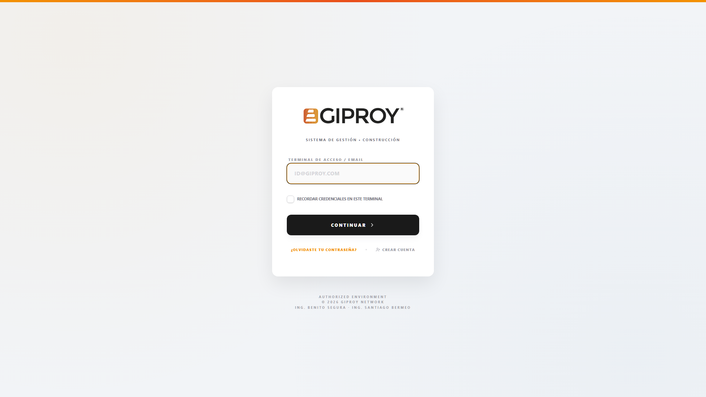
Qué debe observar: el correo inicia el proceso de acceso. Desde esta misma pantalla puede recuperar la contraseña o comenzar el registro de una cuenta.
2.2 Crear una cuenta y registrar una empresa
Seleccione Crear cuenta únicamente cuando la empresa todavía no esté registrada. El formulario comienza con los datos de la persona natural o representante legal: identificación fiscal o documento, nombres, apellidos, nombre corto, alias de empresa, teléfono, nacionalidad y profesión o cargo. Después solicita ubicación y los demás datos necesarios para establecer la cuenta.
El botón Crear mi cuenta ahora permanece inactivo mientras falten datos obligatorios o exista una validación pendiente; complete la información real en vez de rellenar campos solo para habilitarlo. El aviso inferior explica que el registro crea una empresa y convierte a la cuenta inicial en su administradora; por eso un integrante de una empresa ya existente debe ser invitado, no registrar una empresa duplicada.
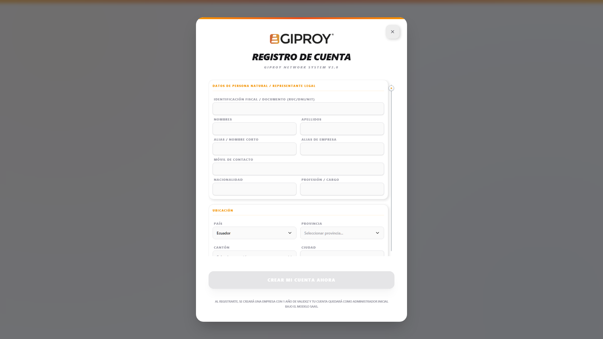
Qué debe observar: el formulario está dividido en bloques y tiene desplazamiento interno. Complete desde arriba y revise cada bloque antes de enviar.
2.3 Recuperar la contraseña
Desde el acceso seleccione ¿Olvidaste tu contraseña?. Escriba el correo de la cuenta y pulse Enviar enlace. Revise la bandeja de entrada y también correo no deseado. Utilice únicamente el enlace más reciente y complete el cambio en un dispositivo confiable. Volver al login regresa sin enviar una solicitud.
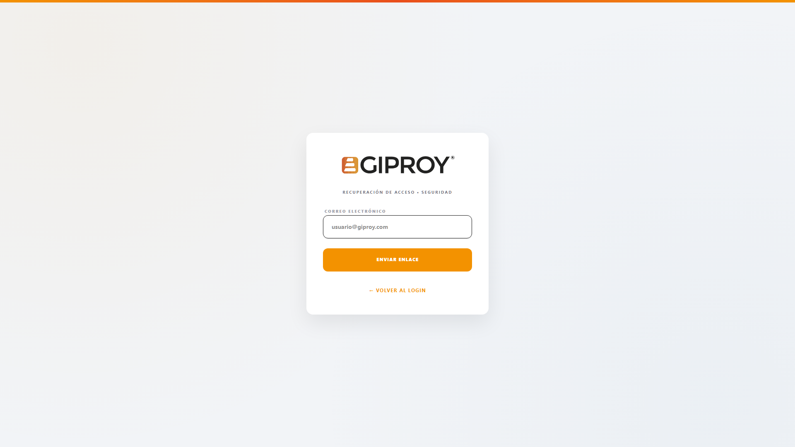
Qué debe observar: GiProy solo necesita el correo para iniciar la recuperación. La contraseña no se escribe en esta pantalla.
2.4 Reconocer la empresa activa
La empresa activa aparece en la barra superior y determina qué información se consulta o modifica. Si pertenece a varias empresas, abra el selector, lea el nombre completo y confirme el cambio. Después compruebe que la cabecera muestra la empresa elegida antes de continuar.
2.5 Comprender la página de inicio
Al iniciar sesión encontrará las grandes áreas de trabajo. Precios unitarios contiene la información reutilizable de costos; Proyectos reúne la información propia de cada obra; y Otros servicios conecta a la empresa con comunidad, transferencias y mercado. Abra el área que corresponde al resultado que necesita producir, no solamente al dato que quiere consultar.
Por ejemplo, si necesita cambiar el precio general del cemento que utilizará en proyectos futuros, trabaje en Recursos dentro de Precios unitarios. Si necesita ajustar la cantidad de cemento de una partida concreta de una obra, hágalo desde el presupuesto de ese proyecto.
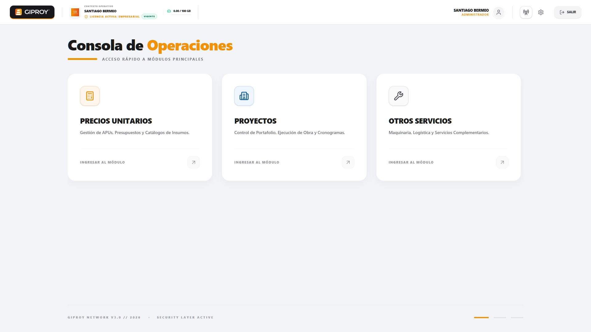
Qué debe observar: las tres áreas principales, Santiago Bermeo como empresa activa en la barra superior, el estado de la licencia, el acceso a los ajustes y la salida segura de la sesión.
2.6 Abrir las principales áreas de trabajo
Seleccione Precios unitarios para bases, recursos y análisis; Proyectos para cartera, presupuesto y planificación; u Otros servicios para comunidad, transferencias y mercado. El logotipo o la opción de inicio permiten regresar sin cerrar la sesión. Dentro de cada área, las migas o la cabecera ayudan a reconocer el recorrido.
Compruebe siempre dónde está trabajando
La barra superior muestra la empresa activa. Algunas personas pueden pertenecer a más de una empresa; cambiarla modifica la información disponible. Dentro de un proyecto, la cabecera identifica el proyecto y su revisión. En precios unitarios, la base de trabajo seleccionada determina qué catálogo está utilizando.
Los permisos explican por qué dos personas ven opciones distintas
GiProy adapta las acciones a la responsabilidad de cada integrante. Una persona puede consultar una EDT pero no modificarla; otra puede editar el presupuesto sin administrar usuarios. Si una opción explicada en este manual no aparece, primero confirme que se encuentra en la empresa y el proyecto correctos. Después consulte con quien administra su empresa si su responsabilidad incluye esa acción.
2.7 Cerrar la sesión de manera segura
Abra el menú de la persona y seleccione Cerrar sesión. Espere a regresar a la pantalla de acceso antes de abandonar un equipo compartido. Cerrar la pestaña no siempre finaliza la sesión; salir desde el control correspondiente permite que GiProy invalide el acceso activo.
Configuración inicial
Preparar la empresa
La configuración de la empresa define quién puede trabajar, qué módulos están disponibles y cómo aparecerán los documentos. Conviene completarla antes de iniciar un proyecto real.
Complete primero la identidad de la empresa
En Ajustes puede revisar el nombre, identificación fiscal, dirección, país, medios de contacto y logo. Esta información no es meramente descriptiva: puede aparecer en reportes, formularios y comunicaciones. Utilice datos oficiales y un logo legible sobre fondo claro.
Incorpore a las personas con la responsabilidad mínima necesaria
Al crear o invitar a una persona, piense en el trabajo que realizará. Quien consulta avances no necesita los mismos permisos que quien modifica precios o aprueba revisiones. Dar únicamente el acceso necesario reduce errores y hace que la interfaz sea más clara.
Ejemplo
En la empresa constructora “Horizonte Andino”, Elena administra la empresa y los equipos; Martín prepara APUs y presupuestos; Camila organiza el cronograma; y Sofía consulta información para supervisión. Cada persona encuentra las herramientas que necesita sin entrar en áreas que no forman parte de su responsabilidad.
Comprenda el alcance del plan contratado
Algunas herramientas, entre ellas BIM, pueden depender del plan de la empresa. Si el plan vence, la aplicación puede pasar a consulta o limitar determinados módulos. La información no debe interpretarse como eliminada: lea el aviso de la pantalla y coordine la renovación con quien administra la empresa.
Parte I · Precios unitarios
3. Comprender el sistema de precios unitarios
Los precios unitarios no son una lista auxiliar de valores. Son el punto de partida económico de GiProy: primero se describe qué se consume para ejecutar una unidad de trabajo; después ese análisis se utiliza para valorar cantidades, preparar el presupuesto, calcular recursos y planificar la obra.
3.1. Por qué los precios unitarios son la base del trabajo
Antes de crear un proyecto conviene disponer de una biblioteca de precios fiable. En ella se guardan los materiales, la mano de obra, los equipos y los análisis que la empresa podrá reutilizar. Esta separación evita escribir de nuevo el precio del cemento o la composición de una mampostería cada vez que aparece una partida semejante.
El dato importante no es únicamente el total. GiProy conserva la explicación de ese total. Si un metro cuadrado de mampostería cuesta 24,88, el análisis permite comprobar cuánto corresponde a bloque, mortero, cuadrilla, herramienta y cualquier otro componente. Esa trazabilidad hace posible revisar el presupuesto cuando cambia el precio de un material o el rendimiento de la mano de obra.
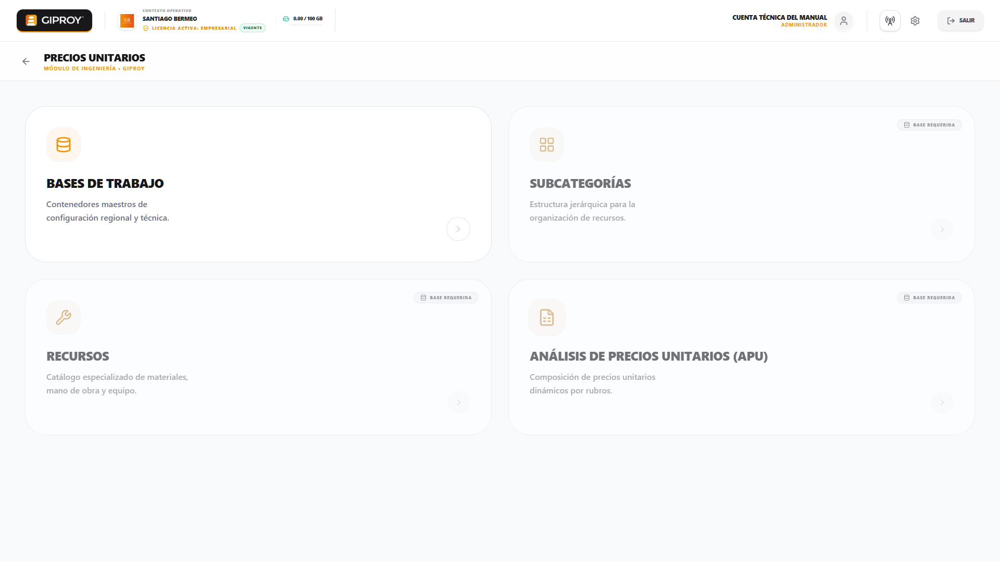
Entrada real a Precios unitarios. En este estado todavía no existe un contexto económico activo. Por eso puede entrar en Bases, pero Subcategorías, Recursos y APUs muestran “Base requerida”. No es un error ni una carga incompleta: GiProy evita que se modifiquen precios sin saber a qué biblioteca deben pertenecer.
3.2. Cómo se forma el precio de una actividad
Un precio unitario responde a una pregunta: cuánto cuesta producir una unidad terminada. La unidad puede ser un metro cuadrado de pared, un metro cúbico de hormigón, una hora de equipo o una unidad colocada. Para responder, el análisis reúne recursos con una cantidad o un rendimiento. GiProy multiplica el consumo correspondiente por el precio de cada recurso, agrupa los parciales y presenta el coste resultante.
Ejemplo de lectura
Si la partida es “Mampostería de bloque” y se mide en m², las cantidades del análisis deben explicar lo necesario para construir un solo metro cuadrado. Los 257,87 m² del proyecto no se escriben dentro del APU; esa cantidad pertenece al presupuesto. El APU aporta el precio de 24,88 por m² y el presupuesto calcula 257,87 × 24,88 = 6.415,81.
3.3. Relación entre recursos, análisis, presupuestos y proyectos
El recorrido correcto se lee de izquierda a derecha: un recurso tiene unidad y precio; un análisis combina recursos para obtener el precio de una actividad; el presupuesto asigna a esa actividad una cantidad propia de la obra; y el proyecto organiza, planifica y controla el resultado. Si se cambia el precio de un recurso, debe revisarse el análisis; si se cambia la cantidad total de obra, debe modificarse la partida del presupuesto, no el recurso.
3.4. Diferencia entre información general y precios de un proyecto
Una base maestra contiene conocimiento reutilizable de la empresa. Una base de proyecto contiene la realidad económica de una obra y una revisión concretas. Esta distinción protege el trabajo: adaptar el rendimiento de la mampostería por las condiciones de una obra no debería alterar automáticamente todos los proyectos futuros.
Cuando el proyecto nace a partir de una base maestra, conserva la procedencia. Puede incorporar elementos faltantes del origen y, al mismo tiempo, mantener sus ajustes locales. Antes de aceptar una actualización debe comprobar qué se añade, qué ya existe y qué información del proyecto se conservará.
3.5. Orden recomendado para preparar una estructura de precios
Abra o cree una base.Define dónde quedará guardado todo el trabajo posterior.
Revise las unidades.Evita mezclar, por ejemplo, kilogramo con quintal o hora con jornada.
Organice las clasificaciones.Las categorías y subcategorías permiten encontrar los recursos cuando el catálogo crece.
Registre y revise los recursos.Compruebe descripción, unidad, precio, procedencia y clasificación.
Construya los APUs.Agregue los recursos y defina el consumo necesario para una unidad terminada.
Pruebe el resultado.Abra el análisis, lea sus subtotales y confirme que el precio puede explicarse sin recurrir a cálculos externos.
Lleve el análisis al proyecto.Solo entonces asigne cantidades y prepare el presupuesto de la obra.
3.6. Consecuencias de modificar un recurso o un análisis existente
Editar no significa lo mismo que copiar. Al editar se modifica el registro existente dentro de su alcance; al duplicar se crea otro que deberá identificarse y revisarse. Antes de cambiar un precio utilizado, compruebe si pretende actualizar la biblioteca general, corregir la base del proyecto o ajustar únicamente una partida. La decisión determina quién recibirá el cambio.
4. Bases de trabajo
4.1. Qué es una base de trabajo
Una base de trabajo agrupa subcategorías, recursos y APUs bajo una realidad concreta: país, mercado, fecha de precios o tipo de obra. No conviene mezclar en una misma base precios que pertenecen a condiciones incompatibles. Puede crear una base propia, recibirla de otra empresa o incorporar contenido adquirido, pero siempre debe reconocer su procedencia antes de utilizarla.
Ejemplo
“Quito · Edificación · julio 2026” puede ser una base adecuada para una obra urbana valorada con precios actuales. Una base histórica de 2024 puede servir como referencia, pero no debería emplearse sin revisar sus costos.
4.2. Diferencia entre una base maestra y una base de proyecto
La tarjeta naranja identifica una base maestra; la azul identifica una base de proyecto. La base maestra sirve como biblioteca de referencia de la empresa. La base de proyecto está vinculada a una obra y puede mostrar de qué base maestra procede. No cambie una base de proyecto pensando que está corrigiendo el catálogo general: el alcance queda deliberadamente separado.
4.3. Comprender la pantalla de bases
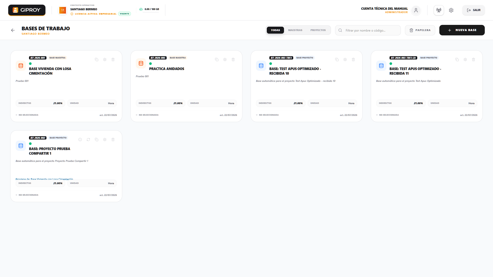
Pantalla real de Santiago Bermeo. Arriba se encuentran los filtros Todas, Maestras y Proyectos; después aparecen el buscador, Papelera y Nueva base. Cada tarjeta muestra código, tipo, nombre, parámetros y estado de selección. La base “BASE: PROYECTO PRUEBA COMPARTIR 1” es azul, está vinculada al proyecto y declara que procede de “Base Vivienda con Losa Cimentación”.
Una tarjeta no es solamente un rótulo. Su código permite reconocerla en operaciones e informes; el color y la etiqueta explican su tipo; “Proviene de” muestra el origen; “Indirectos” presenta el porcentaje configurado; y el punto inferior indica si es la base activa. Los iconos de la esquina superior ejecutan operaciones sobre esa base concreta, por lo que debe leer primero el nombre de la tarjeta.
4.4. Buscar y filtrar bases
Todas reúne el catálogo completo. Maestras deja visibles las bibliotecas generales. Proyectos muestra las bases vinculadas a obras y sus revisiones. El buscador reduce las tarjetas por nombre o código; no borra ni cambia datos. Si una base “desaparece”, limpie el texto de búsqueda y vuelva a Todas antes de concluir que fue eliminada.
4.5. Crear una base nueva
Pulse Nueva base en la parte superior derecha. Se abre una ventana independiente; la pantalla del fondo se desenfoca para señalar que primero debe terminar o cancelar esta decisión. Crear una base maestra es apropiado cuando la empresa necesita un nuevo repositorio de referencia. La base vinculada a un proyecto se genera desde el flujo del propio proyecto.
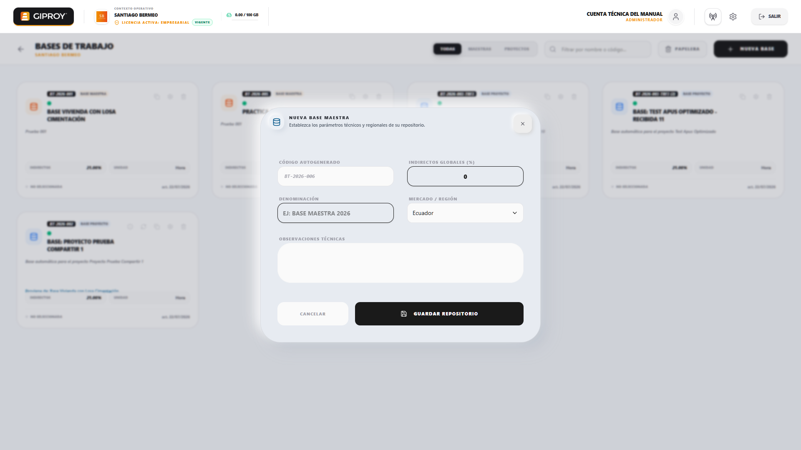
Ventana Nueva base maestra. El código BT-2026-006 se genera automáticamente y no se escribe. La denominación identifica la biblioteca; Indirectos globales guarda un porcentaje; Mercado o región sitúa el contexto; y Observaciones técnicas permite documentar alcance y fecha de referencia. La X y Cancelar cierran sin crear. Guardar repositorio confirma la creación.
4.6. Completar los datos generales de la base
Escriba una denominación que siga siendo comprensible dentro de varios años. Un nombre como “Base nueva” no explica el lugar, período ni uso. Es preferible “Quito · Edificación · julio 2026”. El código aparece desactivado porque GiProy lo administra para evitar repeticiones. En Observaciones técnicas anote la fuente de los precios, la fecha de levantamiento y cualquier limitación relevante.
4.7. Definir moneda, lugar, fecha y unidad de rendimiento
En la versión actual, la ventana de creación muestra directamente Mercado o región, pero no ofrece campos independientes de moneda, fecha de corte o unidad de rendimiento. No deben inventarse dentro del nombre como si fueran datos estructurados. Registre la fecha de referencia en Observaciones técnicas y compruebe la configuración económica de la empresa antes de cargar precios. Las unidades se administran en el catálogo y se asignan después a recursos y APUs.
4.8. Configurar porcentajes y costes indirectos
El campo Indirectos globales acepta el porcentaje que servirá como referencia de la base. Introduzca 21 para representar veintiún por ciento, no 0,21, y confirme el criterio utilizado por la empresa. Un porcentaje general no sustituye la revisión de los indirectos propios de un presupuesto o contrato.
4.9. Seleccionar y abrir una base
Pulse en una zona libre de la tarjeta, no en sus pequeños iconos de acción. GiProy activa la base y vuelve a la entrada de Precios unitarios. A partir de entonces quedan disponibles Subcategorías, Recursos y APUs. Si solo desea consultar la configuración o clonar, utilice el icono correspondiente sin abrir la tarjeta.
4.10. Reconocer cuál es la base activa
La tarjeta seleccionada muestra un punto verde y el texto Activa ahora; las demás dicen No seleccionada. El contexto también debe aparecer en la navegación superior de las pantallas económicas. Antes de crear o importar información, vuelva a comprobar ese nombre: el sistema puede guardar correctamente un recurso en una base distinta de la que usted tenía en mente.
4.11. Editar una base
El icono de engranaje abre Configuración de base con los valores existentes. Cambie solo la identificación o parámetros que sigan describiendo el mismo repositorio. Pulse Guardar para aplicar o Cancelar para conservar el estado anterior. Si pretende conservar una fotografía histórica y preparar un período nuevo, utilice Clonar.
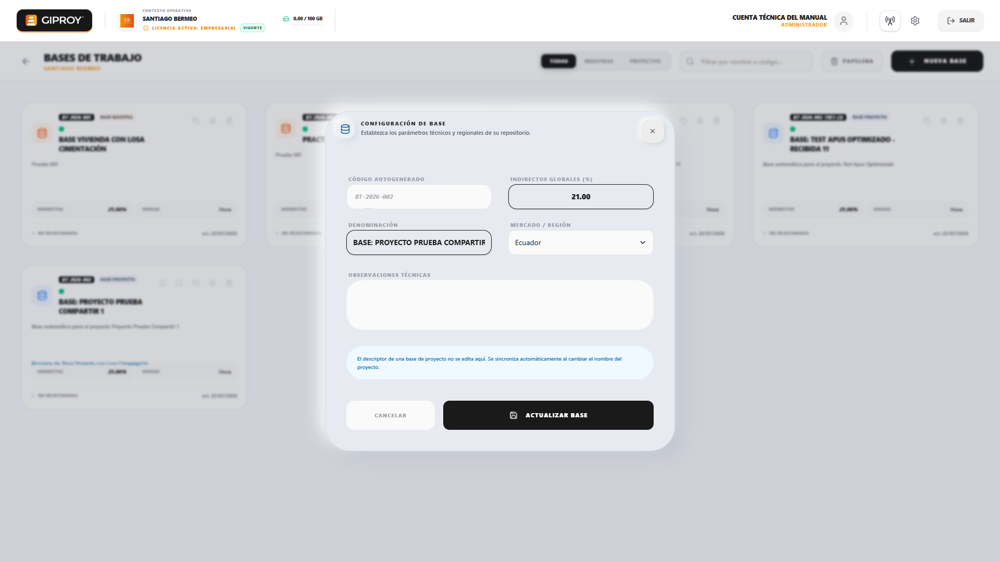
Edición de la base de proyecto. El código BT-2026-002 es autogenerado. Puede revisar denominación, indirectos, región y observaciones. El aviso azul aclara que la descripción de una base de proyecto no se edita aquí: se sincroniza al cambiar el nombre del proyecto. Actualizar base confirma; Cancelar y la X cierran sin guardar.
4.12. Clonar una base
El icono de dos hojas crea una nueva base a partir de la seleccionada. La copia conserva una estructura que después debe revisarse; no implica que sus precios hayan sido actualizados. Cambie la denominación, documente el nuevo período y recorra los recursos sensibles antes de emplearla en un presupuesto.
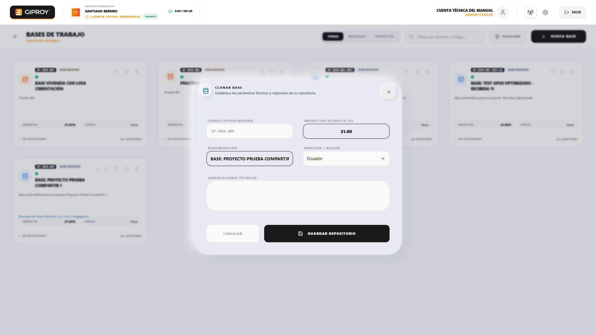
Clonar no edita el origen. La ventana propone el nuevo código BT-2026-006 y copia denominación, indirectos y región de la base elegida. Cambie el nombre y observaciones antes de Guardar repositorio. Cancelar o la X dejan intactas tanto la base original como la copia aún no creada.
4.13. Utilizar una base como origen de otra
Las bases de proyecto pueden indicar “Proviene de” y el nombre de una base maestra. Esa relación permite reconocer el catálogo de referencia y localizarlo. El proyecto conserva sus propios ajustes: el origen explica de dónde partió, pero no convierte ambos repositorios en una sola lista editable.
4.14. Sincronizar información procedente de la base de origen
El icono de flechas circulares aparece en bases de proyecto vinculadas a una base maestra. Antes de aplicar, GiProy prepara una vista de comparación. Puede elegir APUs nuevas, que añade faltantes; Valores de APU, que reajusta valores ya existentes; o Sincronismo integral, que combina ambas operaciones.
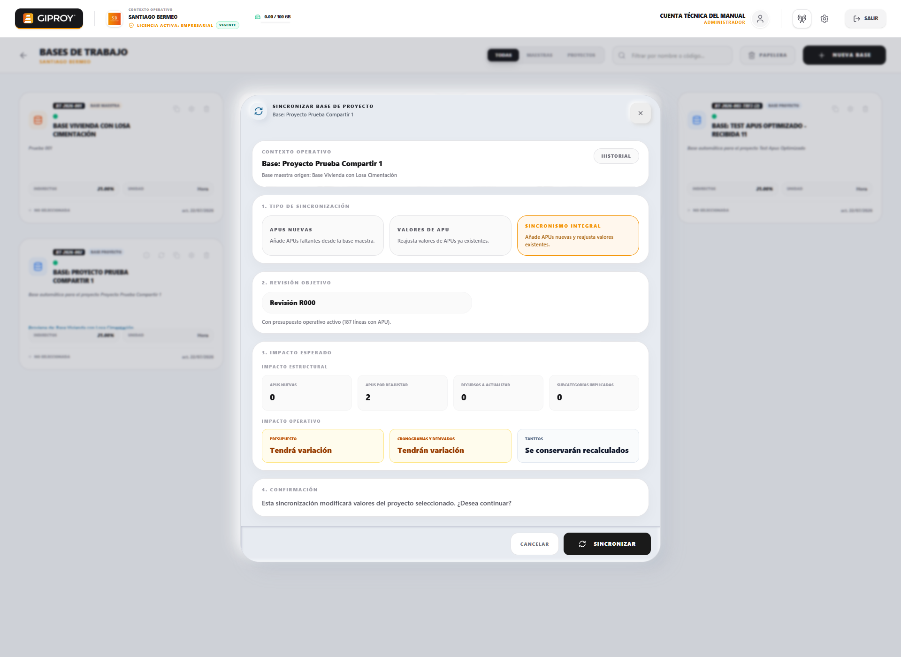
Vista previa real sin confirmar. El origen es Base Vivienda con Losa Cimentación y el destino Proyecto Prueba Compartir 1, revisión R000. Con Sincronismo integral se detectan 0 APUs nuevas, 2 APUs por reajustar, 0 recursos y 0 subcategorías. Presupuesto y cronogramas tendrán variación; los tanteos se conservarán recalculados. Cancelar no cambia nada; Sincronizar aplica la operación.
4.15. Comprender qué se actualiza y qué se conserva
Lea el resumen previo: distingue elementos disponibles en el origen, registros ausentes y contenido que ya existe en el destino. Si un APU fue adaptado para la obra, confirme que la operación propuesta no lo sustituirá. Cuando aparezcan conflictos, decida caso por caso y documente el motivo.
4.16. Consultar el historial de cambios
El icono de información abre el historial de sincronización. Allí debe comprobar fecha, origen y resultado de cada operación. El historial sirve para responder por qué apareció determinado contenido; no sustituye la revisión económica del precio importado.
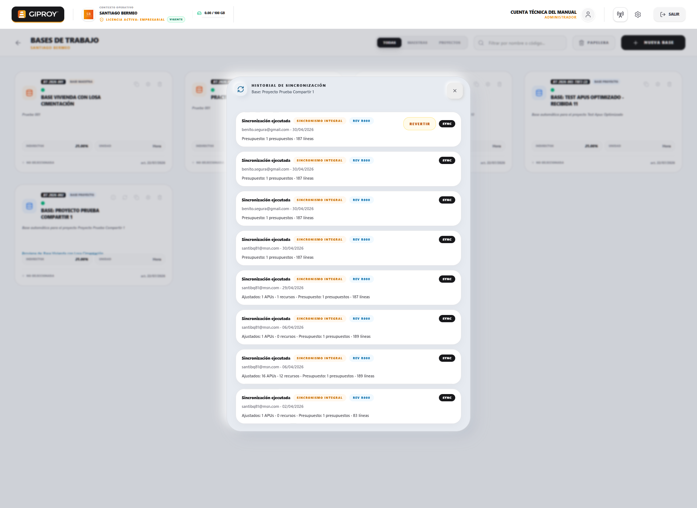
Historial real de la revisión R000. Cada tarjeta identifica responsable, fecha, tipo de sincronismo y alcance sobre APUs, recursos, presupuesto y líneas. Revertir aparece únicamente donde todavía es una operación válida; no debe pulsarse como consulta, porque desharía una sincronización. La X cierra el historial.
4.17. Enviar una base a la papelera
El icono de papelera de una tarjeta abre una confirmación. Si la base está vinculada a un proyecto, el aviso explica que el proyecto y sus revisiones también se moverán durante el período de retención. Lea el nombre completo antes de confirmar. Cancelar cierra la ventana sin cambiar nada.
4.18. Recuperar o eliminar una base
El botón Papelera de la barra superior abre una ventana con las bases retiradas durante siete días. Actualizar vuelve a consultar el contenido; Cerrar o la X regresan a la pantalla sin modificarlo. Cuando exista un registro, Restaurar lo devuelve al catálogo y Eliminar definitivamente finaliza la retención.
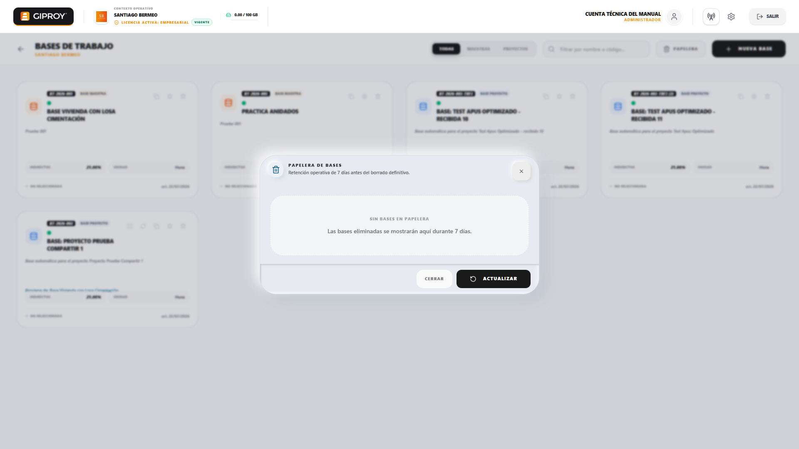
Papelera real de Santiago Bermeo. Está vacía y por eso muestra “Sin bases en papelera”. Este estado es válido, no una carga pendiente. El texto confirma la retención de siete días. Actualizar comprueba de nuevo; Cerrar y la X abandonan la ventana.
4.19. Recomendaciones para mantener varias bases
Utilice una convención estable de nombres, conserve la fecha de referencia, limite la edición de bases maestras a responsables designados y documente cada clonación o sincronización. No cree una base para corregir un error de escritura ni convierta una base antigua en nueva cambiándole únicamente el nombre.
4.20. Errores frecuentes y cómo evitarlos
Los problemas más comunes son trabajar con la base equivocada, confundir una base de proyecto con una maestra, aplicar indirectos con una escala incorrecta, clonar sin actualizar precios y creer que un filtro ha eliminado información. La comprobación preventiva es sencilla: empresa correcta, nombre de base, tipo, origen y estado Activa ahora.
Procedimiento guiado
4.21. Ejemplo completo de creación de una base
Entre en Precios unitarios y pulse Bases.Es la única opción disponible cuando todavía no hay base activa.
Pulse Nueva base.Espere a que aparezca completa la ventana Nueva base maestra.
Escriba “Quito · Edificación · julio 2026”.No modifique el código autogenerado.
Defina el porcentaje de indirectos.Introduzca el valor acordado por la empresa y confirme que está expresado como porcentaje.
Seleccione Ecuador.El mercado sitúa geográficamente la biblioteca.
Documente el origen.En Observaciones indique fecha de precios, fuente y alcance de obra.
Pulse Guardar repositorio una sola vez.Espere a que la ventana se cierre y la tarjeta aparezca.
Abra la nueva tarjeta.Compruebe Activa ahora y vuelva a Precios unitarios para continuar con unidades y clasificaciones.
Resultado esperado: la base figura como maestra, conserva su código propio, muestra el porcentaje y región definidos y habilita el trabajo posterior de Subcategorías, Recursos y APUs.
Organice recursos antes de construir APUs
Un recurso representa aquello que participa en una actividad: material, mano de obra, equipo u otro componente de costo. Registre una descripción clara, unidad coherente, código reconocible y precio verificable. Las subcategorías permiten encontrarlo después sin depender de recordar su nombre exacto.
Antes de crear un recurso nuevo, búsquelo. Dos registros que representan el mismo cemento con nombres levemente distintos pueden terminar repartiendo consumos y dificultando las actualizaciones.
El APU explica cómo se forma el precio de una actividad
Un Análisis de Precio Unitario combina recursos y rendimientos para responder una pregunta concreta: “¿Cuánto cuesta ejecutar una unidad de esta actividad?”. Para una mampostería medida en metros cuadrados, el análisis puede incluir bloque, mortero, albañil, ayudante, herramienta y equipo. La cantidad de cada recurso debe corresponder a una unidad de la actividad.
Defina la actividad.Escriba un nombre inequívoco, su unidad de medida y una descripción suficiente para reconocer el alcance.
Agregue los recursos.Seleccione recursos existentes de la base y confirme que sus unidades son compatibles con el rendimiento utilizado.
Revise cantidades y rendimientos.Compruebe que expresan lo necesario para producir una unidad del APU, no la cantidad total de la obra.
Compruebe el resultado.Revise subtotales por tipo de recurso, costo directo y cualquier componente adicional aplicable.
Guarde y documente.Use observaciones cuando exista una condición que otra persona deba conocer antes de reutilizar el análisis.
5. Unidades de medida
5.1. Para qué sirven las unidades
La unidad expresa cómo se compra un recurso o cómo se mide una actividad. Sin ella, el número carece de significado: 25 puede ser veinticinco kilogramos, metros, horas o unidades. GiProy utiliza la unidad para presentar el catálogo, calcular líneas de un APU y trasladar el precio al presupuesto.
5.2. Unidades empleadas en recursos y actividades
Un recurso puede comprarse en kg y una actividad medirse en m². No tienen que coincidir: el análisis explica cuántos kilogramos se consumen para producir un metro cuadrado. Lo que sí debe mantenerse es la coherencia entre el precio del recurso y su unidad.
5.3. Crear una unidad
Dentro del editor de un APU, pulse (Crear nueva) + junto al selector Unidad. La ventana solicita una abreviatura —por ejemplo, m²— y una descripción completa —Metro cuadrado—. Crear confirma; Cancelar o la X cierran sin guardar. La unidad queda disponible en la base activa, no en todas las bases de la empresa.
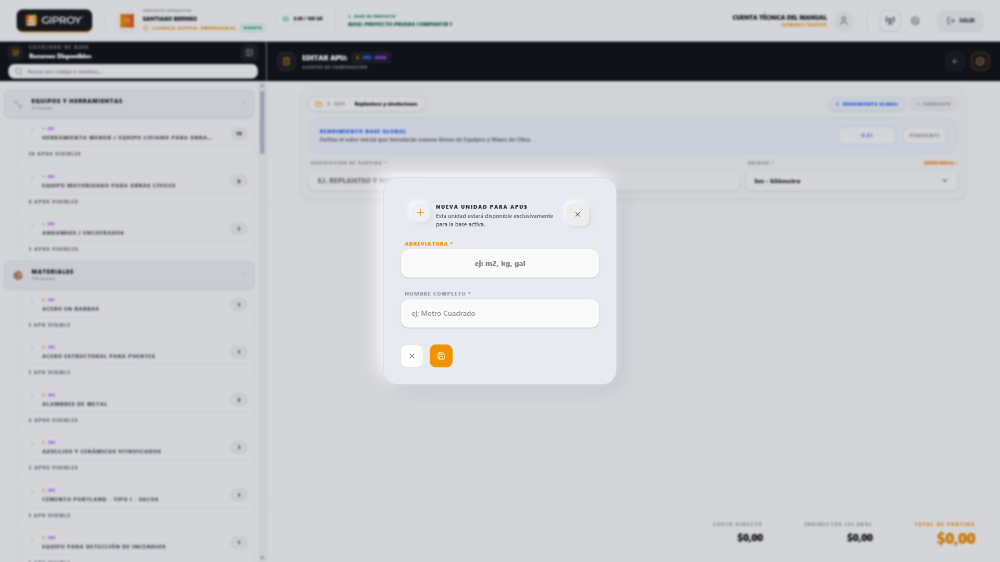
Unidad exclusiva de la base activa. Abreviatura y Nombre completo son obligatorios. Escriba, por ejemplo, “m²” y “Metro cuadrado”. El disquete guarda, la X inferior cancela y la X superior cierra. La ventana está dentro del editor, pero crear la unidad no guarda automáticamente el APU.
5.4. Editar una unidad existente
La versión actual no ofrece un botón de edición de unidades dentro de la ventana de creación de APU. Si una unidad existente está mal escrita o se utilizó con otro significado, no cree una abreviatura casi idéntica para ocultar el problema: revise primero dónde está utilizada y utilice la administración disponible para la base.
5.5. Elegir correctamente la magnitud
Use unidad para elementos contables; m para longitudes; m² para superficies; m³ para volúmenes; kg o t para peso; y h o jornada para tiempo, según la forma en que esté expresado el precio. Evite abreviaturas ambiguas y conserve el mismo criterio en recursos, análisis e informes.
5.6. Consecuencias de cambiar una unidad utilizada
Cambiar el texto no convierte las cantidades. Si un precio por tonelada pasa a mostrarse como kilogramo sin dividirlo entre mil, el análisis será incorrecto aunque la pantalla no muestre un error. Cuando cambia la magnitud, cree o seleccione la unidad correcta y recalcule cantidad y precio.
5.7. Recomendaciones para evitar unidades duplicadas
Busque antes de crear, acuerde abreviaturas, utilice singular en la descripción completa y no diferencie unidades únicamente mediante mayúsculas o puntos. “m2”, “M2” y “m²” no deberían representar tres conceptos distintos.
6. Familias, categorías y subcategorías
Pantalla: Subcategorías
6.1. Cómo se organiza el catálogo de precios
GiProy organiza el catálogo de lo general a lo particular. Primero se elige el gran grupo económico y después una subcategoría reconocible. Esa ubicación se utiliza en Recursos y APUs para reducir búsquedas y evitar que un catálogo extenso se convierta en una única lista.
6.2. Diferencia entre familia, categoría y subcategoría
La familia o grupo principal representa una naturaleza amplia —materiales, mano de obra o equipos, por ejemplo—. La categoría reúne conceptos relacionados y la subcategoría describe el conjunto concreto donde se guardarán registros semejantes. Una subcategoría no es un recurso: “Cementos” organiza; “Cemento Portland tipo I, saco de 50 kg” es el elemento que tendrá unidad y precio.
6.3. Comprender la pantalla de subcategorías
La columna lateral permite elegir el grupo principal. La zona central muestra las subcategorías del grupo elegido. En la barra superior aparecen las operaciones de selección e intercambio; el buscador trabaja sobre el grupo visible; y Nueva subcategoría abre la ventana de creación. La flecha superior izquierda vuelve a la entrada de Precios unitarios sin cambiar datos.
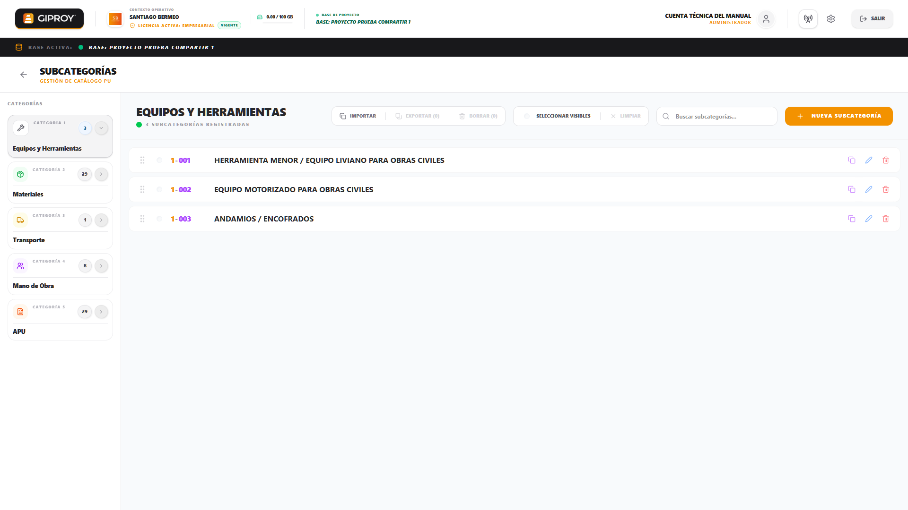
Catálogo real de la base del proyecto. La banda negra y la cabecera confirman “BASE: PROYECTO PRUEBA COMPARTIR 1”. A la izquierda aparecen Equipos y herramientas, Materiales, Transporte, Mano de obra y APU, cada una con su cantidad. En el centro se ven los códigos 1-001 a 1-003. Los círculos permiten seleccionar; los seis puntos permiten ordenar; y los iconos finales duplican, editan o borran la fila.
6.4. Buscar y filtrar clasificaciones
Escriba una parte del nombre en “Buscar subcategorías”. La lista se reduce mientras escribe. El filtro no cambia la categoría seleccionada ni borra registros. Si no encuentra un concepto, limpie el texto, revise el grupo principal y pruebe una palabra menos específica antes de crear otro.
6.5. Crear una subcategoría
Seleccione primero el grupo correcto y pulse Nueva subcategoría. La ventana muestra ese grupo como contexto. Escriba una descripción inequívoca y añada observaciones cuando ayuden a decidir qué debe guardarse allí. El botón naranja con disquete guarda; el botón blanco con X y la X superior cierran sin crear.
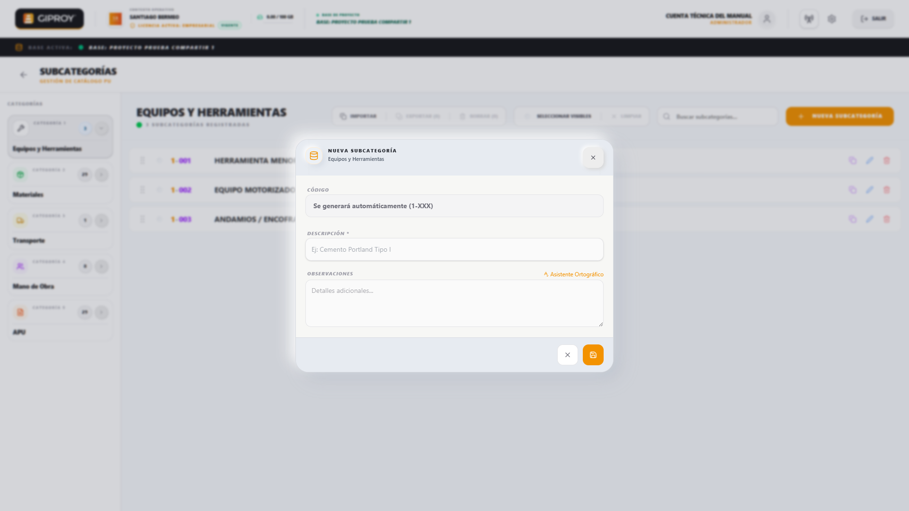
Nueva subcategoría. El código se generará como 1-XXX porque la categoría activa es Equipos y herramientas. Descripción es obligatoria. Observaciones es opcional y ofrece Asistente ortográfico. No aparece una clasificación normalizada en esta ventana concreta: no debe buscarla ni detener el trabajo por su ausencia.
6.6. Asignarle nombre, código y orden
El sistema administra el código interno y el orden del catálogo. La persona aporta una descripción comprensible; no debe escribir códigos dentro del nombre para forzar una secuencia visual. Una clasificación normalizada puede asociarse mediante el buscador por código o título, pero solo después de comprobar que define el mismo contenido.
6.7. Editar una subcategoría
El lápiz abre la misma ventana con los valores actuales. Editar corrige o aclara la clasificación existente; no mueve automáticamente sus recursos a un concepto económico distinto. Pulse Actualizar para aplicar. Si el nuevo nombre altera el significado, revise después los recursos que siguen asociados.
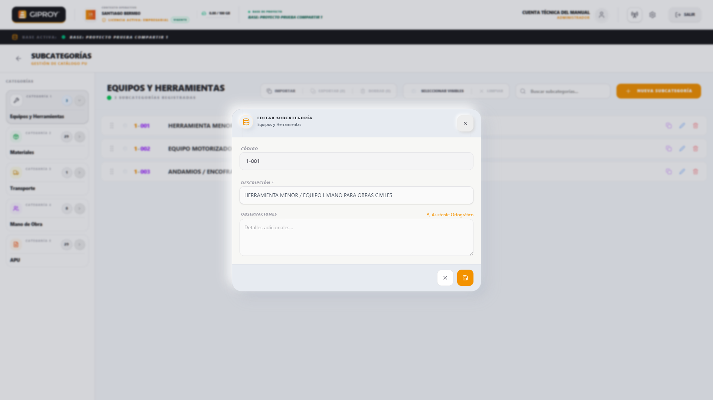
Edición de una clasificación existente. El código 1-001 permanece bloqueado; se pueden ajustar la descripción y las observaciones. Guardar actualiza el mismo registro, no crea otro. La captura no modifica el dato: la ventana se cerró sin confirmar.
6.8. Cambiar el orden de presentación
El asa de la tarjeta permite arrastrarla. Suelte dentro del mismo grupo para cambiar el orden o sobre otro grupo cuando la interfaz permita trasladarla. Espere la confirmación antes de mover otra tarjeta. El orden facilita la lectura, pero no modifica precios ni análisis.
6.9. Importar subcategorías
Pulse Importar. La ventana explica el formato y ofrece un área para pegar filas copiadas desde una hoja de cálculo. Seleccione el grupo de destino, pegue nombre y observación separados por tabulación y lea la vista previa. El botón final indica cuántos registros válidos se crearán.
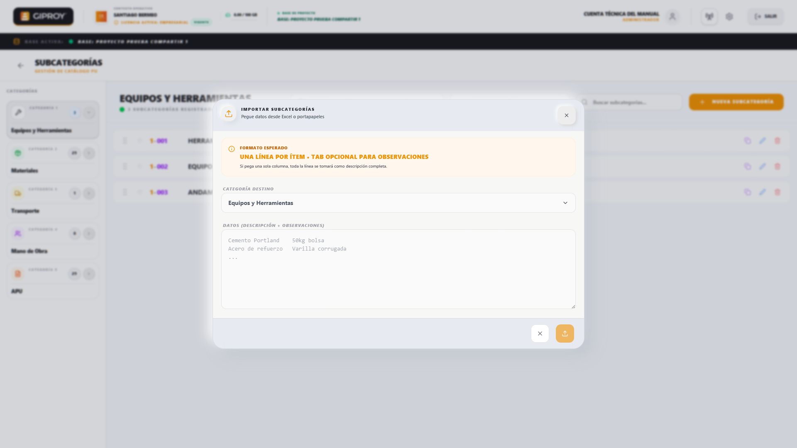
Importación desde Excel o portapapeles. Cada línea crea un elemento. La primera columna es la descripción y una segunda columna, separada por tabulación, puede contener observaciones. Categoría destino decide dónde se guardarán todas las filas. El botón naranja permanece condicionado a que existan registros válidos; la X inferior cancela y la X superior cierra.
Prepare una fila por subcategoría.No incluya títulos, totales ni celdas combinadas.
Pegue los datos.GiProy interpreta las tabulaciones como columnas y los saltos como registros.
Compare válidos, inválidos y duplicados.Los tres contadores deben coincidir con su revisión externa.
Corrija antes de confirmar.Una fila inválida no debe darse por importada aunque las demás sean correctas.
Confirme una sola vez.Espere el resultado y vuelva a buscar las nuevas subcategorías.
6.10. Resolver coincidencias y duplicados
La vista previa marca los nombres que ya existen en el mismo grupo. No cambie una letra únicamente para conseguir que la fila sea aceptada. Decida si el registro existente sirve, si debe editarse o si el nuevo concepto es realmente distinto. Un duplicado aceptado por variación ortográfica divide después los recursos.
6.11. Eliminar una clasificación sin desorganizar el catálogo
La papelera de una tarjeta solicita confirmación. Para varias, marque las casillas y utilice Borrar seleccionados. Seleccionar visibles marca únicamente lo que permanece después del filtro; Limpiar selección retira las marcas y no elimina nada. Antes de borrar, compruebe si contiene recursos y dónde deberán quedar.
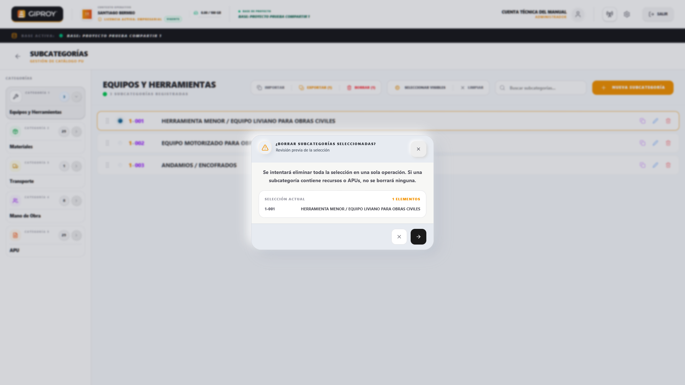
Primera comprobación antes de borrar. La ventana identifica la selección actual y obliga a avanzar a una confirmación final. La X cierra la ventana; el botón con flecha continúa, pero todavía no elimina. En este ejemplo solo está marcada una subcategoría: si usted esperaba varias, debe cancelar y revisar los filtros y la selección.
6.12. Ejemplo de organización para una obra de edificación
Dentro de Materiales pueden existir subcategorías como Cementos, Áridos, Acero de refuerzo y Bloques. “Cementos” contendrá los distintos cementos con su presentación y precio; “Áridos” contendrá arena y grava. El APU de mampostería podrá localizar bloque y materiales de mortero en sus grupos respectivos sin mezclar conceptos.
7. Banco de recursos
Pantalla: Recursos
7.1. Qué es un recurso
Un recurso es aquello que se consume, utiliza o remunera para ejecutar una actividad. Tiene identidad, tipo, unidad y precio. Todavía no expresa cuánto se necesita para construir; esa cantidad se define al incorporarlo a un APU.
7.2. Mano de obra, materiales, equipos y otros recursos
Mano de obra representa tiempo y especialidad de las personas; materiales representa bienes que quedan incorporados o se consumen; equipos representa maquinaria y herramientas con un coste de uso; y otros recursos cubre conceptos admitidos que no encajan en los grupos anteriores. El tipo decide dónde aparece la línea y cómo se interpreta el análisis.
7.3. Comprender la pantalla del banco de recursos
La pantalla se divide en categorías, subcategorías y el catálogo de recursos. Elegir una categoría cambia el grupo general; elegir una subcategoría reduce el alcance. El buscador local trabaja sobre ese alcance. El buscador global, identificado como búsqueda en todo el maestro, encuentra recursos aunque estén en otra subcategoría; seleccionar un resultado conduce a su ubicación.
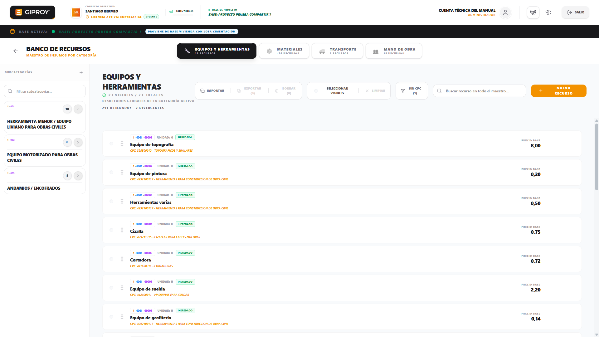
Banco real de la base del proyecto. Equipos y herramientas contiene 23 recursos; Materiales 176; Transporte 2; y Mano de obra 15. En la lista se ven código, unidad H, estado Heredado, descripción, CPC y precio base. “214 heredados · 2 divergentes” resume la procedencia de la categoría, no la cantidad visible en una sola subcategoría.
7.4. Reconocer el origen y estado de cada recurso
Las etiquetas Nativo, Heredado, Local y Divergente explican el origen. Un recurso heredado coincide con la base de origen; uno divergente fue modificado localmente; uno local existe solo en esta base. “Revisión pendiente” indica que todavía debe comprobarse antes de considerarlo confiable.
7.5. Buscar, ordenar y filtrar recursos
El buscador local limita resultados a la subcategoría abierta. La búsqueda global recorre la base completa: escriba una palabra o código y espere el contador de coincidencias. Cada resultado indica categoría, subcategoría, código y descripción; al elegirlo, GiProy cambia el contexto y lleva hasta la tarjeta real. El filtro Sin CPC muestra registros pendientes de clasificación. Los filtros cambian la vista, no los datos.
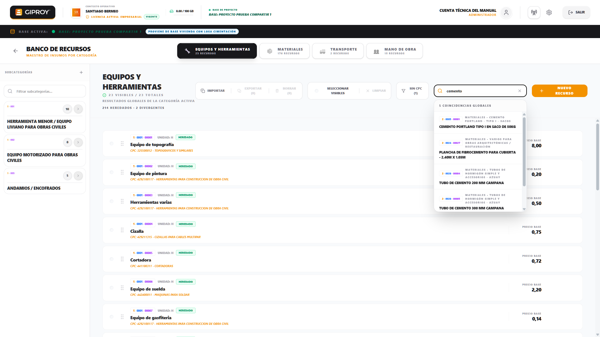
Una búsqueda que atraviesa todo el maestro. Aunque la pantalla está situada en Equipos y herramientas, la palabra “cemento” devuelve cinco coincidencias globales de Materiales. Cada fila enseña código, ubicación y descripción. Esto evita recorrer manualmente todas las subcategorías; seleccionar una coincidencia abre su ubicación, pero no la copia ni la modifica.
7.6. Crear un recurso nuevo
Seleccione categoría y subcategoría, pulse Nuevo recurso y espere el editor. La ventana conserva el lugar de destino. Guardar crea el registro; Cancelar o la X cierran sin hacerlo. Si el botón está desactivado, revise los campos obligatorios en lugar de pulsarlo repetidamente.
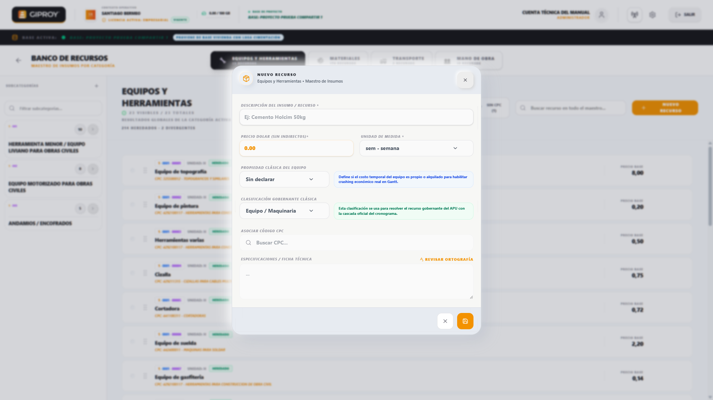
Nuevo recurso dentro de Equipos y herramientas. Los asteriscos señalan descripción, precio y unidad obligatorios. Propiedad clásica del equipo distingue propio, alquilado o sin declarar y alimenta el análisis económico temporal. Clasificación gobernante ayuda a relacionar el recurso con la planificación. CPC normaliza el producto y Especificaciones conserva la ficha técnica. El precio se escribe sin indirectos.
7.7. Completar código, descripción, unidad y tipo
El código se genera conforme a la ubicación del catálogo; la descripción debe distinguir presentación y calidad; la unidad debe coincidir con la forma de compra; y la clasificación gobernante debe representar su naturaleza económica. Para equipos, declare también si el coste temporal es propio o alquilado cuando lo conozca. “Cemento” es insuficiente si la empresa compra sacos y granel con precios distintos.
7.8. Introducir el precio y su fecha de referencia
Escriba el precio correspondiente a una unidad completa del recurso. Utilice el separador decimal admitido y no incorpore la cantidad total de la obra. Si el editor no ofrece una fecha independiente, documente la fecha y fuente en observaciones o en el control de la base.
7.9. Asignar categoría y subcategoría
La ubicación permite encontrar el recurso desde el catálogo lateral del APU. Si cambia su ubicación, el recurso sigue siendo el mismo; no se duplica ni cambia de precio. Después de moverlo, búsquelo en el nuevo grupo para confirmar.
7.10. Clasificación CPC y su finalidad
El CPC relaciona el recurso con una clasificación normalizada de productos. Sirve para intercambio y análisis; no sustituye la descripción comercial, la unidad ni el precio propio de la empresa.
7.11. Buscar y asignar un código CPC
Busque por código o descripción, abra el resultado y compruebe el nivel antes de aceptar. Para aplicar un mismo CPC a varios recursos, marque al menos dos tarjetas y pulse la etiqueta que aparece en una de las seleccionadas. La ventana indica cuántos recursos recibirá el código y advierte que reemplazará cualquier CPC anterior; después de elegir una coincidencia todavía aparece la confirmación definitiva.
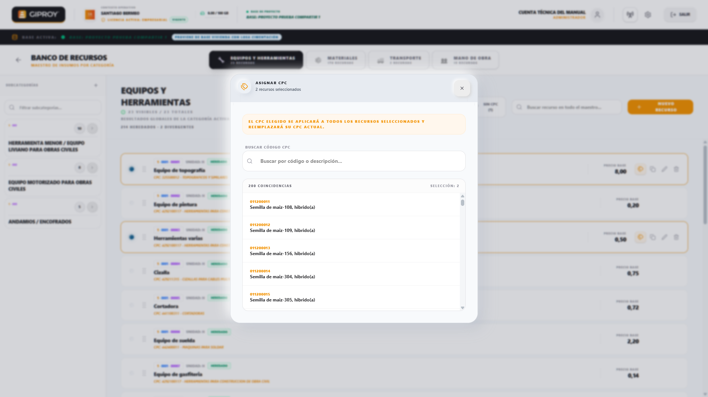
Asignación colectiva sin ejecutarla. La cabecera confirma dos recursos seleccionados. El buscador admite código o descripción y la lista muestra el código CPC junto con su denominación. Elegir una fila no debe hacerse por aproximación: compruebe que la clasificación describe realmente ambos recursos, porque la confirmación posterior sustituirá sus códigos actuales.
7.12. Editar un recurso
El lápiz abre el editor con los datos existentes. Guardar modifica el recurso dentro de la base activa. Antes de cambiar precio o unidad, compruebe los APUs que lo utilizan y decida si necesita editar, duplicar o realizar el cambio solo en el proyecto.
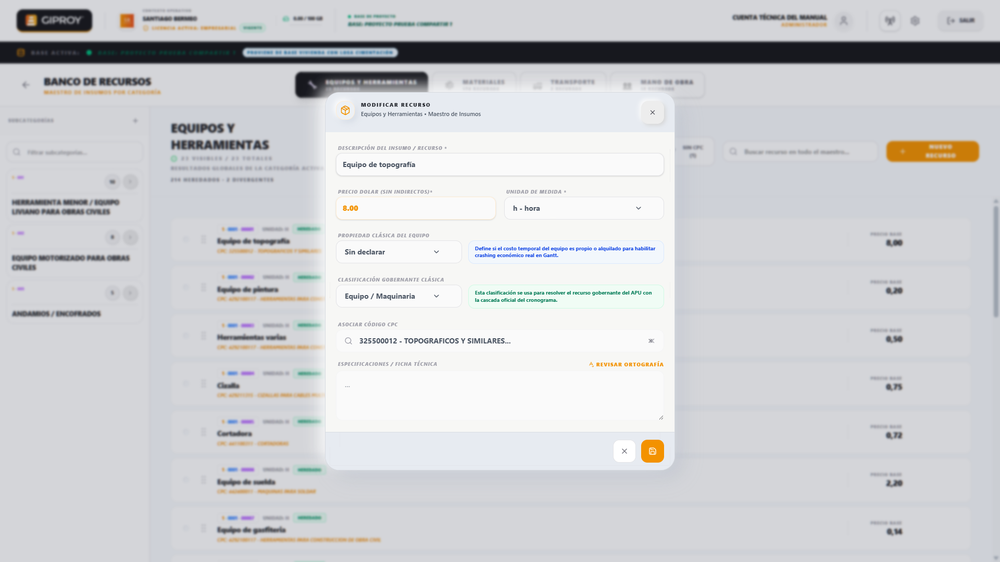
Recurso heredado abierto sin guardar cambios. Equipo de topografía cuesta 8,00 por h, tiene propiedad Sin declarar, clasificación Equipo/Maquinaria y CPC 325500012. Cambiar cualquiera de esos valores puede convertir la versión del proyecto en divergente respecto de su origen. El disquete actualiza; las X cancelan.
7.13. Duplicar un recurso
Duplicar crea un punto de partida para un concepto semejante. Cambie el código, la descripción, presentación, unidad o precio que lo distinguen. No guarde una copia idéntica: después resultará imposible saber cuál debe usarse.
7.14. Cambiar el precio de un recurso
Abra Editar, revise la unidad y escriba el nuevo precio. Documente la fuente. El cambio puede recalcular los APUs que consultan ese recurso dentro del alcance; por eso debe revisar los análisis principales después de guardar.
7.15. Comprender qué análisis pueden verse afectados
Un mismo recurso puede aparecer en muchas actividades. El cemento puede afectar mamposterías, hormigones, enlucidos y contrapisos. No valide el cambio observando un solo APU; busque las dependencias o revise el conjunto relacionado.
7.16. Eliminar o recuperar un recurso
La papelera solicita confirmación y advierte que los códigos pueden reorganizarse. Si el recurso está utilizado, revise el aviso y cancele hasta resolver la dependencia. En el borrado masivo, GiProy intenta tratar toda la selección como una sola operación: si una dependencia impide eliminar uno, no debe interpretar que los demás desaparecieron. La recuperación depende del mecanismo de retención ofrecido por la base.
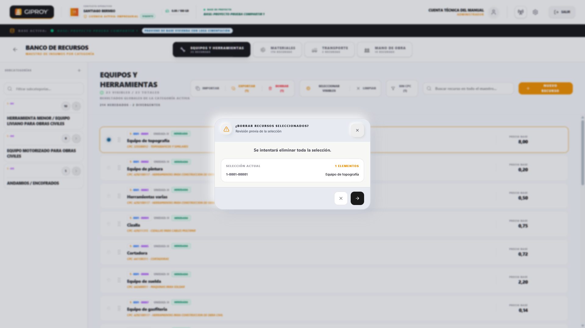
Revise la identidad, no solo la cantidad. La vista previa muestra el código y la descripción del recurso seleccionado. La X o el botón de cancelar conservan el catálogo; la flecha conduce a la advertencia final. No continúe si el recurso aparece en un APU que todavía necesita conservar.
Procedimiento guiado
7.17. Importar recursos desde una hoja de cálculo
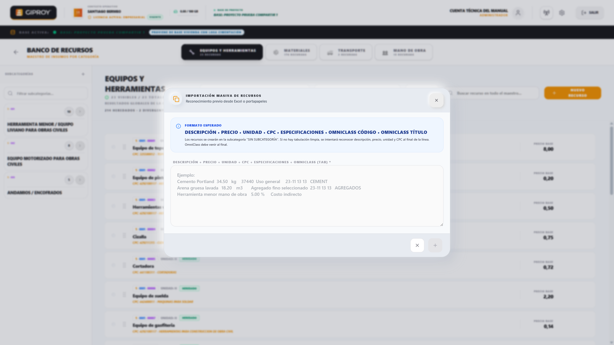
Importación masiva real. El orden esperado es Descripción, Precio, Unidad, CPC, Especificaciones, OmniClass código y OmniClass título. La tabulación limpia activa el reconocimiento por columnas; sin ella, GiProy intenta interpretar desde el final de la línea. Los recursos entran en “Sin subcategoría”, por lo que después deben revisarse y ubicarse. El signo + permanece desactivado mientras no haya filas válidas.
7.18. Preparar correctamente el archivo
Conserve una fila por recurso y columnas consistentes para descripción, precio, unidad y clasificaciones admitidas. Retire encabezados repetidos, subtotales, fórmulas de presentación y celdas combinadas.
Prepare las columnas.Ordene descripción, precio, unidad y las clasificaciones admitidas. Elimine encabezados mezclados, subtotales y celdas combinadas.
Copie las filas.Copie solamente el rango de datos y abra Importar en Recursos.
Pegue en el área de reconocimiento.GiProy interpreta tabulaciones y saltos de línea. No confirme todavía.
Lea la vista previa.Compruebe descripción, número, unidad y clasificación fila por fila. Corrija en el origen cuando varias filas tengan el mismo problema.
Compare las cantidades.El botón de confirmación muestra cuántos registros válidos se crearán. Ese número debe coincidir con su control externo.
Confirme una vez.Espere el resultado. Después filtre por “Revisión pendiente” o por la subcategoría para revisar los elementos incorporados.
7.19. Revisar la vista previa antes de importar
La vista previa es la última oportunidad de comprobar cómo interpretó GiProy cada columna. Compare descripción, número y unidad con el archivo original y confirme que el contador válido coincide con lo preparado.
7.20. Resolver errores, coincidencias y filas incompletas
Las filas inválidas no deben ignorarse silenciosamente. Corrija el separador decimal, cree o relacione la unidad faltante y decida qué hacer con cada duplicado. Si el mismo error aparece muchas veces, corrija la fuente y vuelva a pegar.
7.21. Exportar y revisar información
Marque los recursos requeridos y pulse Exportar seleccionados. Seleccionar visibles respeta los filtros actuales; por eso debe comparar la cantidad mostrada con la que espera entregar. La exportación no cambia datos.
7.22. Recomendaciones para mantener precios actualizados
Defina responsables, fuentes aceptadas y fechas de revisión; actualice por grupos coherentes; conserve bases históricas; y revise APUs después de cambios importantes. Evite sustituir todo un catálogo sin comparar unidades y procedencia.
7.23. Ejemplo: cemento, arena, albañil y herramienta
Cree Cemento Portland tipo I como material en saco, Arena lavada como material en m³, Albañil como mano de obra por hora y Herramienta menor como equipo o auxiliar según la política de la empresa. Después búsquelos desde el editor del APU de mampostería y defina allí el consumo por m². El precio pertenece al recurso; la cantidad pertenece a la composición.
8. Análisis de precios unitarios
Pantalla: APUs
8.1. Qué es un análisis de precio unitario
Un APU explica cuánto cuesta ejecutar una unidad terminada de una actividad. Su valor procede de recursos identificables y de la relación entre cantidad, precio y rendimiento. El análisis puede reutilizarse; la cantidad total de obra se introduce después en el presupuesto.
8.2. Diferencia entre un recurso y un análisis
El recurso es un componente con precio propio, como una hora de albañil. El APU es una actividad, como un metro cuadrado de mampostería, que utiliza varias horas, materiales y equipos. No cree un APU para sustituir un recurso simple ni un recurso para ocultar una composición.
8.3. Comprender el catálogo de análisis
La pantalla presenta las categorías y subcategorías a la izquierda y los análisis del alcance elegido en la zona principal. Cada tarjeta muestra identidad, unidad, estado de revisión, coste directo, indirectos y total. Los iconos permiten duplicar, editar o borrar el análisis concreto.
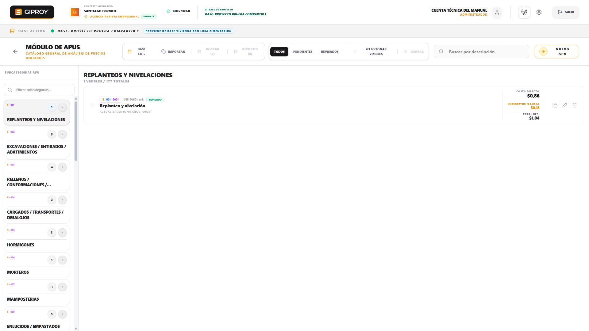
Catálogo real de 177 APUs. Está seleccionada Replanteos y nivelaciones, que contiene un análisis visible. La tarjeta muestra código 5-001-0001, unidad m², estado Revisado, coste directo 0,86, indirectos 0,18 al 21 % y total 1,04. Base Ext. importa desde otra base; Importar pega registros; Borrar y Reportes necesitan selección.
8.4. Buscar, filtrar y ordenar análisis
Use el buscador por descripción, elija la subcategoría y aplique los filtros de estado u origen disponibles. Seleccionar visibles marca solo el resultado actual. Limpiar selección conserva los análisis y retira las marcas.
8.5. Crear un análisis nuevo
Pulse Nuevo APU. El catálogo se convierte en editor y la barra superior ofrece Cerrar y Guardar. No guarde todavía: primero complete identidad, unidad y composición. Si cierra antes de guardar, los cambios no confirmados se pierden.
8.6. Definir código, descripción, unidad y rendimiento
El código se relaciona con la subcategoría y la numeración de la base. La descripción debe definir la actividad terminada; la unidad expresa cómo se medirá en el presupuesto. Rendimiento global es opcional y puede hacer que nuevas líneas de equipos y mano de obra hereden una misma base inicial.
8.7. Abrir el editor del análisis
Pulse la tarjeta o el lápiz del APU. La cabecera confirma que está editando y muestra su nombre. Si llegó desde un proyecto, el botón Volver al módulo Proyecto regresa al contexto anterior; Cerrar vuelve al catálogo; Guardar cambios confirma.
8.8. Comprender las zonas del editor
El catálogo lateral contiene recursos y otros APUs para arrastrar. La cabecera central contiene descripción, unidad, clasificación y estado. La composición se divide por Equipos y herramientas, Mano de obra, Materiales y otros grupos. El pie permanece visible con coste directo, indirectos y total.
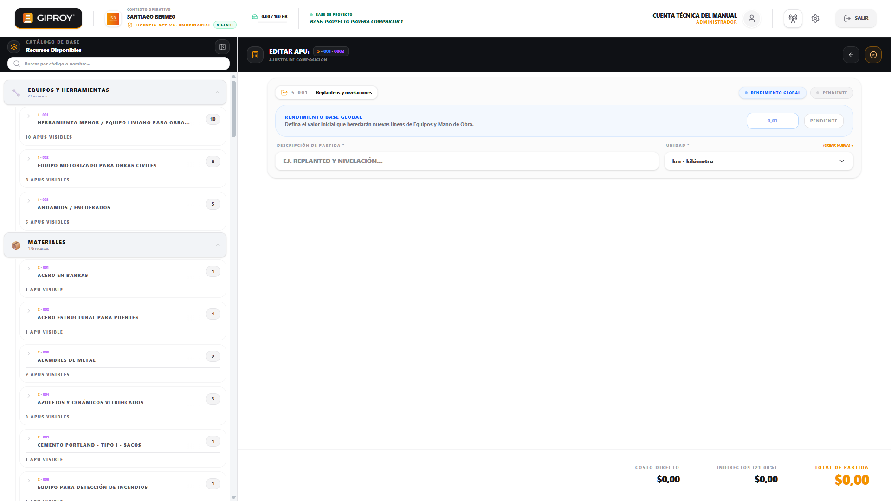
Editor antes de agregar componentes. A la izquierda está el catálogo arrastrable. Arriba aparecen código, volver y guardar. Rendimiento global está activo con base 0,01 y el estado sigue Pendiente. La unidad km es únicamente el valor inicial mostrado: debe elegirse la unidad correcta antes de guardar. Los tres totales están en cero porque todavía no hay líneas.
8.9. Agregar materiales
Busque el material en el catálogo, compruebe su unidad y arrástrelo o utilice el control de añadir. La línea aparece en Materiales. Escriba la cantidad necesaria para una unidad terminada e incluya el desperdicio dentro del consumo cuando la metodología de la empresa no lo separe.
8.10. Agregar mano de obra
Localice la especialidad y agréguela a Mano de obra. La cantidad y el rendimiento deben expresar el tiempo de cuadrilla necesario por unidad. Si usa Rendimiento global, confirme que el valor heredado corresponde realmente a esa especialidad.
8.11. Agregar equipos y herramientas
Agregue maquinaria y herramientas en su grupo. Diferencie una hora de equipo, una jornada y un porcentaje de herramienta menor. El precio del recurso debe usar la misma unidad que interpreta la composición.
8.12. Agregar transportes y otros costes
Utilice la categoría disponible que represente el transporte o coste auxiliar y documente su unidad. No añada un importe sin explicar la base de cálculo. Si el transporte ya está incluido en el precio puesto en obra del material, no lo duplique.
8.13. Incorporar otro análisis dentro de un análisis
El catálogo puede mostrar APUs elegibles. Al agregarlos se crea una composición anidada. Es útil para elementos reutilizables, como un mortero dentro de una mampostería. GiProy bloquea relaciones circulares o no válidas; no intente reconstruirlas mediante duplicados.
8.14. Introducir cantidades y rendimientos
Cantidad expresa el consumo; rendimiento relaciona producción y tiempo cuando aplica. Los campos aceptan decimales y se normalizan al salir. Revise si un rendimiento mayor debe reducir o aumentar el coste según el tipo de línea y la fórmula mostrada.
8.15. Comprender cantidad, precio y coste parcial
Precio (u) procede del recurso. Cantidad y rendimiento pertenecen a la línea del APU. Parcial es el coste que esa línea aporta a una unidad de actividad. El porcentaje relativo muestra cuánto representa frente al coste directo y ayuda a localizar los componentes dominantes.
8.16. Aplicar desperdicios
Cuando no exista un campo separado, aumente justificadamente la cantidad del material. Por ejemplo, un consumo teórico de 10 unidades con 5 % de desperdicio se registra como 10,5. Documente el criterio para que otra persona no vuelva a aplicarlo en el presupuesto.
8.17. Calcular herramienta menor
Si la política utiliza un porcentaje de mano de obra, cree o seleccione el recurso auxiliar previsto y aplique el criterio de cálculo admitido por la empresa. No escriba un porcentaje en un campo que espera horas o unidades. Compruebe el parcial frente al subtotal de mano de obra.
8.18. Aplicar costes auxiliares e indirectos
Los auxiliares forman parte de la composición cuando son necesarios para ejecutar la unidad. Los indirectos se calculan en el pie según el porcentaje de la base. No incluya el mismo concepto como línea directa y nuevamente como porcentaje.
8.19. Comprender el coste directo
Es la suma de los parciales de los grupos de composición. Las cabeceras muestran subtotal y porcentaje relativo por categoría. Si no coincide con su cálculo externo, despliegue los grupos y compare línea por línea.
8.20. Comprender el precio unitario final
El pie suma coste directo e indirectos y presenta Total de partida. Ese es el precio que utilizará el presupuesto por cada unidad. Compruebe el porcentaje aplicado y la precisión decimal antes de aprobarlo.
8.21. Cambiar el orden de los componentes
Utilice el asa de Orden para arrastrar la línea dentro del grupo o hacia una categoría compatible. El orden mejora la lectura y los informes; no cambia el parcial mientras cantidad, precio y rendimiento permanezcan iguales.
8.22. Sustituir un recurso
Agregue primero el recurso correcto, copie o recalcule la cantidad y compare el total. Después retire la línea anterior. No cambie solo la descripción del recurso existente, porque podría alterar otros APUs que también lo utilizan.
8.23. Eliminar un componente
Use la papelera de la línea y confirme el nuevo subtotal. Eliminar de la composición no elimina el recurso del Banco de recursos. Si se equivoca antes de guardar, cierre y descarte o vuelva a agregarlo.
8.24. Guardar el análisis
Compruebe descripción, unidad y al menos una composición válida. Pulse el botón con marca de confirmación una sola vez y espere que termine “Guardando”. El estado Pendiente o Revisado también se conserva.
8.25. Duplicar un análisis
El icono Copiar crea una base para una actividad semejante. Cambie descripción, unidad si corresponde y todas las líneas que difieran. La copia debe poder distinguirse del original antes de utilizarse.
8.26. Editar un análisis existente
El lápiz abre su composición actual. Cambiar recursos, cantidades o rendimiento modifica el precio dentro de la base activa. Antes de guardar un APU usado por un proyecto, compruebe si la modificación debe permanecer local.
8.27. Consultar su procedencia e historial
Las etiquetas de origen distinguen nativo, heredado, local o divergente. El estado Pendiente indica revisión económica pendiente; Revisado afirma que una persona lo comprobó. La procedencia ayuda a interpretar cambios, pero no garantiza que el precio siga vigente.
8.28. Importar análisis en bloque
Importar en bloque abre una ventana para pegar descripción y unidad. La vista previa separa registros válidos, duplicados y errores. Esta operación crea identidades base; después debe abrir cada APU y construir o revisar su composición.
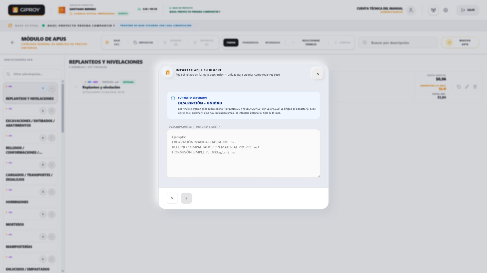
Importación en la subcategoría seleccionada. La ventana indica que los registros se crearán en Replanteos y nivelaciones con valor 0,00. La unidad es obligatoria y debe existir. La tabulación separa descripción y unidad; sin ella, GiProy intenta reconocer la unidad al final. El signo + se habilita cuando la vista previa contiene filas válidas.
8.29. Resolver códigos repetidos y conflictos de importación
Al importar desde otra base, GiProy realiza primero una comparación sin guardar. Si encuentra la misma identidad en el destino, abre Conflictos de importación. Cada tarjeta enfrenta la versión actual de la obra con la nueva versión de la base de origen. Seleccionar la izquierda conserva la adaptación local; seleccionar la derecha propone sustituirla por la procedencia externa. El botón Autodecisión aplica la regla del sistema a todos los conflictos visibles, por lo que solo debe usarse después de entender esa regla. La marca naranja confirma las decisiones; la flecha vuelve al paso anterior y la X cierra sin finalizar la importación.
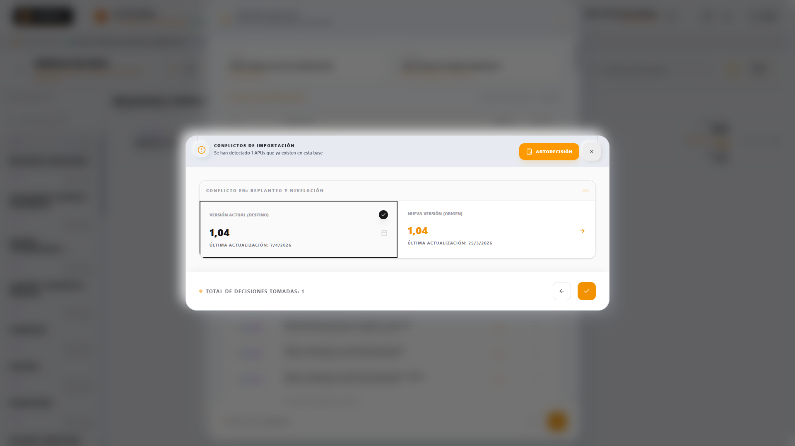
Comparación real de Replanteo y nivelación. Ambas versiones muestran 1,04, pero sus fechas son distintas: destino 7/4/2026 y origen 25/3/2026. Que el total coincida no demuestra que la composición sea igual. La marca negra indica que, en esta vista previa, se conserva la versión actual; antes de aceptar el origen deben compararse recursos, rendimientos y procedencia.
8.30. Exportar o imprimir un análisis
Marque uno o varios APUs y pulse Generar reporte. La vista previa permite revisar el documento antes de exportar a Excel o PDF. La selección visible depende de los filtros; compare la cantidad de análisis incluidos.
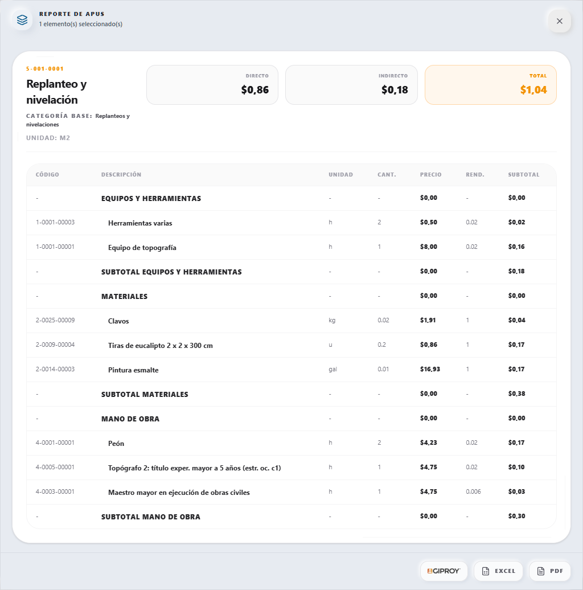
Vista previa antes de exportar. La cabecera confirma un elemento seleccionado y resume directo 0,86, indirecto 0,18 y total 1,04. La tabla muestra código, descripción, unidad, cantidad, precio, rendimiento y subtotal por grupo. Excel y PDF generan el formato elegido; la X cierra sin generar.
8.31. Eliminar y recuperar análisis
La papelera solicita confirmación. El borrado masivo utiliza los APUs marcados y muestra el total. GiProy advierte que, si uno de ellos forma parte de otro APU superior, no se borrará ninguno: esta protección evita dejar una composición incompleta. Antes de aceptar, revise también si están incluidos en presupuestos o bases derivadas. La recuperación depende de la retención disponible.
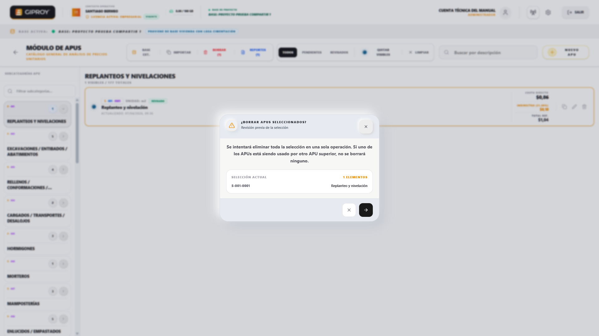
Primera de dos confirmaciones. La selección contiene el APU 5-001-0001, Replanteo y nivelación. La flecha avanza a la confirmación irreversible; la X o cancelar vuelve sin cambios. En la elaboración del manual no se avanzó ni se eliminó ningún dato de la empresa.
8.32. Cómo afectan los cambios a presupuestos existentes
Un presupuesto puede conservar una copia o una relación gobernada por su revisión. No suponga que editar el catálogo revaloriza automáticamente una obra aprobada. Abra la partida y compruebe su procedencia, precio vigente e historial antes de sincronizar.
8.33. Recomendaciones para revisar un análisis
Lea de abajo hacia arriba: total, indirectos, coste directo, subtotales, parciales, cantidades, unidades y descripción. Compare los recursos dominantes con una fuente externa y documente rendimientos especiales.
8.34. Errores habituales de rendimiento, unidad y precio
Los fallos más comunes son introducir la cantidad total de obra, invertir un rendimiento, mezclar hora con jornada, usar precio por tonelada como precio por kilogramo, duplicar desperdicio o indirectos y marcar Revisado sin haber comprobado la composición.
Procedimiento guiado
8.35. Ejemplo completo: un metro cuadrado de mampostería
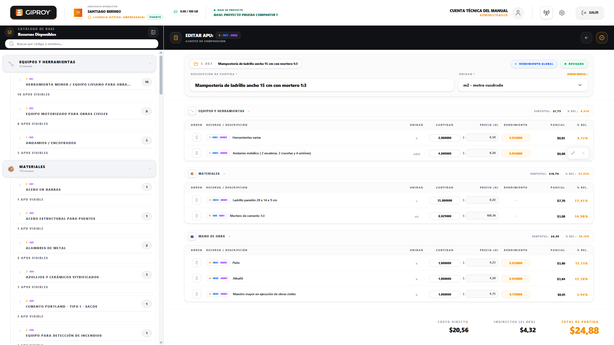
Composición real que produce 24,88 por m². Equipos suma 1,73: Herramientas varias aporta 0,85 y Andamio metálico 0,88. Materiales suma 10,78: 35 ladrillos a 0,22 aportan 7,70 y 0,029 m³ del APU anidado Mortero de cemento 1:3, a 106,16, aporta 3,08. Mano de obra suma 8,05: Peón 3,60, Albañil 3,64 y Maestro mayor 0,81. El coste directo es 20,56; los indirectos del 21 % son 4,32; el total es 24,88. Los porcentajes relativos permiten comprobar qué línea domina el precio.
Abra la base del proyecto.Confirme “BASE: PROYECTO PRUEBA COMPARTIR 1” y entre en APUs.
Cree o abra Mampostería.Utilice m² como unidad y mantenga el estado Pendiente durante la preparación.
Agregue materiales.Incluya bloque, cemento, arena y agua con el consumo necesario para un m², considerando el desperdicio una sola vez.
Agregue la cuadrilla.Incluya albañil y ayudante con horas o rendimiento coherentes.
Agregue herramienta y equipo.Compruebe que no están incluidos ya en otra línea.
Revise los parciales.Compare subtotales y porcentajes relativos para localizar valores dominantes.
Compruebe indirectos y total.El objetivo del ejemplo real es un precio unitario de 24,88 por m².
Marque Revisado y guarde.Hágalo solo cuando pueda explicar cada línea y su fuente.
Resultado esperado: el catálogo muestra un APU de mampostería en m², con composición trazable y precio 24,88. Al utilizar 257,87 m² en el presupuesto, la partida resulta en 6.415,81 sin introducir esa cantidad dentro del análisis.
9. Utilización de precios en un proyecto
9.1. Cómo llega una base de precios a un proyecto
Al crear un proyecto, GiProy genera su contexto económico y puede relacionarlo con una base maestra. Desde ese momento, los análisis utilizados por la obra pertenecen a la base del proyecto y quedan separados de otros proyectos.
9.2. Seleccionar la base adecuada
Elija una base compatible con el país, mercado, período y tipo de construcción. El hecho de que contenga muchos análisis no la hace adecuada. Revise primero recursos principales, unidades e indirectos.
9.3. Crear la base propia del proyecto
La base de proyecto se identifica en azul y lleva el nombre de la obra. No cree manualmente una base maestra con el mismo nombre para imitarla: utilice el flujo del proyecto, que conserva el vínculo, la revisión y la procedencia.
9.4. Copiar análisis sin perder su procedencia
En APUs, Importar desde Base abre un proceso en dos pasos. Primero se selecciona la base de origen; después se marcan los análisis elegibles. La ventana informa cuántos se importarán. Cancelar abandona el proceso; Importar selección inicia la copia.
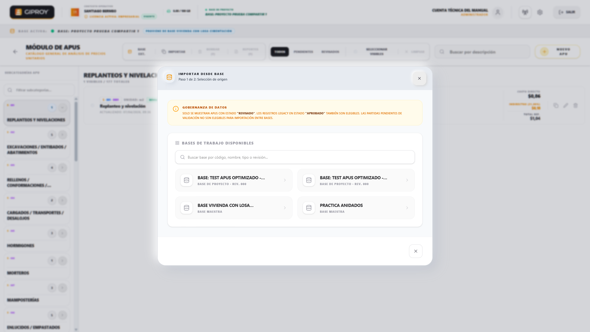
Primer paso de importación entre bases. Solo se ofrecen APUs Revisados y registros antiguos Aprobados; los Pendientes no son elegibles. El buscador localiza por código, nombre, tipo o revisión. Las cuatro tarjetas son posibles orígenes y la base activa no se incluye como origen de sí misma. Elegir una tarjeta conduce al paso 2; la X cancela.
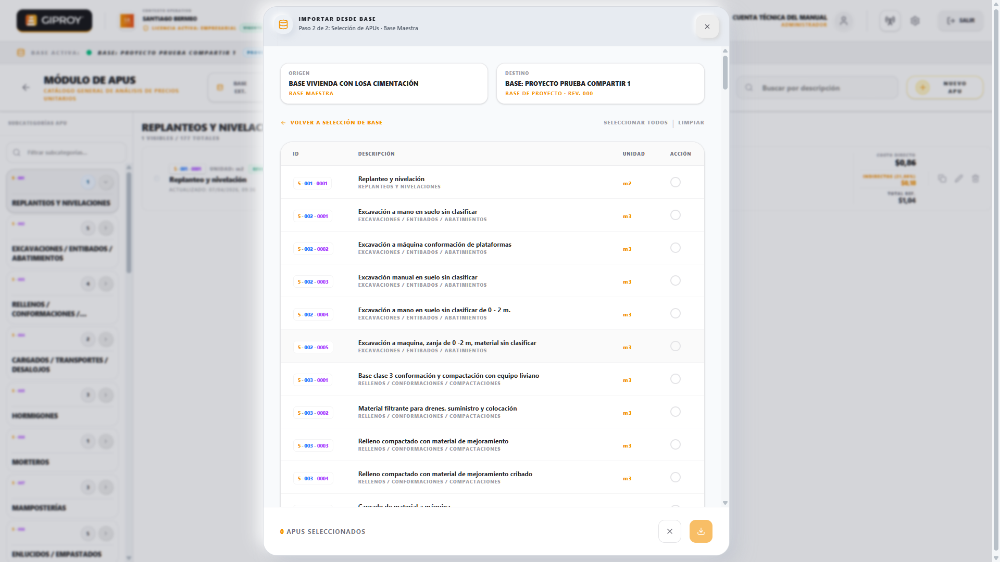
Segundo paso, todavía sin importar. Arriba se comparan origen Base Vivienda con Losa Cimentación y destino Base Proyecto Prueba Compartir 1, revisión 000. Cada fila muestra código, descripción, subcategoría, unidad y círculo de selección. Seleccionar todos marca los elegibles; Limpiar retira las marcas; Volver permite cambiar de origen. El botón naranja se habilita cuando hay APUs seleccionados.
9.5. Diferencia entre actualizar y sobrescribir
Actualizar faltantes incorpora lo que todavía no existe. Sobrescribir sustituye un registro coincidente por la versión del origen. En la ventana Conflictos de importación, Omitir conserva el análisis local y Nueva versión del origen acepta el importado. No aplique una decisión masiva sin revisar los cambios locales.
9.6. Adaptar un precio a las condiciones de la obra
Abra el APU dentro de la base de proyecto y ajuste únicamente las líneas justificadas: precio local, rendimiento, equipo disponible o condición constructiva. Añada una observación cuando la diferencia no sea evidente.
9.7. Mantener cambios exclusivos del proyecto
Un recurso o análisis divergente indica que la versión local ya no coincide con el origen. Esa diferencia puede ser correcta. Consérvela cuando responde a una condición de la obra y evite sincronizaciones que la sustituyan sin revisión.
9.8. Revisar precios antes de preparar el presupuesto
Compruebe unidad, composición, rendimientos, subtotales, coste directo e indirectos. Después incorpore el análisis a una partida y escriba la cantidad total. La revisión debe terminar antes de aprobar el presupuesto o generar el cronograma.
9.9. Ejemplo con #SantiagoBermeo-2026-001
La obra utiliza la base azul BASE: PROYECTO PRUEBA COMPARTIR 1, procedente de Base Vivienda con Losa Cimentación. En su presupuesto, la partida 1.5.1 Mampostería tiene 257,87 m² y un precio unitario de 24,88. El resultado es 6.415,81. Para revisar ese valor, se abre primero el APU de mampostería en la base del proyecto; para cambiar la extensión de los muros, se modifica la cantidad de la partida. Son dos decisiones distintas y deben conservarse separadas.
Control de la obra
10. Portafolio de proyectos
El proyecto reúne la información propia de una obra. Las revisiones permiten conservar decisiones anteriores y desarrollar cambios sin perder la identidad de cada versión.
10.1. Comprender la pantalla de proyectos
Se llega desde la página inicial de la empresa mediante Proyectos. La cabecera confirma la empresa activa y, antes de entrar en una obra, no debe mostrar una base de proyecto distinta como contexto de trabajo. La franja superior del portafolio contiene cuatro accesos de administración: volver, gestión de personal, papelera y alta de proyecto. Debajo aparecen la búsqueda, los filtros, los indicadores de la cartera, el calendario y el cambio entre Lista y Kanban.
En Lista, cada fila representa una obra y no una revisión independiente. La primera columna muestra el código; Proyecto reúne nombre y descripción; Actualización informa cuándo cambió; Cliente identifica al destinatario; Estado explica la etapa; Presupuesto compara el valor calculado con el de referencia; Plazo reúne duración y ubicación; Fecha fin muestra la fecha objetivo; y Acciones contiene clonar, publicar o retirar según permisos. Una flecha junto al código abre el historial de revisiones de esa misma obra.
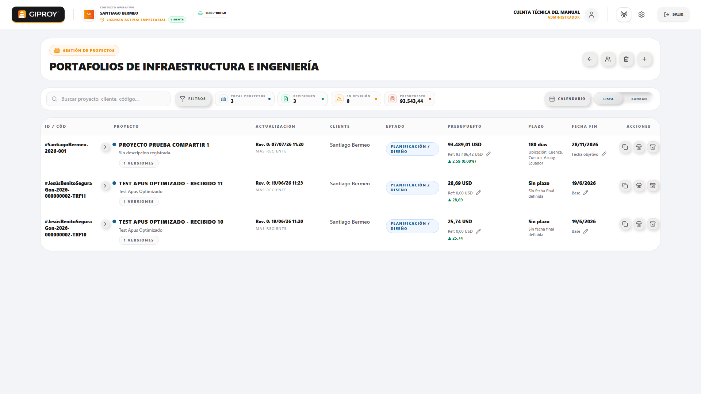
Portafolio real de Santiago Bermeo. La obra Proyecto Prueba Compartir 1 aparece con el código SantiagoBermeo-2026-001, revisión 0, estado Planificación / Diseño, presupuesto calculado de 93.489,01 USD y referencia de 93.486,42 USD. El total superior de la cartera no pertenece a una sola fila: resume los proyectos visibles.
10.2. Buscar, ordenar y filtrar proyectos
El campo de búsqueda admite nombre, cliente o código. Escriba una parte inequívoca y espere a que cambien tanto las filas como los indicadores superiores. Filtros abre las condiciones disponibles; quitar un filtro recupera datos, no modifica proyectos. Lista permite comparar columnas y Kanban distribuye las obras por etapa. Cambiar de vista conserva la información; arrastrar o usar una acción de estado sí puede representar una decisión operativa y debe confirmarse por su significado.
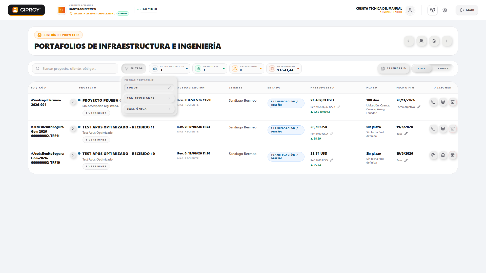
El filtro no cambia los proyectos. Todos recupera la cartera completa; Con revisiones ayuda a localizar obras que ya tienen varias versiones; Base única deja las que todavía conservan una sola versión. La marca indica la condición aplicada. Si el resultado queda vacío, vuelva a Todos antes de buscar otra causa.
En Kanban, cada columna representa una etapa del trabajo y el número de su cabecera indica cuántas obras contiene. La tarjeta conserva código, nombre, versión, cliente, presupuesto, plazo, fecha final y ubicación. Las flechas inferiores trasladan la obra a la etapa contigua; no son controles para desplazarse por el tablero. El ojo abre la obra sin cambiarla.
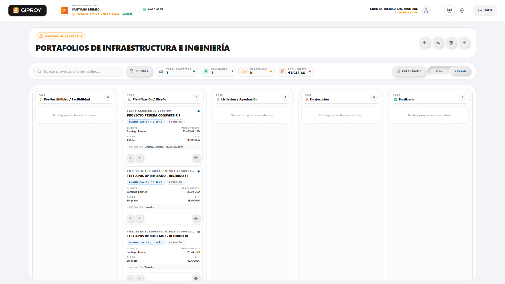
La misma cartera organizada por etapa. Las tres obras visibles están en Planificación / Diseño; las demás columnas muestran cero y explican que no hay proyectos en esa fase. Antes de usar una flecha de una tarjeta, confirme que el cambio de etapa representa la situación real de la obra.
El calendario del portafolio combina fechas finales, anotaciones, comunicados y otros hitos. Los botones anterior, siguiente y hoy cambian el periodo observado. Seleccionar un día y añadir una nota no altera el cronograma contractual. Cuando no encuentre una obra, limpie búsqueda y filtros antes de suponer que fue eliminada.
10.3. Crear un proyecto
Pulse el botón con el signo más. Si la licencia alcanzó el cupo, el acceso indica Límite alcanzado y no abre el formulario; esto protege a la empresa de una creación que no podría guardar. En una empresa con capacidad disponible aparece Nuevo proyecto. El código se genera automáticamente. Escriba un nombre reconocible, elija la base maestra de precios que será clonada, introduzca el presupuesto referencial, seleccione moneda y explique el alcance inicial. Cancelar o la X descartan el borrador; Crear proyecto materializa la obra y su base privada.
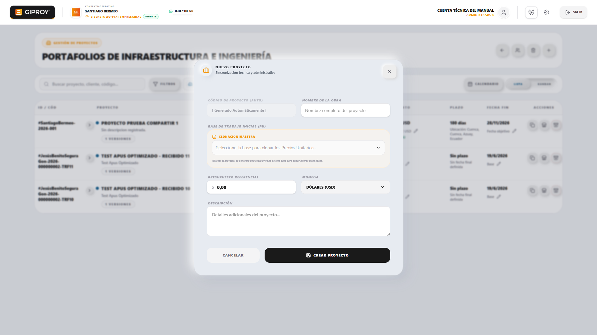
Formulario completo sin guardar. Clonación maestra crea una copia privada de la base escogida para evitar que la obra altere otros proyectos. El presupuesto referencial es una referencia comercial inicial; el calculado aparecerá después de valorar partidas. Durante la documentación no se pulsó Crear proyecto.
10.4. Completar sus datos generales
Tras crear, abra Datos del proyecto y complete la información que no pertenece al formulario breve: cliente, tipo de intervención, dirección, ciudad, provincia, áreas, complejidad, plazo, fechas, descripción técnica, imagen y coordenadas. Los datos deben describir la misma obra que el código y el nombre. Un presupuesto en dólares con moneda del proyecto distinta, una fecha final anterior al inicio o una superficie sin unidad son incoherencias que deben corregirse antes de emitir reportes.
La base inicial no es una etiqueta decorativa. Al crear el proyecto, GiProy genera una base de proyecto vinculada a la maestra. Los recursos y APUs podrán adaptarse sin cambiar el origen; las sincronizaciones posteriores mostrarán qué llega de la maestra y qué se conserva localmente.
10.5. Abrir el espacio de trabajo
Pulse la fila o tarjeta de la obra. Si existe una sola revisión vigente, se abre su espacio; si existen varias, elija conscientemente el número que desea consultar. La cabecera interna debe confirmar nombre, código y revisión antes de editar. El selector lateral permite pasar por Datos del proyecto, Stakeholders, EDO/OBS, EDT/WBS, Presupuesto, Cronogramas, Desagregación, Fórmula Polinómica y BIM cuando la empresa tiene acceso.
Salir con la flecha regresa al portafolio. Cambiar de pestaña no guarda automáticamente formularios que todavía muestran botones Guardar o Cancelar. Antes de abandonar una sección, espere la confirmación y compruebe que desapareció cualquier indicador de procesamiento.
10.6. Editar, clonar, archivar y recuperar proyectos
Editar datos cambia la ficha de la revisión activa según el alcance del campo. Clonar proyecto completo crea una nueva revisión o copia gobernada por la acción mostrada; lea la ventana antes de aceptar, porque no equivale a duplicar una partida. Mover a papelera retira el proyecto del portafolio activo después de dos comprobaciones. La papelera conserva el contenido durante siete días: Restaurar devuelve la obra y Purgar elimina definitivamente aquello que la aplicación permita borrar.
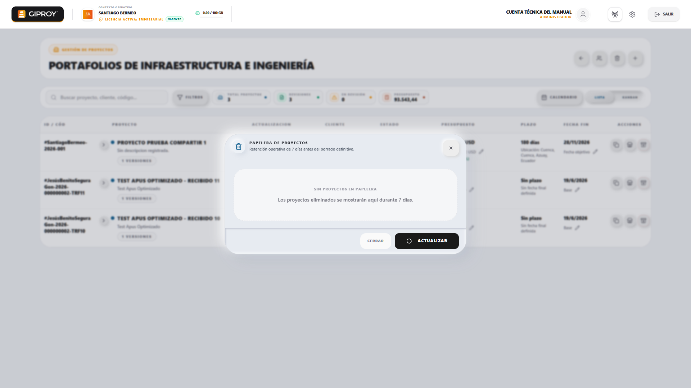
Papelera cargada, no una pantalla de espera. En este momento no hay proyectos eliminados. Actualizar vuelve a consultar; Cerrar o la X regresan sin cambios. Cuando existan registros, verifique nombre, código y fecha límite antes de restaurar o purgar.
10.7. Estados del proyecto y significado práctico
Prefactibilidad indica que todavía se estudia la conveniencia; Planificación / Diseño prepara alcance, presupuesto, cronograma y coordinación; Licitación representa una propuesta en contratación; Ejecución significa que la obra se controla contra un plan aprobado; y Finalizado se reserva para un cierre comprobado. Un estado no debe utilizarse para ordenar visualmente la tarjeta: comunica una realidad de negocio y puede habilitar o restringir acciones.
Antes de avanzar de etapa, revise los entregables que esa transición supone. Por ejemplo, pasar a Ejecución sin una línea base aprobada o declarar Finalizado con incidencias abiertas hace que indicadores y reportes resulten engañosos.
11. Revisiones del proyecto
11.1. Qué es una revisión
Una revisión es una versión reconocible de la misma obra. Conserva el código raíz, pero separa una decisión de diseño, presupuesto o planificación de la anterior. No es una copia informal: permite saber con qué alcance se calculó un valor y qué modelo, EDT o cronograma correspondía a esa decisión.
11.2. Cuándo crear una revisión nueva
Créela cuando cambia una propuesta que debe poder compararse: sistema estructural, alcance aprobado, oferta presentada, cantidades relevantes o programa contractual. Para corregir una tilde o completar un teléfono no conviene multiplicar revisiones. Antes de crearla, escriba el motivo y acuerde qué información se toma como punto de partida.
11.3. Crear, activar, comparar y eliminar revisiones
La flecha de la fila abre Revisiones disponibles. Crear o clonar genera la versión siguiente; Activar establece cuál se utilizará al entrar; Comparar enfrenta datos equivalentes entre dos versiones; Eliminar revisión pide confirmación independiente del proyecto completo. Una revisión que sustenta un reporte, transferencia o aprobación debería conservarse aunque ya no sea la activa.
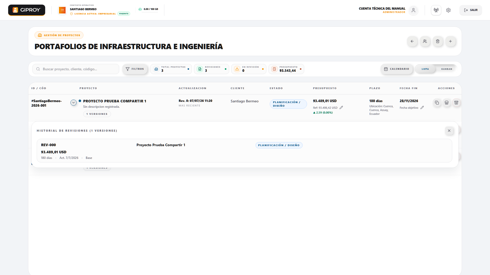
Historial desplegado dentro de la misma fila. REV-000 es la versión base de Proyecto Prueba Compartir 1. El panel permite comprobar nombre, estado, presupuesto, plazo y fecha de actualización antes de abrir una versión. La X cierra únicamente el historial; no elimina la revisión.
11.4. Información que pertenece a cada revisión
Presupuesto, EDT, cronogramas, desagregación, fórmula y vínculos BIM pueden estar gobernados por revisión. Los datos comunes de identidad pueden compartirse según el diseño de la aplicación, pero no debe asumir que cambiar una cifra en R1 actualiza R0. Los reportes deben mostrar proyecto y revisión para que el destinatario conozca el contexto.
11.5. Evitar trabajar en la revisión equivocada
Lea siempre tres referencias antes de editar: empresa, proyecto y revisión. Después compruebe que la base activa pertenece a esa obra. Si llega mediante un enlace, un reporte o una pestaña antigua, no dé por supuesto que conserva el contexto anterior. Cuando una cifra no coincide, primero compare revisión y fecha antes de modificarla.
Cree el proyecto con información que ayude a reconocerlo
Registre un nombre, código, descripción, ubicación, fechas y estado que tengan sentido para toda la empresa. Evite nombres como “Proyecto nuevo” o “Prueba”, porque después será difícil distinguirlos en reportes, transferencias y revisiones.
La vista de lista facilita comparar información; el tablero ayuda a comprender el estado de la cartera. Los filtros separan proyectos activos, completados, con revisiones o con una única base.
Use revisiones cuando cambie la propuesta, no para corregir un texto menor
Una revisión representa una versión identificable del proyecto, especialmente cuando cambian estructura, presupuesto o planificación. Crear una revisión permite comparar y conservar la versión anterior. Un ajuste menor de descripción puede editarse en la misma revisión si las reglas de su empresa lo permiten.
Asigne el equipo de acuerdo con el trabajo real
El equipo puede organizarse por módulos y por partes de la EDT. Esto permite, por ejemplo, que una persona trabaje en el presupuesto de instalaciones sin modificar la estructura completa del proyecto. Revise periódicamente la cobertura: una responsabilidad sin persona asignada suele convertirse en una tarea retrasada.
Pantalla: Portafolio de proyectos
Qué hace cada zona del portafolio
El buscador localiza proyectos por su información visible. Los filtros separan proyectos activos, completados o todos; otros controles permiten observar proyectos con revisiones o con una única base. La vista Lista favorece la comparación; la vista Kanban agrupa por estado: prefactibilidad, planificación, licitación, ejecución o finalización.
Las fechas y el presupuesto estimado pueden editarse desde la tarjeta cuando aparece el control correspondiente. Guarde la edición con su botón de confirmación; salir sin guardar conserva el valor anterior. El menú del proyecto concentra acciones sensibles como abrir revisiones o mover a papelera.
Qué debe observar: “Proyecto Prueba Compartir 1” aparece con el código SantiagoBermeo-2026-001, revisión 0, estado Planificación / Diseño, presupuesto calculado de 93.489,01 USD y referencia de 93.486,42 USD. El indicador superior de 93.543,44 no pertenece solo a este proyecto: suma los presupuestos calculados de las tres filas visibles. Los iconos finales permiten clonar, publicar o retirar según los permisos y el estado.
Nuevo proyecto
Abre el formulario de alta. Si el plan alcanzó su límite o la empresa está en solo lectura, el botón explica la restricción y no inicia una creación incompleta.
Gestión de personal
Abre el supervisor de equipos, desde donde se asignan personas a proyecto, base, módulos y ramas de EDT sin cambiar los permisos generales de toda la plataforma.
Papelera
Conserva proyectos retirados durante siete días. Restaurar devuelve el proyecto; purgar lo elimina de manera definitiva. Actualizar vuelve a consultar el contenido de la papelera.
Procedimiento guiado
Crear un proyecto nuevo y abrir su espacio de trabajo
Compruebe empresa y licencia.Lea la empresa activa. Si aparece solo lectura o límite alcanzado, resuelva esa condición antes de preparar datos.
Seleccione Nuevo proyecto.Complete nombre, código, descripción y presupuesto estimado. El nombre identifica la obra; el código ayuda a relacionarla con documentos y reportes.
Defina la base de origen si se solicita.Seleccione una base solo cuando sus APUs y recursos correspondan al contexto del proyecto.
Guarde y espere la confirmación.No cierre la ventana mientras se procesa el alta.
Localice la tarjeta.Use el buscador si no aparece en la vista actual. Revise estado, fechas y valor estimado.
Abra el proyecto.Si existen varias revisiones, el selector pide elegir una. Lea el número y fecha antes de continuar.
Resultado esperado: aparece el espacio del proyecto con su cabecera y las secciones Datos del proyecto, Stakeholders, EDO/OBS, EDT/WBS, Presupuesto, Cronogramas, Desagregación, Fórmula Polinómica y, si corresponde, BIM.
Ventana: Revisiones
Abrir, crear, activar y eliminar revisiones
Al abrir un proyecto con varias revisiones, GiProy muestra cada versión con su número y última modificación. Seleccionar una revisión establece el contexto para las secciones internas. Crear revisión genera una nueva versión controlada; describa el motivo y compruebe qué información se conserva como punto de partida.
Activar revisión abre una revisión para trabajar en un destino concreto, por ejemplo el editor de APUs. Eliminar revisión es una acción independiente de eliminar el proyecto completo y debe utilizarse solo cuando la versión no deba conservarse. La doble confirmación protege contenido relacionado.
Herramientas del portafolio
Calendario, anotaciones, comunicados y recordatorios
El calendario permite avanzar o retroceder por meses y volver a la fecha actual. Al seleccionar un día puede agregar una anotación de proyecto, una nota privada o un comunicado, según sus permisos. El título corto facilita reconocerla y el detalle conserva el contexto.
Los recordatorios personales se crean desde su compositor y pueden filtrarse entre activos, completados o todos. Marcar un recordatorio como completado cambia su estado; editar modifica su contenido; borrar lo retira. Estas tareas personales no sustituyen actividades del cronograma.
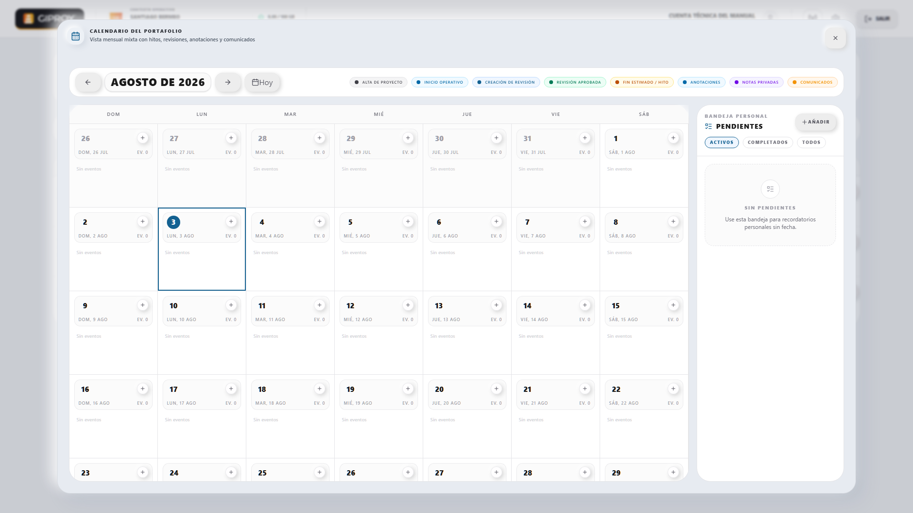
Calendario de agosto de 2026. La leyenda distingue alta de proyecto, inicio operativo, creación y aprobación de revisión, fin estimado, anotaciones, notas privadas y comunicados. El signo más de cada día añade un elemento asociado a esa fecha; Añadir, en la bandeja derecha, crea un recordatorio personal. Son dos destinos distintos.
Estructuras del proyecto
12. Información y organización del proyecto
Antes de presupuestar o planificar, complete la identidad de la obra, reúna sus documentos, ubíquela, incorpore al equipo y ordene el alcance. Esta preparación evita que una cifra correcta termine asociada al proyecto, la revisión o la persona equivocada.
12.1 Datos generales
Abra el proyecto desde el portafolio y entre en Datos del proyecto. En esta pantalla se conserva la información que permite reconocer la obra en el resto de GiProy: nombre, código, descripción, estado, fechas, moneda y valores de referencia. Lea siempre la cabecera antes de editar; allí se identifica también la revisión en la que está trabajando.
Seleccione Editar para habilitar los campos, cambie únicamente los datos que hayan sido confirmados y termine con Guardar. Cancelar abandona la edición y mantiene la última versión guardada. Si un campo obligatorio está vacío o una fecha final es anterior a la inicial, la pantalla debe impedir el guardado y señalar qué dato necesita atención. Después de guardar, compruebe que la cabecera y el portafolio muestran la información actualizada.
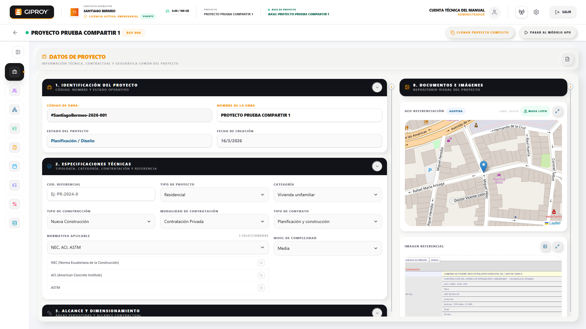
Cómo leer la ficha: la columna principal reúne identificación y especificaciones; la columna derecha conserva georreferencia, documentos e imagen. La cabecera confirma la empresa, el proyecto, la base activa y la revisión antes de cualquier cambio.
12.2 Imágenes y documentos
La imagen principal ayuda a reconocer el proyecto en el portafolio; los documentos conservan antecedentes que el equipo necesita consultar. Abra la zona de imágenes o documentos, elija Subir o Agregar, seleccione el archivo y espere la confirmación. Antes de cerrar, compruebe el nombre, la vista previa y, cuando esté disponible, la descripción o categoría.
Descargar obtiene una copia; Ver abre el archivo sin modificarlo; Eliminar lo retira del proyecto después de confirmar. Eliminar un archivo no corrige las copias que otras personas ya hayan descargado. Use nombres como “Contrato firmado 2026-07-15.pdf” y evite “documento-final-2.pdf”. Si la carga falla, revise el formato y el tamaño permitido, conserve el archivo original y vuelva a intentarlo una sola vez antes de informar el problema.
12.3 Ubicación y georreferencia
La ubicación sitúa la obra en el mapa y completa su contexto territorial. Escriba una dirección suficientemente precisa o marque el punto mediante los controles disponibles. Si introduce coordenadas, respete el orden indicado en los campos; intercambiar latitud y longitud puede llevar el proyecto a otro país aunque el sistema acepte los números.
Guarde y compruebe visualmente el marcador: debe estar sobre el emplazamiento real, no solo dentro de la ciudad correcta. Acercar, alejar o desplazar el mapa cambia la vista, pero no la ubicación guardada. Si el mapa base tarda en aparecer, espere a que termine la carga; no confirme un punto sobre una superficie vacía. La georreferencia apoya mapas y reportes, pero no sustituye un levantamiento topográfico.
12.4 Equipo de trabajo
Entre en Gestión de personal desde el proyecto o el portafolio. Busque a la persona, selecciónela y asígnele el proyecto, la revisión y el ámbito de trabajo que realmente necesita. Una asignación puede abarcar un módulo completo o limitarse a una rama de la estructura del trabajo. Guarde y confirme que la persona aparece en el equipo con el alcance esperado.
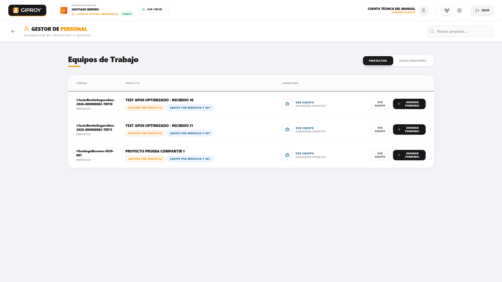
Qué debe observar: la pertenencia al proyecto y el ámbito asignado son decisiones separadas. Revise ambas antes de dar por terminada la incorporación.
Editar asignación cambia el ámbito; Retirar del proyecto elimina la participación futura, pero no debería borrar la autoría histórica de sus acciones. Si una persona no aparece en la búsqueda, primero compruebe que pertenece a la empresa y está activa. Conceda el alcance mínimo suficiente: acceso a presupuesto no implica necesariamente permiso para modificar toda la estructura o administrar el equipo.
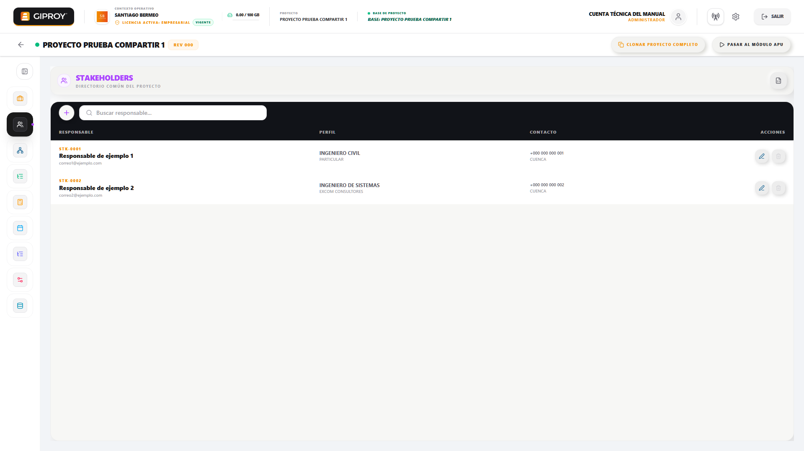
Directorio común: buscar reduce las filas visibles; el signo más crea una ficha; editar abre la persona elegida. Los nombres y contactos se han anonimizado porque este manual está preparado para publicarse en Internet.
12.5 Calendario, anotaciones, comunicados y recordatorios
El calendario reúne información cotidiana alrededor de una fecha. Avance o retroceda por meses, use Hoy para volver a la fecha actual y seleccione un día para crear el contenido permitido. Una anotación de proyecto conserva contexto de la obra; una nota privada pertenece a quien la crea; un comunicado transmite información al grupo correspondiente. Escriba un título reconocible y un detalle que explique qué ocurrió, a quién afecta y qué se espera después.
Los recordatorios personales pueden mostrarse como activos, completados o todos. Completar cambia su estado, Editar corrige el contenido y Eliminar lo retira. Un recordatorio ayuda a una persona a no olvidar una acción; no sustituye una actividad del cronograma, una comunicación formal ni una incidencia de campo.
12.6 Organización de la empresa en el proyecto
La Estructura de Desglose Organizacional —mostrada en algunos lugares como EDO u OBS— responde quién participa y cómo se ordena la responsabilidad. Abra esa sección, seleccione el nivel del que dependerá la nueva unidad y use Agregar. Escriba un nombre comprensible, asigne responsable cuando corresponda y guarde. La vista gráfica ayuda a detectar ramas sin persona responsable o dependencias poco claras.
Editar cambia los datos de una unidad; Mover cambia su dependencia; Eliminar solo debe usarse cuando la unidad ya no contiene relaciones necesarias. Si el sistema bloquea el borrado, revise personas, responsabilidades o elementos dependientes antes de insistir. La organización debe poder entenderla alguien que no participó en su creación.
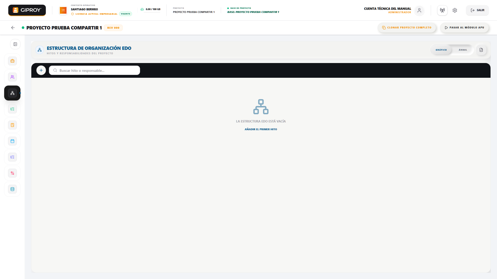
Estado inicial real: Gráfico y Árbol son dos formas de observar la misma organización. Cuando no existen unidades, “Añadir el primer hito” inicia la jerarquía; no es un error ni una pantalla en carga.
12.7 Estructura del trabajo o EDT
La Estructura de Desglose del Trabajo, o EDT, responde qué debe entregarse. Divide el proyecto desde grandes componentes hasta capítulos controlables y se convierte en el mapa común para presupuesto, cronograma, responsabilidades y vínculos BIM. No es una lista de empleados, recursos ni tareas diarias.
Ejemplo
Para un edificio pequeño, la EDT puede comenzar con “Preliminares”, “Estructura”, “Arquitectura” e “Instalaciones”. Dentro de “Arquitectura” podrían aparecer “Mamposterías”, “Revestimientos” y “Carpinterías”. El APU de mampostería se utiliza para valorar una partida de esa rama, pero no sustituye la rama.
Diseñe la EDT antes de valorar y planificar. Es posible ajustarla más adelante, pero hacerlo cuando ya existen partidas, actividades o elementos BIM obliga a revisar todas esas relaciones.
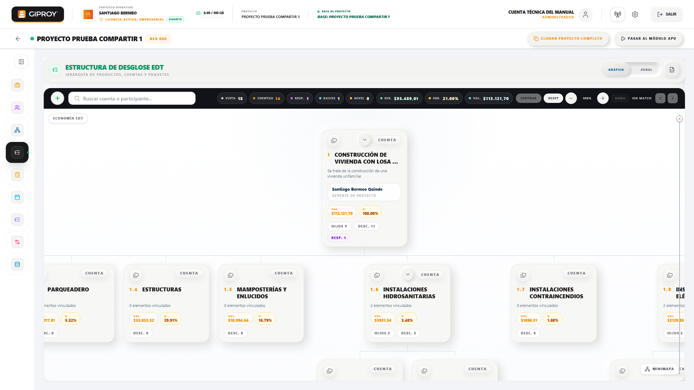
Qué representa cada tarjeta: una cuenta organiza alcance, no personas. Los indicadores de valor, porcentaje, hijos y responsables ayudan a detectar ramas incompletas; zoom, centrar, minimapa y búsqueda solo cambian la forma de recorrer la estructura.
12.8 Crear, ordenar, mover, editar y eliminar capítulos
Para crear un capítulo, seleccione primero su capítulo padre —o la raíz del proyecto— y pulse Agregar capítulo. Escriba código y nombre, revise en la vista previa dónde aparecerá y guarde. Para ordenar, use los controles de subir y bajar o el arrastre cuando esté disponible; ordenar cambia la presentación, no el costo.
Mover cambia el capítulo de padre y puede alterar la ruta que se muestra en presupuesto y cronograma. Revise la nueva ruta antes de confirmar. Editar cambia código o nombre sin crear otro capítulo. Eliminar retira la rama y por eso debe reservarse para capítulos vacíos; si contiene partidas, actividades, asignaciones o vínculos, traslade o resuelva esas relaciones primero.
Resultado esperado: la estructura muestra cada capítulo una sola vez, bajo el padre correcto y en el orden de lectura de la obra. Al abrir presupuesto o cronograma, la misma ruta permite reconocer dónde pertenece cada elemento.
Valoración
13. Preparar el presupuesto
El presupuesto aplica cantidades concretas del proyecto a precios previamente analizados. Su resultado pertenece a una revisión determinada y debe conservar la relación con la EDT.
13.1 Relación entre la EDT, el análisis de precio y el presupuesto
El APU define el costo por unidad; la línea de presupuesto define cuántas unidades necesita el proyecto. Si el APU “Mampostería de bloque de 15 cm” cuesta 32,40 por metro cuadrado y el proyecto requiere 840 m², la línea utiliza esa cantidad para calcular el costo de la partida.
Cuando incorpore un APU, confirme su base, fecha y alcance. Después revise la cantidad del proyecto. No corrija una cantidad total alterando el rendimiento unitario del APU: son decisiones diferentes.
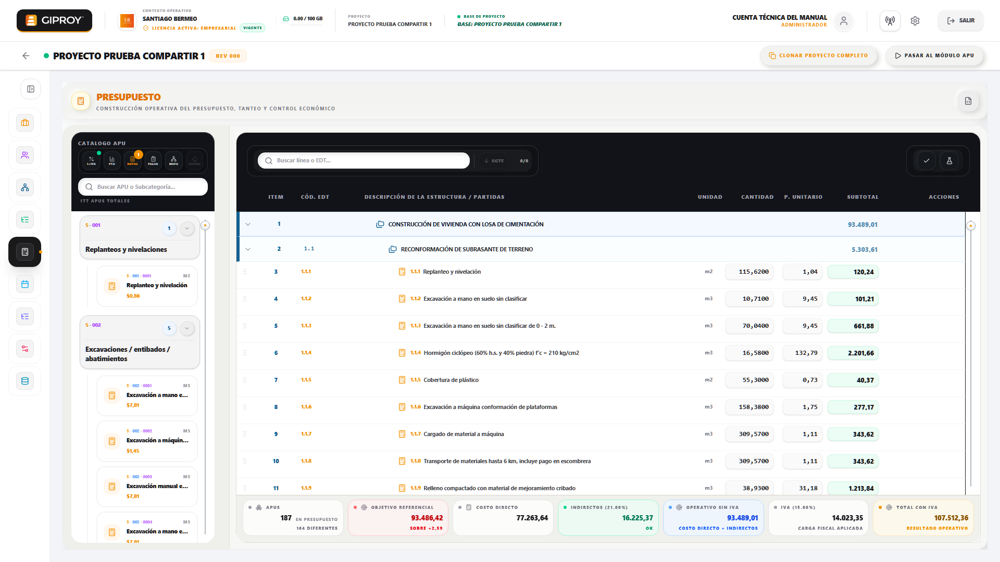
Lectura de izquierda a derecha: el catálogo aporta los análisis; la tabla central los coloca bajo la EDT y aplica cantidades; la banda inferior separa costo directo, indirectos, valor operativo, impuestos y total. El total no debe interpretarse sin revisar esas capas.
13.2 Crear el presupuesto de una revisión
Abra Presupuesto dentro del proyecto y compruebe en la cabecera el nombre y la revisión. Si todavía no existe un presupuesto, use Crear presupuesto, elija la EDT que lo organizará y confirme la moneda y los datos iniciales que solicite la ventana. La creación prepara el espacio de trabajo; todavía no produce un valor hasta que se incorporan partidas y cantidades.
Si el sistema ofrece copiar desde otra revisión, lea claramente origen y destino. Copiar es útil para comenzar desde una propuesta anterior, pero el nuevo presupuesto pertenece a la revisión de destino y debe verificarse antes de utilizarse como aprobado.
13.3 Capítulos y partidas
Un total razonable puede ocultar una partida ubicada en el capítulo equivocado o una cantidad duplicada. Recorra capítulos, líneas, unidades y subtotales. La EDT valorada permite observar cómo se distribuye el costo a través de la estructura.
Los capítulos proceden de la EDT; las partidas son los trabajos valorados dentro de ellos. Expanda o contraiga un capítulo para concentrarse en una rama. Seleccionar una fila la prepara para las acciones disponibles; no la modifica por sí solo. Una partida debe aparecer una sola vez en el lugar donde se medirá y controlará.
Pantalla: Detalle del presupuesto
13.4 Elegir e incorporar un análisis de precio
Use el buscador para localizar un análisis por código o descripción. Abra el resultado, compruebe nombre, unidad, precio y base de procedencia, seleccione la cuenta de la EDT y confirme la incorporación. Si el análisis no aparece, revise la base vinculada al proyecto y los filtros antes de crear un duplicado.
El buscador localiza APUs o subcategorías del catálogo disponible para incorporarlos. Las herramientas superiores no son equivalentes entre sí: Indirectos e IVA abre la composición económica adicional; Pareto analiza concentración; Notas conserva observaciones generales; Pegar cantidades aplica valores del portapapeles desde una línea seleccionada; Minimapa EDT muestra la ubicación estructural; y Limpiar tanteos elimina propuestas temporales existentes, no líneas definitivas.
El botón de Reporte de presupuesto abre una vista previa. Revise título, formato, orientación y contenido antes de descargar. Cerrar la vista previa no elimina el presupuesto.
Pantalla: Líneas del presupuesto
13.5 Introducir y comprobar cantidades
Edite la cantidad de la línea en la unidad indicada por el análisis. Al guardar, el total debe actualizarse como cantidad por precio unitario. Pegar cantidades permite trasladar una columna desde una hoja de cálculo a partir de la línea seleccionada: confirme el orden, revise la vista previa y compruebe la primera y la última línea antes de aceptar. Una celda vacía, texto en lugar de número o separadores decimales incompatibles deben corregirse, no interpretarse a ciegas.
Cada línea muestra su ubicación EDT, descripción, unidad, cantidad, precio unitario y total. El control de expansión abre o contrae cuentas. Seleccionar líneas activa el modo de selección; marcar una línea no la edita ni la borra. El buscador admite código, descripción o EDT y el botón de siguiente coincidencia avanza sin perder la búsqueda.
Una línea sincronizada puede arrastrarse a otra cuenta EDT. Si aparece como desincronizada, el movimiento se bloquea para evitar que el presupuesto se separe de la estructura. Editar APU abre la composición de la partida; Notas documenta particularidades; Eliminar línea retira la partida después de confirmación.
Los controles Bloquear línea Equipo y Proponer ajuste Equipo pertenecen al trabajo coordinado. Bloquear evita cambios concurrentes mientras una persona opera; proponer registra un ajuste para revisión en lugar de imponerlo silenciosamente.
Procedimiento guiado
Agregar un APU y definir la cantidad del proyecto
Abra el presupuesto correcto.Lea proyecto y revisión en la cabecera. Compruebe que la EDT ya contiene la cuenta de destino.
Busque el APU.Use código o descripción. Abra el resultado para comprobar unidad, base de origen y precio.
Incorpórelo a la cuenta EDT.Seleccione la rama de destino. Si no existe, vuelva a EDT y corrija la estructura antes de continuar.
Escriba la cantidad.Introduzca la medición total del proyecto en la unidad del APU. No escriba un rendimiento unitario.
Revise precio y total.Confirme que el precio unitario procede del análisis esperado y que el total responde a cantidad por precio.
Documente la fuente.Use Notas cuando la cantidad provenga de una medición, plano o supuesto que otra persona deba verificar.
Ventana: Editor APU del presupuesto
13.6 Editar la composición de una partida
La cabecera muestra el estado de sincronización. Guardar APU confirma cambios; mientras aparece “Guardando” no repita la acción. Cerrar editor abandona la ventana y puede solicitar confirmación si hay cambios pendientes.
El buscador lateral encuentra recursos. La barra lateral puede contraerse para ampliar el área de composición y restaurarse con su control. En cada línea, Editar recurso abre sus datos; Editar APU anidado abre el análisis relacionado; el icono de retirar elimina la línea de esta composición. Editar un recurso compartido puede tener un alcance mayor que modificar únicamente su cantidad dentro del APU.
La etiqueta Divergente avisa que la copia utilizada por esta revisión ya no coincide con su referencia de catálogo. No es un error de suma: significa que debe decidir si conserva la adaptación propia del proyecto o si procede una sincronización controlada. Antes de guardar, compare descripción, unidad, cantidades, precios, rendimientos y total; no elimine la diferencia solo para hacer desaparecer el aviso.
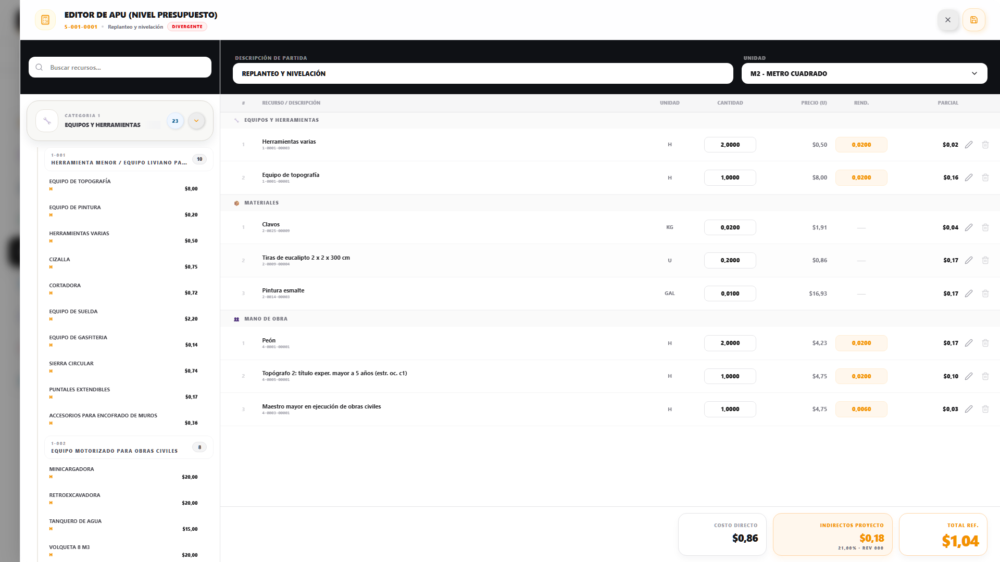
Editor completo de la partida 1.1.1. Replanteo y nivelación se mide en m² y combina herramientas, materiales y mano de obra. La parte inferior calcula 0,86 de costo directo, 0,18 de indirectos de proyecto y 1,04 como total de referencia por unidad. La X cierra; el disquete guarda. Ninguno cambia la cantidad total de 115,6200 m² escrita en la hoja del presupuesto.
13.7 Comprender costo directo, indirectos y total
El costo directo suma lo que consumen los recursos de las partidas. Los indirectos reúnen conceptos necesarios para ejecutar el proyecto que no se miden como una partida directa, según la política de la empresa. El total incorpora los componentes configurados, incluido el impuesto cuando corresponda. Cambiar un porcentaje puede afectar todo el presupuesto; lea el alcance y el nuevo total antes de guardar.
Utilice indirectos para representar costos reales, no para forzar una cifra objetivo. Si el resultado no coincide con lo esperado, investigue cantidad, unidad, precio, duplicidad, composición e impuestos.
La ventana separa las cuentas fijas de la base, las añadidas para esta obra y el IVA. Seleccionar una cuenta permite revisar porcentaje y observaciones. El signo más agrega la cuenta elegida; el lápiz prepara una cuenta personalizada; la papelera retira la cuenta activa cuando está permitido. Guardar configuración recalcula el presupuesto con el conjunto mostrado.
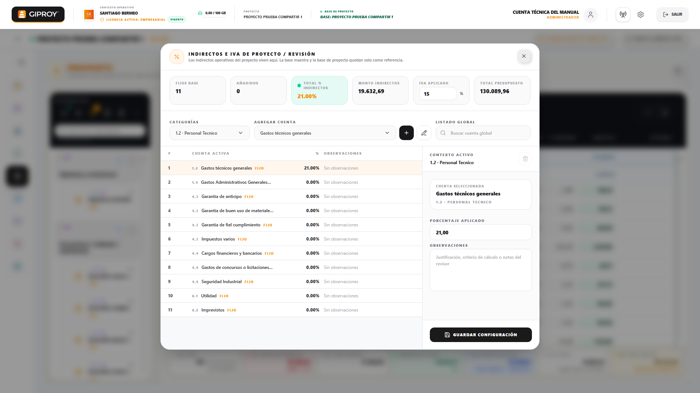
Configuración económica de la revisión. Hay once cuentas fijas, ninguna añadida, 21 % de indirectos y 15 % de IVA. El monto indirecto es 19.632,69 y el total mostrado 130.089,96. La cuenta Gastos técnicos generales concentra el 21 % y carece de observaciones: antes de guardar conviene documentar su criterio para que el porcentaje pueda auditarse.
13.8 Importar, exportar y preparar documentos
Importar incorpora información desde un formato admitido y debe mostrar una revisión previa o un resumen antes de materializar cambios. Compruebe columnas, unidades y coincidencias; los elementos rechazados necesitan corrección. Exportar genera un archivo de trabajo con el estado actual. El Reporte de presupuesto abre una vista previa: revise proyecto, revisión, fecha, orientación, capítulos, subtotales y total antes de descargar o imprimir.
En la pantalla vigente, el botón de hoja de cálculo abre tres documentos: Presupuesto presenta capítulos y partidas; Presupuesto + APUs añade la composición unitaria y resulta más extenso; Indirectos se concentra en las cuentas y porcentajes. Elegir una opción prepara la vista previa; abrir el menú no genera ni descarga todavía ningún archivo.
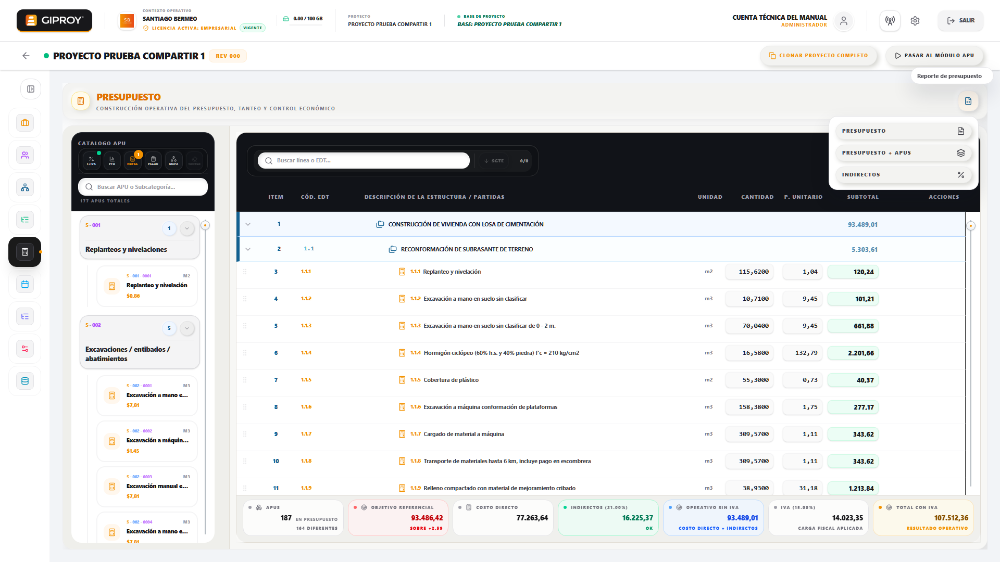
Elegir el documento correcto. El menú aparece junto al icono de reporte y conserva detrás el presupuesto terminado: 187 APUs, 77.263,64 de costo directo, 16.225,37 de indirectos y 107.512,36 con IVA. Use “Presupuesto + APUs” cuando el destinatario necesite comprobar la formación de precios; para una lectura ejecutiva suele bastar “Presupuesto”.
Ventanas de análisis
13.9 Revisar la EDT valorada y el análisis Pareto
En Indirectos e IVA, el buscador de cuentas globales ayuda a incorporar conceptos existentes. “Añadir cuenta seleccionada” la lleva a la composición. “Nueva cuenta personalizada” abre campos para un concepto que no existe; escriba una justificación y criterio de cálculo. Revise el estado de indirectos antes de cerrar.
EDT valorada presenta el árbol económico sincronizado. Sus reportes diferencian listado de EDT, diccionario de la EDT y EDT valorada; elija según la pregunta que necesita responder. Pareto permite vista global o por capítulos, filtrar código o descripción y navegar desde una partida destacada al presupuesto.
El Pareto ordena la revisión: muestra qué partidas concentran mayor impacto económico. No declara que las restantes carezcan de importancia. Abra una partida destacada, compruebe cantidad y análisis, y vuelva al panorama general para confirmar el efecto.
Dónde concentrar la comprobación económica. Las veinte partidas visibles reúnen 61,5 % de 93.489,01. Acero estructural ocupa el primer lugar con 14.009,45 y 14,99 %; la mampostería 1.5.1 ocupa el segundo con 6.415,81 y eleva el acumulado a 21,85 %. Paquetes y Cuentas cambian el nivel de agrupación; Top 10, 20, 50 y Hasta 80 % cambian el alcance del ranking, no el presupuesto.
13.10 Historial y recuperación
Cuando la pantalla ofrezca historial, abra la versión o el registro de cambios para identificar quién actuó, cuándo y sobre qué elemento. Una propuesta temporal o tanteo no es una partida definitiva; Limpiar tanteos elimina esas propuestas del alcance indicado. Una revisión del proyecto conserva una alternativa identificable del conjunto, mientras que deshacer o recuperar una acción afecta el elemento y el momento que la interfaz describa.
Antes de eliminar una línea, lea la confirmación y su alcance. Si necesita conservar una decisión completa anterior, cree o utilice una revisión; no confíe en que cada borrado tenga recuperación ilimitada.
Acción sensible abierta sin confirmar. Eliminar retira la partida seleccionada de este presupuesto y provoca un nuevo cálculo; no borra el APU del catálogo. Cancelar, la X o hacer clic fuera conservan la línea. Antes de eliminar, anote su código y compruebe si debe trasladarla, sustituirla o conservarla en otra revisión.
Tiempo y recursos
14. Planificar con cronogramas
El cronograma convierte el alcance en una secuencia temporal. Debe pertenecer al proyecto y revisión correctos, y conservar sus propias reglas de calendario, dependencias y fechas.
14.1 Crear un cronograma
Entre en Cronogramas desde el proyecto y confirme la revisión mostrada. Use Nuevo cronograma, escriba un nombre que explique su finalidad, elija la fecha inicial y el calendario laboral, y guarde. Si ya existe otro plan, copiarlo puede ahorrar trabajo, pero debe comprobar qué actividades, fechas y relaciones pasan al nuevo cronograma.
Crear el cronograma no lo convierte en línea base ni lo publica como compromiso. Primero debe completar la secuencia y revisar su fecha final.
Dos lecturas sincronizadas: la tabla permite revisar código EDT, descripción, inicio y duración; el gráfico muestra posición temporal y relaciones. Tabla, Dividida y Gantt cambian la presentación, mientras que editar fechas o dependencias modifica la planificación.
14.2 Convertir partidas en actividades
Cuando la pantalla permita generar actividades desde el presupuesto, seleccione las partidas o ramas de la EDT, revise la vista previa y confirme. La partida aporta alcance, unidad y relación económica; la actividad añade tiempo, lógica de ejecución y seguimiento. No convierta automáticamente una partida en muchas actividades sin un criterio de control.
Una actividad debe tener un resultado reconocible, duración razonable y ubicación dentro de la estructura del proyecto. Actividades demasiado grandes ocultan atrasos; actividades excesivamente pequeñas vuelven imposible mantener el plan.
14.3 Definir duraciones, fechas y calendarios
Abra la actividad con Editar, escriba o calcule su duración y revise la fecha que resulta. Una actividad vinculada a un análisis puede estimar duración desde recursos y rendimientos; una actividad manual requiere una duración justificada. La fecha de inicio del proyecto, la jornada semanal, los festivos y las excepciones determinan qué días cuentan como trabajo.
Diez días de trabajo no siempre equivalen a diez días calendario. Configure jornadas, fines de semana y feriados antes de confiar en las fechas. Cambiar el calendario después puede desplazar muchas actividades aunque sus duraciones numéricas no cambien.
La regla que gobierna todas las fechas. En este proyecto se trabaja cinco días por semana, desde las 08:00 y durante ocho horas al día. La fecha final objetivo se compara con el fin calculado y muestra un adelanto de 92 días laborables. “Información extendida en descripción” solo cambia lo que se ve en las filas; las fechas, la jornada y el calendario sí cambian el cálculo.
14.4 Crear y revisar dependencias
Una relación indica por qué una actividad puede comenzar o terminar respecto de otra. La relación fin-comienzo es común, pero no debe aplicarse automáticamente. Por ejemplo, la pintura puede comenzar por sectores antes de terminar todos los enlucidos, si la planificación y el frente de trabajo lo permiten.
Abra el menú de la actividad que será origen y elija Crear dependencia. El cuadro identifica esa actividad arriba y pide la tarea destino por número visible o código EDT. FC · Fin–Comienzo obliga a terminar el origen antes de iniciar el destino; CC relaciona sus comienzos; FF, sus finales; y CF vincula el comienzo del origen con el final del destino. El adelanto o retraso añade una separación: un valor positivo espera; un valor negativo permite solapar, siempre que la lógica de obra lo justifique.
Ejemplo sin guardar. La actividad de origen es 1.1.1 Replanteo y nivelación. El texto abreviado 14FC+2d significa que la tarea 14 será sucesora mediante una relación Fin–Comienzo con dos días de espera. “Elegir destino” permite señalarla visualmente; “Crear dependencia” materializa el vínculo. Cancelar o la X dejan el cronograma intacto.
Pantalla: Cronogramas
14.5 Comprender la ruta crítica
Active la visualización de Ruta crítica cuando esté disponible. Las actividades críticas determinan la fecha final mientras no tengan holgura; retrasarlas puede retrasar el proyecto. El color ayuda a localizarlas, pero confirme también fechas, relaciones y holgura: no dependa únicamente del color.
Si casi todo aparece crítico, revise calendarios, restricciones y dependencias excesivas. Si nada aparece crítico, compruebe que el cálculo terminó y que las actividades están conectadas.
14.6 Leer y trabajar en el Gantt
La tabla es adecuada para revisar datos; la vista dividida relaciona cada fila con su barra; el diagrama de Gantt facilita comprender secuencia y solapamientos. Acercar o alejar cambia la escala temporal, no las fechas. Desplazarse horizontalmente permite visitar otros periodos. Expandir un resumen muestra sus actividades; contraerlo no las elimina.
Las pestañas o vistas operativas separan Gantt, cronograma valorado, flujo y recursos. Cambiar de vista no crea otro cronograma: presenta la misma revisión desde otra pregunta. El buscador de línea o EDT reduce el contenido visible sin eliminar actividades.
Los controles de configuración aplican parámetros del cálculo. Cuadrar 100% ajusta la distribución cuando el flujo correspondiente debe cerrar en cien por ciento. Recalcular desde Gantt vuelve a derivar información desde la planificación. Limpiar overrides retira ajustes manuales del alcance indicado; Recalcular caja actualiza el flujo económico. Lea siempre el resumen antes y después.
Ventana: Pareto temporal
14.6.1 Encontrar las actividades que dominan costo y plazo
El Pareto temporal no sustituye la ruta crítica. La ruta crítica pregunta qué actividades gobiernan la fecha final; el Pareto pregunta qué partidas concentran costo, tiempo o ambos. Elija Integrado para combinar las dos dimensiones, Tiempo para concentrarse en duración o Costo para revisar el peso económico. Top 10, 20 o 50 limita la lista; Solo críticas añade el criterio de criticidad. La EDT y las dos fechas acotan el análisis sin modificar el Gantt.
Seleccione una fila para leer su detalle: costo relativo, tiempo relativo, impacto integrado, periodo dominante y relación con el cronograma valorado y la caja. Ir a la tarea en Gantt regresa a la actividad para revisar su lógica. Un impacto alto pide atención; no autoriza por sí solo a recortar alcance, precio o duración.
Lectura del ejemplo. El análisis integrado reúne 187 partidas y las 20 primeras acumulan 69,28 %. La mampostería 1.5.1 aparece seleccionada: representa 6,86 % del costo relativo, 16,83 % del tiempo relativo y 11,85 % de impacto integrado. El periodo P1 concentra su mayor valor. Estos datos orientan la revisión hacia la partida, pero deben contrastarse con relaciones, recursos y ejecución real.
Pantalla: Gantt
Controles para ordenar y ajustar actividades
Una fila puede representar actividad, resumen o hito. El menú de tarea concentra acciones como editar, mover, insertar, duplicar o eliminar según su tipo y permisos. Mover arriba o abajo cambia el orden cuando la estructura lo permite. Deshacer recupera el último movimiento; rehacer vuelve a aplicarlo.
El control de fecha de inicio permite introducir día y hora. Arrastrar una barra prepara una vista previa; confirme el movimiento antes de considerarlo guardado. Cuando existen subtramos, editar el inicio global desplaza el conjunto; las acciones de un subtramo afectan únicamente ese segmento.
Las actividades calculables desde APUs pueden mostrar Editar duración desde recursos y rendimientos y Semáforos de planificación del APU. Una partida subcontratada o solo materiales puede requerir duración manual porque no dispone del mismo cálculo productivo.
Procedimiento guiado
Crear una dependencia entre dos actividades
Identifique predecesora y sucesora.La predecesora condiciona a la sucesora. Compruebe códigos y descripciones antes de abrir el editor.
Abra el creador de dependencia.Puede hacerlo desde el menú de tarea o desde el control de predecesoras de la fila.
Seleccione la actividad relacionada.Busque por referencia o código. Evite relacionar una actividad consigo misma o crear un ciclo.
Elija el tipo.Defina fin-comienzo, comienzo-comienzo u otra relación disponible según la lógica real de obra.
Defina el desfase.Puede expresarse en días, horas, minutos o porcentaje cuando el contrato lo permite. Cero significa sin adelanto ni espera adicional.
Guarde y observe las fechas.Si aparece un conflicto relacional, no lo ignore. Romper dependencia retira la relación seleccionada.
14.7 Fijar una línea base y registrar el avance
La línea base conserva el plan aprobado para compararlo con lo que sucede después. Use Establecer línea base solo cuando fechas y lógica hayan sido revisadas; lea la confirmación porque reemplazar una línea base puede alterar la comparación histórica. El seguimiento registra fecha de corte, avance real y, cuando proceda, fechas reales.
Actualizar el porcentaje sin evidencia produce una apariencia de avance, no control. Escriba el dato con la periodicidad acordada y añada una nota cuando exista una desviación relevante. Compare plan y realidad antes de reprogramar: mover la planificación no debe borrar la historia del retraso.
En el Gantt vigente, Confirmar cronograma crea una versión confirmada; Historial reúne esas confirmaciones como V1, V2 y siguientes. Si el historial dice “Aún no hay versiones confirmadas”, el gráfico que ve todavía no dispone de una referencia aprobada para comparar. No interprete ese mensaje como un error ni como una línea base vacía: revise el plan, confirme con la autoridad correspondiente y vuelva al historial.
Estado real del proyecto de ejemplo. El Gantt tiene actividades, fechas y dependencias, pero su Historial confirmado aún no contiene versiones. Por eso no es correcto afirmar que existe una línea base aprobada. El cierre del ejemplo deberá confirmar el cronograma y verificar que aparezca una versión antes de utilizar comparaciones plan–real o secuencia 4D.
14.8 Revisar recursos, costos y comparación plan–real
El cronograma valorado, la curva S y el flujo de inversión conectan tiempo con presupuesto. La vista de recursos muestra la demanda prevista por periodo y ayuda a localizar sobrecargas. Seleccione el recurso o grupo, acote las fechas y compare capacidad con necesidad antes de nivelar.
Recalcular desde Gantt vuelve a derivar la distribución usando la planificación actual; Recalcular caja actualiza el flujo económico; Limpiar ajustes manuales devuelve el alcance indicado al cálculo. Registre el estado anterior cuando el cambio afecte una previsión ya comunicada.
En Valorado, Porcentaje muestra qué parte de cada partida cae en cada periodo; Inversión traduce ese reparto a dinero; Cantidades lo expresa en la unidad de la partida; y Curva S presenta el acumulado. “Derivación: Desde Gantt” significa que las fechas actuales gobiernan el reparto. Si existen ajustes manuales por línea, tienen prioridad hasta limpiarlos o recalcular según el aviso. El resumen inferior reúne estado, origen, total, pico, riesgo del primer periodo y avance.
Del tiempo al dinero. El proyecto reparte 93.489,01 entre periodos P1 a P6. Replanteo y nivelación cae 100 % en P1; otras partidas pueden repartirse entre varios periodos. El resumen advierte “Revisar”, identifica Gantt vía Valorado, un pico de 59.031,72 y riesgo P1 de 46,85 %. El avance mostrado de 100 % pertenece al estado calculado de esta vista y debe contrastarse con un corte real antes de comunicarlo como avance de obra.
En Recursos, las categorías separan equipos, materiales, transporte y mano de obra. El panel izquierdo reduce por subcategoría; el buscador localiza un recurso; cada columna P1, P2 y siguientes muestra cantidad y costo del periodo. El campo Cap. permite anotar capacidad disponible para comparar demanda; no cambia por sí solo la cantidad presupuestada. Actualizar vuelve a obtener la matriz desde el estado vigente.
Lectura de capacidad por periodo. La matriz contiene 214 recursos distribuidos en seis periodos. Equipos y herramientas reúne 23; materiales, 174; transporte, 2; y mano de obra, 15. Para una cortadora se prevén 1.606,2297 unidades de uso y 1.156,49 en P1, además de 22,2003 y 15,98 en P6. Esos valores permiten detectar picos; la decisión de nivelar exige comprobar disponibilidad y efecto sobre fechas.
14.9 Preparar reportes y exportaciones
Abra el reporte desde la vista que responde a su pregunta: Gantt para secuencia, cronograma valorado para distribución económica, curva S para evolución acumulada o recursos para carga. Defina periodo, escala, orientación y contenido; después revise la vista previa. El encabezado debe identificar empresa, proyecto, revisión, cronograma y fecha de corte.
La exportación conserva datos para intercambio, pero no garantiza que otra herramienta interprete calendarios, restricciones o formatos de la misma forma. Abra el archivo generado y compruebe al menos la primera actividad, una dependencia, una fecha crítica y el total económico antes de enviarlo.
Ventana: Calendario laboral
Detalle del calendario laboral
El calendario define qué tiempo cuenta como trabajo. Puede revisar días semanales, agregar franjas horarias y describirlas, registrar festivos manuales y eliminar excepciones. Recargar festivos oficiales consulta nuevamente el calendario aplicable; Resetear calendario restaura la configuración y debe utilizarse con cautela.
El calendario muestra indicadores para inicio del proyecto, fin y fecha actual. “Ir a esta fecha en el Gantt” centra la planificación. Después de cambiar jornadas o festivos, revise actividades críticas y fecha final.
La franja completa de este ejemplo va del 1 de junio de 2026 al 12 de enero de 2027: contiene 275 días, de los cuales 190 son laborables, 78 son no laborables por la semana base y 7 son festivos oficiales. Los puntos verdes, grises y azules permiten comprobar cada día. El panel derecho conserva la regla simple de cinco días y ocho horas; Activar personalizado habilita horarios por día y excepciones. Añadir un festivo manual exige fecha y motivo.
Ventana completa, no un recorte. Se muestran los ocho meses que forman la franja operativa y el panel de configuración. El 1 de junio está marcado como inicio y el 12 de enero como fin; los festivos oficiales aparecen en azul. Pulsar un día solo lo selecciona. Utilice la acción específica y confirme antes de convertirlo en excepción o festivo manual.
Reajuste de precios
15. Desagregación y fórmula polinómica
Estas herramientas transforman la composición del presupuesto en información agrupada para análisis y reajuste. Dependen de que recursos, APUs y clasificaciones estén completos.
15.1 Preparar la información
Abra el proyecto y la revisión correctos, compruebe que el presupuesto está completo y que cada análisis conserva sus recursos, unidades y clasificaciones. La desagregación no repara un presupuesto incompleto: expone sus componentes para agruparlos. Si cambia el presupuesto después, vuelva a calcular y revisar.
15.2 Generar y revisar la desagregación
La desagregación recorre los rubros del presupuesto y distribuye sus recursos. El buscador admite rubro, EDT o CPC. El botón de siguiente coincidencia avanza por los resultados. Los indicadores muestran si un APU tiene CPC completo o si todavía existen recursos sin clasificar.
Asignar CPC del APU para este proyecto corrige la clasificación dentro del contexto autorizado. Busque por código o descripción, seleccione la opción correcta y vuelva a revisar el estado. No asigne un código genérico solo para eliminar la advertencia: la fórmula posterior heredará esa decisión.
La advertencia también es información: “137 faltantes” indica recursos sin CPC completo. El VAE consolidado solo debe utilizarse después de revisar esos pendientes; elegir un rubro abre su composición sin cambiar el presupuesto.
Procedimiento guiado
Preparar la desagregación de una revisión
Confirme el presupuesto.Abra la revisión correcta y compruebe que sus líneas y APUs están actualizados.
Abra Desagregación.Espere a que se carguen rubros, recursos y clasificaciones.
Revise las advertencias CPC.Filtre o busque los elementos incompletos y corrija cada recurso desde la acción disponible.
Compare totales.La desagregación debe explicar el presupuesto, no crear un total económico independiente.
Genere el reporte.Abra la vista previa, compruebe revisión y fecha, y después descargue.
15.3 Crear grupos y comprender sus coeficientes
La fórmula agrupa recursos que siguen una referencia de variación común. Cree o elija un grupo, asígnele un nombre reconocible y traslade los recursos compatibles. El coeficiente expresa el peso económico de ese grupo dentro del presupuesto; no es un porcentaje elegido manualmente para equilibrar el resultado.
La tabla de recursos permite asignar cada elemento a un grupo; Sin asignar señala trabajo pendiente. Revise los recursos de mayor impacto y también los pequeños que, juntos, pueden ser significativos. No agrupe mano de obra, materiales y equipos solo porque sus nombres se parecen.
15.4 Asignar índices
Seleccione un grupo y busque el índice que represente su naturaleza y el marco aplicable. Lea código, descripción y periodo antes de confirmar. En la tabla de índices, Sin índice significa que el grupo todavía no tiene la referencia que utilizará el cálculo. Cambiar un índice modifica el comportamiento futuro del reajuste, no el costo base ya calculado.
El separador entre recursos e índices puede arrastrarse para ajustar el ancho de trabajo. Esta acción solo cambia la vista. Cuando cierre una advertencia con su botón, el mensaje desaparece, pero la causa debe haberse corregido antes.
15.5 Crear y comprobar la fórmula
Use Generar fórmula cuando grupos e índices estén completos. Revise la expresión resultante, el coeficiente fijo cuando exista y la suma total de coeficientes. Una advertencia cerrada deja de verse, pero no corrige la causa. Si la suma no cumple la regla aplicable, vuelva a los recursos y grupos; no altere un coeficiente calculado sin comprender qué costo representa.
Estado real aún no terminado: la cabecera informa 214 recursos detectados y 2 pendientes. La columna izquierda permite asignar términos; la derecha relaciona coeficientes e índices. “Asignar sugeridos” no debe sustituir la revisión de cada propuesta.
Resultado esperado: no quedan recursos relevantes sin grupo ni grupos sin índice, la fórmula identifica cada componente y sus coeficientes cumplen la comprobación mostrada por el sistema.
15.6 Preparar documentos
Abra la vista previa del reporte de desagregación o fórmula, según el documento necesario. Compruebe empresa, proyecto, revisión, presupuesto de origen, fecha, grupos, índices, coeficientes y totales. Descargue o imprima solamente después de esa lectura. Si modifica una clasificación o el presupuesto, regenere el documento para evitar entregar una versión desactualizada.
Coordinación digital
16. Introducción al trabajo BIM
BIM es una capacidad opcional del proyecto. El presupuesto y el Gantt siguen siendo utilizables sin modelo; cuando se activa, BIM añade una referencia espacial y una cadena controlada entre modelo, coste y plazo.
16.1 Activar BIM y preparar OmniClass
En la configuración de la empresa, active BIM solo si el proyecto necesita modelos. OmniClass queda activado por defecto. Si se desactiva, GiProy muestra una advertencia porque presupuesto, Gantt y modelo pueden dejar de compartir una clasificación común. La decisión debe ser consciente y documentada; no desactive OmniClass para ocultar datos pendientes.
Un proyecto recién activado muestra BIM configurado · sin modelo. Ese estado es correcto: permite preparar configuración y continuar con presupuesto y Gantt antes de importar un IFC.
16.2 El flujo completo
Preparar. Revise unidades, coordenadas, reglas de identificación, clasificación y permisos.
Importar y revisar. Cargue el IFC; espere el procesamiento y lea el informe de unidades, coordenadas, GUID, entidades, duplicados y elementos sin clasificación.
Aceptar una versión. Acepte, solicite corrección o rechace con motivo. Solo una versión aceptada puede gobernar vínculos.
Explorar. Use el explorador por estructura, planta, disciplina, sistema, clasificación, propiedad o GUID. Guarde vistas para repetir un contexto.
Medir y proponer 5D. Revise cantidades, unidad, coste y versión; proponga el vínculo entre partida y elemento y espere la decisión autorizada.
Planificar 4D. Seleccione actividad y línea base; vincule actividad, partida y elemento. El borrador no es oficial hasta aprobarse.
Coordinar. Resuelva incidencias, cambios de versión y diferencias de cantidad en la bandeja de decisiones. La oficialización queda bloqueada si la matriz presupuesto ↔ Gantt ↔ BIM está incompleta.
Registrar y entregar. Añada fecha de control, avance real, coste y evidencias; cierre punch, as-built, commissioning y dossier.
16.3 Importación y calidad IFC
“Pendiente” y “Procesando” no son estados utilizables. En “Listo para revisión”, abra el informe. Las advertencias no se deben ignorar: describen diferencias que pueden romper la trazabilidad. Acepte únicamente si el responsable entiende su impacto; de lo contrario solicite corrección o rechace.
Importación: el archivo se procesa antes de aparecer en el explorador.
16.4 Mapa completo de controles
La siguiente referencia cubre los controles principales de la superficie actual. Los botones que solo aparecen con un permiso o estado concreto se indican como contextuales; si no aparecen, el estado o el rol todavía no permite ejecutarlos.
Etapa
Control
Función y resultado
Captura
Resumen
Actualizar estado · Abrir etapa · Revisar
Consulta métricas y lleva a la siguiente etapa sin modificar datos.
Reúne dependencias y solo cierra cuando la aceptación autorizada está registrada.
proyecto-bim-entrega.png
17. Trabajar en el espacio BIM
El nuevo espacio se divide por propósito. Resumen indica el estado y la siguiente acción; Modelo es el único lugar de inspección 3D; Costes muestra QTO y vínculos 5D; Planificación muestra actividades, baseline y secuencia 4D; Coordinación concentra decisiones; Seguimiento registra realidad; y Entrega prepara el expediente final. Cambiar de sección cambia el trabajo, no solo el panel.
Modelo: seleccione un elemento para consultar propiedades, GUID y relaciones; el visor sirve para inspeccionar, no para sustituir presupuesto o Gantt.
17.1 Costes 5D
Seleccione una partida y revise la propuesta de cantidad. Cada vínculo debe conservar partida, elemento, unidad, cantidad, coste, revisión y versión del modelo. “Propuesto” espera revisión; “aprobado” puede entrar en la matriz oficial; “rechazado” necesita motivo. Una cantidad BIM nunca modifica silenciosamente la partida presupuestaria.
QTO: compare la medición del modelo con la cantidad presupuestada antes de proponer.
17.2 Planificación 4D
Trabaje primero en borrador. Seleccione la línea base, asigne actividades y compruebe cobertura. La secuencia reproduce el plan en una fecha de corte; no convierte una actividad en avance real. Solo una baseline aprobada y una matriz completa pueden oficializar la coordinación.
4D: la fecha de corte y la baseline deben estar visibles antes de interpretar la secuencia.
17.3 Coordinación y seguimiento
La bandeja de coordinación reúne conflictos, cambios de versión, diferencias QTO y entidades sin correspondencia. Asigne responsable, vencimiento, impacto y decisión. En Seguimiento registre previsto, ejecutado, coste, plazo, cantidad y evidencia con la misma fecha de control. No corrija una desviación editando el plan histórico.
17.4 Entrega
La entrega exige as-built aceptado, punch cerrado, commissioning, documentos y propiedades mínimas. El dossier permanece pendiente hasta que sus dependencias estén completas; presentar no equivale a aceptar.
Entrega: revise faltantes y estados antes de presentar el dossier.
17.5 Resolución y navegador
La superficie de trabajo está diseñada para 1920×1080 y se adapta a resoluciones mayores. En Safari pueden existir divergencias de WebGL o controles; se recomienda Chromium en Windows, macOS o iPadOS. No se soportan teléfonos.
16.4 Carga y versiones del modelo
Al cargar un IFC, use un nombre que permita reconocer disciplina, fecha y revisión. Espere a que el procesamiento termine antes de utilizarlo como base de coordinación. Si se carga una versión posterior, conserve clara la relación con la anterior; no confunda “archivo más reciente” con “versión aprobada”.
Cargar modelo IFC abre el formulario; Seleccionar archivo prepara la entrega y Cargar inicia el procesamiento. “Pendiente” indica espera, “Procesando” indica trabajo en curso, “Listo” permite abrir y “Fallido” requiere leer la causa. Reintentar solo tiene sentido después de corregirla. Una nueva versión conserva la anterior para comparación.
El visor ayuda a formular preguntas sobre el modelo
Navegar, seleccionar, ocultar, aislar, filtrar, cortar y medir son formas de examinar el modelo. Seleccione un elemento para consultar sus propiedades y ubicación. Utilice el árbol para entender la estructura espacial y los filtros para concentrarse en una categoría o sistema.
Los vínculos conectan geometría y gestión
Un muro del modelo puede vincularse con una parte de la EDT, una partida presupuestaria o actividades del cronograma. El vínculo debe ser trazable: proyecto, revisión y elemento correctos. El modelo ayuda a localizar y comprender; los valores gobernados continúan en sus módulos de origen.
Ejemplo
Los muros de mampostería del segundo piso pueden relacionarse con la rama “Arquitectura › Mamposterías”, con la partida presupuestaria correspondiente y con las actividades de ejecución por sector. Al seleccionar una actividad durante la reproducción 4D, el visor puede enfocar sus elementos; el cronograma clásico continúa siendo la referencia temporal.
Espacio BIM
Comprender la cabecera y los espacios de trabajo
La búsqueda superior admite elemento, GUID, actividad o modelo y muestra resultados navegables. Cargar modelo IFC lleva al área de importación cuando la persona puede administrar BIM. El botón de administración abre las herramientas de modelos y versiones.
Las áreas Visor, Coordinación, Planificación 4D, Producción, Campo, Entrega e Informes cambian las herramientas alrededor del mismo contexto de proyecto. Cambiar de área no cambia por sí solo el modelo seleccionado.
Los botones de panel muestran u ocultan el explorador y el inspector. En pantallas compactas puede mostrarse uno a la vez. Restablecer contexto limpia selección y filtros operativos; Restablecer layout devuelve tamaños y paneles a su composición inicial; Actualizar BIM vuelve a consultar los datos.
Visor BIM
Herramientas de revisión del modelo
Ocultar selección
Retira temporalmente del visor los elementos seleccionados para ver lo que hay detrás, sin eliminarlos del modelo.
Aislar selección
Oculta temporalmente todo lo demás y deja visible la selección. Es útil para revisar un sistema o conjunto concreto.
Ghost
Mantiene el entorno como referencia translúcida mientras resalta la selección. El botón indica cuándo está activo.
Plano de corte
Activa un corte del modelo. El control de posición desplaza el plano para inspeccionar el interior.
Medir selección
Calcula la medición disponible para el elemento seleccionado. Puede cambiar entre metros y milímetros sin alterar la geometría.
Proyección
Alterna entre perspectiva y ortográfica. La proyección cambia la forma de observar, no las dimensiones del modelo.
Restablecer revisión
Devuelve ocultamientos, aislamiento, ghost, cortes y proyección a su estado inicial. Reintentar carga aparece cuando Fragments no pudo abrirse.
Procedimiento guiado
Cargar una versión IFC y comprobar que está lista
Comience abriendo el proyecto y la revisión correctos, porque el modelo debe corresponder a esa decisión. Entre después en BIM; si la pestaña no aparece, revise empresa y permisos en lugar de abrir una ruta directa. Desde Cargar modelo IFC, elija el archivo autorizado y escriba un nombre que incluya disciplina, revisión y fecha. Antes de procesarlo, revise tamaño, checksum o la información de integridad disponible. Durante el procesamiento, pendiente significa que espera turno, procesando que se está leyendo, listo que puede abrirse y fallido que requiere revisar la causa; Reintentar solo debe utilizarse después de entender el error. Cuando la versión esté lista, ábrala en el visor, seleccione un elemento y confirme que el inspector muestra propiedades reales. Termine comprobando planta, clase y GUID de varios elementos antes de crear cualquier vínculo.
BIM pantalla por pantalla
17. Controles del espacio BIM
Esta guía describe los controles que aparecen dentro de las seis etapas actuales: Resumen, Modelo, Costes 5D, Planificación 4D, Coordinación, Seguimiento y Entrega. No presenta una navegación alternativa. Cada control se interpreta dentro de su etapa y mantiene el mismo proyecto, revisión y estado de coordinación.
El trabajo no empieza pulsando herramientas al azar. Primero se confirma la empresa, el proyecto, la revisión y el rol con el que se entra. Después se elige una etapa: Modelo para inspección, Costes para QTO/5D, Planificación para 4D, Coordinación para decisiones, Seguimiento para realidad o Entrega para cierre. GiProy conserva el contexto mientras se navega desde una partida o actividad hasta el elemento y vuelve al registro de origen. Cada recorrido termina manteniendo el dato, creando una propuesta, aprobando una relación o dejando una excepción documentada.
La tri-sincronización se entiende como un recorrido y no como tres pantallas independientes. El presupuesto aporta partidas, cantidades y costes; el Gantt aporta actividades, fechas, dependencias y línea base; BIM aporta elementos, GUID, propiedades y mediciones. Cuando se enlazan, cada relación conserva quién la creó, sobre qué revisión se calculó y si está propuesta, aprobada o rechazada. Cambiar una fuente no sustituye automáticamente las otras dos: se genera una señal de coordinación para que la persona responsable revise el impacto.
Administración BIM
Administrar modelos y versiones
Cargar modelo IFC abre el panel de importación. Escriba un nombre que identifique la disciplina y una versión que represente la entrega, por ejemplo “Arquitectura” y “Diseño coordinado R02”. Seleccionar archivo prepara el IFC y Cargar inicia un trabajo en segundo plano. Pendiente significa que espera turno; procesando, que se está leyendo; listo, que puede abrirse; fallido, que debe revisarse el mensaje. Cancelar detiene un trabajo aún ejecutable y Reintentar repite uno fallido después de corregir la causa.
La carga se prepara en una sola fila: Modelo identifica la disciplina o conjunto, Versión distingue la entrega y Disciplina facilita el filtrado. Archivo IFC no envía nada hasta pulsar Cargar y procesar. Si debajo no aparecen trabajos, todavía no existe una importación por trabajos para este proyecto.
Modelos y versiones permite elegir qué entrega se considera activa. Cambiar la versión cambia geometría, propiedades y resultados asociados; no sustituye el archivo anterior. Comparar versiones identifica elementos añadidos, modificados o retirados y puede enfocar su identificador en el visor. Utilice esa comparación antes de aceptar una nueva entrega.
Ficha real de la versión de demostración: el estado Ready, Activa en backend, 144 elementos y cuatro niveles confirman que puede utilizarse. Origen, atribución y huella técnica permiten reconocer exactamente la fuente; no cambie de versión guiándose solo por el nombre.
Federación reúne varias disciplinas en una vista. La casilla activa o desactiva cada miembro sin eliminarlo. Las traslaciones corrigen la colocación cuando existe una justificación; documente el motivo, porque una corrección visual puede ocultar un problema de coordenadas. Ubicación define referencia geográfica, emplazamiento y control de alineación.
Estado inicial comprensible: con una sola versión no hay nada que federar. Cargue otra disciplina o versión y espere a que esté lista; al regresar aparecerán los miembros, su activación y los ajustes de alineación. Este mensaje evita confundir una condición previa con una pantalla en blanco.Ubicación del modelo y fuentes de mapa: el marcador representa la referencia introducida; Latitud, Longitud y Altitud sitúan el proyecto, mientras Origen X/Y/Z y Rumbo alinean el modelo. El catálogo cartográfico controla capas y transparencia. “Ancla BIM pendiente” y “0 modelos ubicados” indican que todavía debe guardarse la relación del modelo, no que el mapa esté cargando.
Calidad consulta o genera el informe IFC de la versión activa. Generar inicia una comprobación y Actualizar vuelve a consultar su resultado. Espere a que termine antes de interpretar hallazgos; un informe sin observaciones no sustituye la revisión de los requisitos del encargo.
Sin reporte disponible es una invitación a generarlo: pulse Generar una sola vez y espere el resultado. El icono de actualización vuelve a consultar; no corrige el IFC ni certifica el modelo. Si el informe encuentra problemas, deben resolverse en la fuente y comprobarse en una nueva versión.
Visor
17.1 Abrir y recorrer el modelo
Seleccione una versión con estado Listo y pulse Abrir en visor. Espere a que desaparezca la carga y a que el árbol muestre contenido antes de validar la pantalla. Órbita gira alrededor del punto de interés, desplazamiento mueve la cámara, la rueda o el control de zoom acerca y aleja, y Encuadrar centra la selección. Estas acciones cambian la cámara, no el modelo.
Modelo realmente representado: la escena muestra 120 elementos visibles. “Todas” recupera las clases IFC; elegir una clase filtra; la segunda fila controla visibilidad. Calidad ajusta la representación y Restablecer vista 3D devuelve la cámara, sin modificar el archivo.
17.2 Seleccionar, ocultar y aislar elementos
Un clic selecciona un elemento y llena Propiedades con identidad, geometría y datos IFC. Buscar por nombre o identificador reduce el árbol. Ocultar retira temporalmente la selección; Aislar deja visible solo lo necesario; Mostrar todo recupera la escena. Ninguna de estas acciones altera el IFC.
17.3 Propiedades y estructura espacial
El explorador organiza proyecto, emplazamiento, edificio, plantas y elementos según la información del IFC. Expandir una rama permite localizar; el buscador reduce resultados por nombre o identificador. Al seleccionar, el inspector muestra identidad, clase, planta, propiedades y GUID disponibles. Si un dato no existe, debe corregirse en la fuente del modelo; escribirlo en una incidencia no modifica el IFC.
17.4 Mediciones, secciones y vistas
Medir crea una lectura entre puntos y debe interpretarse con las unidades del modelo. Sección corta visualmente el edificio para revisar interiores. Proyección cambia entre perspectiva y ortográfica. Restablecer visor vuelve a la vista inicial sin borrar vínculos ni incidencias.
Vistas guardadas conserva cámara, selección, visibilidad y cortes bajo un nombre reconocible. Renombrar cambia la referencia; duplicar prepara una variante; borrar elimina esa vista, no el modelo. Las vistas son útiles para que una incidencia, revisión o reunión vuelva exactamente al mismo contexto.
Vínculos conecta el elemento seleccionado con actividad, partida, EDT u otro registro compatible. Crear vínculo exige tipo y destino; abrir lleva al registro; eliminar vínculo rompe la relación sin borrar ninguno de los dos extremos. Cantidades propone mediciones del elemento; revisar y aprobar una propuesta es distinto de copiar automáticamente un valor al presupuesto.
Coordinación y entorno común de datos
17.5 Documentos, consultas, revisiones e incidencias
Resumen muestra pendientes y estados del entorno común de datos. Actividad enseña quién está conectado y qué eventos recientes ocurrieron. Actualizar renueva esa información. Documentos registra archivos con revisión, estado y procedencia; cargar una versión nueva no debe borrar la anterior.
Resumen CDE listo y sin errores: los ceros y los mensajes “Sin registros visibles” indican que todavía no se han creado expedientes; no significan que la pantalla siga cargando. Empiece en Documentos, RFI, Submittals o Revisiones según el trabajo que deba circular, y vuelva a Resumen para comprobar vencimientos, responsables y alertas.
Una RFI es una solicitud formal de información. Nueva RFI reúne pregunta, responsable, fecha y, cuando existe, elemento o vista. Enviar cambia de borrador a flujo de respuesta; responder conserva la contestación; cerrar confirma que la duda quedó resuelta. Reabrir debe justificarse.
Submittals controla entregables sometidos a revisión. Crear define contenido y responsable; enviar lo pone a consideración; aprobar, aprobar con observaciones o rechazar registra la decisión. Revisiones agrupa participantes, elemento y punto de vista para una comprobación coordinada.
Incidencias documenta un problema con título, tipo, prioridad, responsable, fecha, elemento y vista. Guardar el punto de vista permite abrirlo en la misma cámara. Cambiar estado de abierta a en curso, resuelta o cerrada refleja el trabajo real; resolver no equivale a verificar, y cerrar debe hacerse después de comprobar.
Calidad ejecuta comprobaciones y presenta hallazgos. IDS valida requisitos de información definidos para el modelo. Un hallazgo debe abrirse, localizarse y asignarse; generar un informe sin tratarlo no mejora el modelo. Conflictos estudia incompatibilidades espaciales o temporales y permite enfocar los elementos afectados.
Planificación 4D
17.6 Relaciones 4D con la planificación
Actividad y vínculo asocia el elemento activo con una actividad del cronograma. Compruebe que el alcance coincida: una fachada completa no debe vincularse accidentalmente a una sola planta. Intercambio prepara importación o exportación de planificación; la vista previa muestra actividades, dependencias, recursos, advertencias y campos no representables.
Punto de partida 4D: “Sin línea base” explica por qué la secuencia está desactivada. Primero cree o seleccione una línea base y vincule actividades con elementos; después active Secuencia 4D. Los filtros Vinculadas y Críticas sirven para reducir la lectura, pero no crean relaciones ni cambian el cronograma.
La línea temporal puede activarse, moverse a una fecha, reproducirse, pausarse, avanzar, retroceder o volver al inicio. La velocidad cambia la animación, no el calendario. Los colores diferencian no iniciado, en ejecución, terminado u otros estados. Enfocar actividad localiza sus elementos en el modelo.
Plan frente a real crea o elige una línea base, define fecha de corte y compara porcentajes. Agregar dependencia requiere predecesora, sucesora, tipo y desfase; quitarla modifica la propuesta antes de guardar. Una desviación debe investigarse desde actividad, frente e incidencia, no corregirse alterando el porcentaje planificado.
Producción y costo
17.7 Relaciones 5D con cantidades y costes
Producción comienza comparando: el panel derecho solicita una línea base y una fecha de corte. Si aún no existe línea base, cree una en Planificación 4D; luego regrese aquí. Las pestañas superiores separan el análisis plan-real de contratos, pagos, cambios, costos reales, previsiones, cantidades, productividad y recursos.
Estimación prepara cantidades y valores a partir de vínculos aprobados. Contratos registra alcance contractual; Valores organiza la distribución de valor; Pagos controla solicitudes y certificaciones. Cada transición debe acompañarse de referencia y fecha para mantener trazabilidad.
Cambios registra órdenes con motivo, impacto y estado. Una propuesta no debe tratarse como aprobada. Reales incorpora costos efectivos con fecha y origen. Forecast combina compromiso, real y trabajo pendiente para estimar el resultado final. Actualizar datos de origen y después recalcular evita comparar periodos distintos.
Eventos documenta situaciones no previstas. Frentes permite analizar escenarios de ejecución y elementos incluidos. Cantidades revisa propuestas; Productividad relaciona producción y esfuerzo; Recursos comprueba capacidad. Particiones divide elementos en unidades construibles y Equipos ensaya trayectorias y radios de operación. Estos controles son escenarios de gestión, no modificaciones de autoría sobre el IFC.
ERP prepara paquetes de intercambio. Integraciones crea conectores HTTPS para eventos autorizados. El secreto se muestra una sola vez: cópielo y guárdelo en el gestor seguro de la empresa. Activar, desactivar o reintentar exige un motivo; no publique el secreto en capturas, correos ni el manual.
Campo
17.8 Seguimiento de obra, calidad y entrega
Diario registra fecha, clima, resumen, restricciones y hechos relevantes. Cuadrillas conserva partes de tiempo y composición. Materiales documenta recepción, consumo o movimiento. Documentos pone a disposición planos y archivos controlados; confirme siempre revisión y estado antes de construir.
Diario vacío, no cargando: “No hay jornadas para estos filtros” es un estado válido. Antes de esperar partes aquí, utilice Registrar avance o el formulario de campo correspondiente para crear el primer registro con fecha, actividad, frente, horas, cantidad y evidencia. Después podrá buscarlo o limitarlo por frente y fechas.
Incidencias crea hallazgos desde terreno con elemento, fotografía o vista cuando está disponible. Registrar avance incorpora cantidades o porcentajes con fecha y evidencia. Inspecciones controla seguridad y riesgo, responsable, resultado y acciones. El panel Elemento mantiene visible qué parte del modelo se está documentando.
Entrega
As-built, puesta en marcha, pendientes y dossier
As-built compara y acepta la versión que representa lo construido. Aceptar debe ocurrir después de revisar incidencias abiertas y documentación. Commissioning registra sistemas, pruebas, responsables y resultado. Una prueba fallida permanece pendiente hasta repetir y verificar.
Preparación de la entrega as-built: seleccione la versión lista, identifique la revisión, revise los criterios y escriba la declaración de alcance, comprobaciones y excepciones. Presentar para aceptación abre el flujo de decisión; no convierte por sí solo la versión en entrega aceptada.
Cierre punch reúne pendientes de terminación. Marcar resuelto indica que se ejecutó la corrección; verificar confirma el resultado. Dossier digital compila modelos, documentos, actas y evidencias, mostrando faltantes antes de emitir. Transición O&M entrega información a operación y mantenimiento con responsables y aceptación.
Informes BIM
17.9 Consultar y exportar resultados 4D/5D
Abra Informes y elija el tipo que responda a la pregunta de control: conflictos, avance, cantidades, costos u otra opción disponible. Vista previa permite leer el resultado dentro de GiProy; CSV descarga una tabla para análisis o conciliación. Cuando el informe solicite línea base, recurso o fecha de corte, use los mismos valores en las comparaciones para no mezclar periodos ni alcances.
Dos salidas para un mismo informe: seleccione el contenido en la lista; use Vista previa para comprobarlo antes de compartir y CSV para trabajar los datos fuera de la aplicación. Si la vista previa está vacía, confirme primero que el módulo de origen tenga registros para el proyecto y corte elegidos.
Documentos CDE
Registrar documentos, revisiones y acceso
Para crear un documento, complete código, título, categoría y notas. El código debe mantenerse entre revisiones; la versión identifica cada entrega. Registrar revisión añade un archivo y su versión al historial del documento seleccionado. Descargar revisión recupera esa entrega concreta, no necesariamente la más reciente.
El control de acceso selecciona una persona y el permiso que tendrá; Guardar ACL aplica esa regla al documento. Compruebe quién debe consultar, revisar o administrar antes de guardar. Guardar acceso conserva los cambios del documento seleccionado. Archivar requiere un motivo y lo retira del trabajo vigente conservando trazabilidad; no equivale a borrar el archivo histórico.
RFI y submittals
Conducir una consulta y un entregable por sus estados
Una RFI en borrador se crea con asunto, pregunta, prioridad, responsable, vencimiento y, cuando corresponda, GlobalId o documento relacionado. Crear borrador permite completar la preparación. Enviar exige motivo y la pone en manos del responsable. La respuesta queda en su campo propio. Cerrar declara resuelta la consulta; Anular conserva el registro explicando por qué dejó de ser aplicable. El filtro por estado distingue lo pendiente de lo cerrado.
Un expediente de submittal contiene título, tipo, disciplina, sección de especificación, revisor, fecha requerida, documento y notas. Crear expediente abre el ciclo; Enviar lo somete; Iniciar revisión registra que el revisor comenzó; Aprobar o Rechazar exige comentario. Cuando se corrige, añada nuevo documento y notas de reenvío antes de Reenviar. Anular se reserva para expedientes que ya no corresponden.
Frentes y componentes construibles
Preparar escenarios 4D sin alterar el plan aprobado
Guardar frente BIM registra código y nombre del frente. Guardar componente construible registra código, nombre, frente y actividad para dividir el modelo en unidades ejecutables. Enfocar componente localiza su geometría. La relación entre componente, frente y actividad debe representar cómo se construirá, no solo cómo está organizado el árbol IFC.
El escenario elige línea base, revisión, actividad y desplazamiento en días. Calcular escenario muestra el efecto sin convertirlo automáticamente en programa oficial. Compare restricciones, recursos y conflictos; documente el nombre del escenario y solo tras aprobar la decisión actualice el cronograma mediante su flujo correspondiente.
Cuadrillas y reportes de campo
Unir horas, producción, avance y evidencia
La vista Directorio crea una cuadrilla con código, nombre, especialidad, tamaño y nota. La vista Partes registra fecha, cuadrilla, frente, actividad, horas regulares, horas extra, producción instalada, unidad y nota. Actualizar cuadrillas vuelve a consultar el estado. Las horas deben corresponder a la fecha y actividad seleccionadas; la unidad instalada debe coincidir con la usada para medir producción.
Registrar campo crea el reporte diario con fecha, frente, actividad 4D, porcentaje, cantidad y unidad instalada, horas de mano de obra y equipo, evidencia fotográfica y valores de seguimiento disponibles. BAC es el presupuesto aprobado del alcance, PV el valor planificado y AC el costo real. No rellene esos campos como simples porcentajes: deben corresponder al mismo corte, alcance y moneda.
Cambios de costo y plazo
Separar solicitud, decisión y valor aprobado
Crear PCO registra número, título, descripción, contrato, costo solicitado y plazo solicitado. Es una propuesta de cambio, no una orden aprobada. Enviar exige motivo y la somete a decisión. Aprobar registra por separado el costo y plazo aprobados; pueden diferir de lo solicitado. Rechazar conserva el motivo. Actualizar cambios renueva la bandeja y evita decidir sobre un estado antiguo.
Commissioning
Registrar sistemas, activos y pruebas hasta su aceptación
En modo sistemas, Registrar sistema crea código, nombre, descripción y disciplina. En activos, Registrar activo reúne sistema, nombre, tipo, etiqueta, fabricante, modelo y número de serie. La etiqueta debe coincidir con la identificación física y documental del equipo.
Una prueba incluye sistema o activo, código y nombre de protocolo, lista de comprobación, resultado técnico, resultado, referencia de evidencia y tipo de registro. Presentar prueba la envía a decisión. Aprobar o Rechazar exige un motivo; una prueba rechazada debe corregirse y repetirse conservando el antecedente.
Cuando todas las condiciones se cumplen, Aceptar activo confirma el equipo y Aceptar sistema confirma el conjunto preparado. Rechazar un activo documenta la causa sin borrarlo. Actualizar commissioning vuelve a consultar sistemas, activos y pruebas antes de tomar la siguiente decisión.
Contratos y certificaciones BIM 5D
Del compromiso contractual a una solicitud certificada
Crear contrato registra número, objeto, contraparte, fecha inicial, importe comprometido y estimación aprobada relacionada. El contrato nace en el estado indicado por la pantalla. Activar lo habilita para operaciones posteriores; Cerrar declara completado su ciclo; Cancelar lo termina sin ejecución prevista. Toda transición exige un motivo contractual.
Crear solicitud elige un contrato activo, número y periodo. El bruto solicitado y la retención solicitada representan lo presentado; el bruto certificado y la retención certificada representan la decisión. No sustituya solicitado por certificado. Aprobar o rechazar requiere un motivo de certificación. Actualizar solicitudes renueva estados antes de decidir.
Cantidades y destino 5D
Convertir una medición BIM en una propuesta verificable
El modo de cantidades define cómo se interpreta la medición. La cantidad BIM procede del elemento y el snapshot QTO conserva el corte utilizado. La revisión QTO identifica la propuesta. Código WBS y código de costo latentes preparan la clasificación, pero deben verificarse contra la EDT y el presupuesto.
En Destino 5D, tipo e identificador señalan el registro que recibirá la relación. Verificar paquete 5D comprueba existencia, empresa, revisión, unidades y coherencia. Aprobar exige un motivo de decisión 5D y otro de QTO cuando se solicitan. La aprobación autoriza la propuesta indicada; no debe interpretarse como aceptación automática de todas las cantidades del modelo.
Línea base y secuencia 4D
Guardar el plan, recorrer el tiempo y enfocar actividades
Para Guardar línea base, escriba nombre y revisión, seleccione actividades y configure dependencias con predecesora, sucesora, tipo y desfase en días. Agregar dependencia 4D la añade al borrador y quitar dependencia la retira antes de guardar. La fecha de corte permite comparar esa línea base con el avance real; Enfocar en modelo abre la actividad elegida en su contexto geométrico.
Activar secuencia 4D habilita la posición temporal. El deslizador cambia la fecha; avanzar o retroceder un día realiza pasos precisos; reiniciar vuelve al inicio; la velocidad solo modifica la reproducción. Actividad visible elige un trabajo y Enfocar actividad en modelo centra sus elementos. Mientras GiProy muestra “calculando secuencia”, espere antes de interpretar colores o conteos.
Disposición del espacio BIM
Abrir administración, ajustar paneles y leer resultados
Abrir administración BIM lleva a carga, modelos, federación, ubicación y calidad. El botón Cargar y revisar modelos IFC abre directamente la importación. Los espacios de trabajo BIM cambian el conjunto de herramientas sin cambiar de proyecto.
Modo del visor alterna la representación disponible; una opción desactivada indica que necesita, por ejemplo, un plano mapeado. Los botones del explorador y panel contextual los muestran u ocultan. Arrastrar sus separadores cambia el ancho; el separador temporal cambia la altura del panel inferior. Estos ajustes se guardan como preferencia visual y no alteran modelos.
La búsqueda global abre Resultados BIM; elegir uno cambia al espacio y herramienta correspondientes. La zona de planificación temporal reúne Gantt y secuencia. Si un panel queda demasiado pequeño, restablezca la disposición en vez de asumir que faltan controles.
Vínculos e intercambio de planificación
Proponer, revisar y aprobar la conexión 4D
Con un elemento seleccionado, elija actividad y tipo de vínculo 4D, escriba el motivo y pulse Proponer vínculo 4D. La propuesta todavía no es oficial. El revisor escribe un motivo de decisión y utiliza Aprobar vínculo 4D o Rechazar vínculo 4D. Mientras aparece “cargando planificación 4D”, espere a que actividades y estados estén completos.
En intercambio, seleccione archivo, formato, moneda y zona horaria. Analizar archivo prepara una vista previa sin guardar. Revise actividades, dependencias, calendarios, advertencias y campos no representables. Guardar revisión BIM conserva el paquete analizado. Aprobar o rechazar esa revisión exige motivo; una zona horaria incorrecta puede desplazar fechas aunque el archivo parezca válido.
Recursos y productividad 4D
Registrar capacidad, simular nivelación y proponer rendimiento
Agregar recurso registra código, nombre, unidad y capacidad diaria. El histograma muestra demanda por día del recurso elegido. Seleccione línea base y revisión y pulse Simular nivelación para estudiar sobrecargas; la simulación no cambia por sí sola el cronograma aprobado.
Proponer rendimiento reúne actividad, recurso, cantidad, número de cuadrillas y rendimiento por cuadrilla y día. Destino e identificador indican dónde se aplicaría. La persona revisora utiliza el motivo de decisión para aceptar o rechazar. Compruebe que cantidad, unidad, jornada y tamaño de cuadrilla pertenezcan al mismo supuesto.
Eventos no previstos e incidencias de campo
Documentar impacto, observaciones y fotografías
Un evento no previsto registra tipo, título, descripción, fecha, frente, actividad, días de impacto y costo real. Enviar a decisión requiere un motivo y nunca debe utilizarse para sustituir una orden de cambio cuando esta ya corresponde. Relacione el evento con evidencia y con la partida contractual posterior.
Nueva incidencia de campo abre el formulario de estado y contexto. Crear incidencia guarda el hallazgo; cancelar nueva incidencia cierra sin guardar. Agregar evidencia fotográfica incorpora una imagen y Nueva observación añade seguimiento. Guardar observación conserva la nota. Abrir contexto BIM devuelve al elemento y punto de vista vinculados; actualizar incidencias renueva la lista y el filtro por estado.
SOV y transición a operaciones
Distribuir valor y entregar responsabilidad operativa
Seleccione contrato y pulse Crear revisión SOV. Añadir línea SOV incorpora una parte de la distribución de valor. Revise que todas las líneas correspondan al alcance contractual y que los totales concilien. Aprobar o rechazar la revisión exige motivo. Actualizar SOV renueva estados antes de decidir.
La transición a Operaciones contiene revisión, organización operadora, rol responsable, fecha efectiva, criterios de preparación y notas. Presentar transición la somete a decisión. Activar confirma la transferencia efectiva; rechazar devuelve el expediente con motivo. Antes de activar, compruebe activos, manuales, garantías, formación, pendientes y aceptación del responsable.
Forecast de costo
Justificar el costo esperado al cierre
Crear forecast registra revisión, moneda, estimado por completar y justificación. El estimado por completar es lo que todavía se espera gastar, no el costo total final. Compare compromisos, pagos, reales y cambios. La decisión utiliza su propio motivo y Actualizar forecast vuelve a consultar la versión vigente antes de aprobar o reemplazar una previsión.
Gantt BIM y contexto visual
Filtrar actividades sin confundir vista y planificación
En el Gantt BIM, seleccione línea base y escala. Mostrar solo actividades vinculadas oculta trabajos sin geometría; Mostrar solo ruta crítica restringe la vista a actividades críticas. Centrar actividad seleccionada desplaza la línea temporal y Centrar selección encuadra su contexto. Mientras aparece “Cargando Gantt BIM”, los datos aún no están listos.
La barra de contexto permite Mostrar visor 3D Fragments o Mostrar plano BIM 2D cuando existe un plano mapeado. También muestra u oculta explorador e inspector, abre herramientas del visor, restablece el contexto BIM y actualiza el espacio. Cambiar entre 2D y 3D no altera vínculos ni incidencias.
Recursos de campo
Registrar movimientos con fecha, frente y referencia
El movimiento selecciona recurso, fecha, cantidad, frente, actividad, referencia y nota. La cantidad positiva o negativa debe seguir la convención mostrada por la pantalla. Relacione recepción, consumo, devolución o traslado con una referencia verificable. Actualizar recursos de Campo renueva saldos y movimientos antes de registrar el siguiente.
Seguridad, inspección y punch
Convertir hallazgos en cierres comprobados
Nueva zona registra el ámbito de inspección. Registrar inspección conserva resultado y observación. Agregar hallazgo crea un punch item con título y prioridad. Cada hallazgo debe tener responsable, evidencia y criterio de corrección según los campos disponibles.
El cierre punch registra revisión, criterios y verificación. Presentar cierre lo somete; aprobar o rechazar exige motivo de decisión. Verificación de cierre debe aportar evidencia de que los pendientes fueron inspeccionados, no solamente marcados como terminados. Actualizar cierres punch renueva estados.
As-built y dossier digital
Aceptar la entrega construida y ensamblar su expediente
La entrega as-built elige versión, revisión, declaración y criterios de aceptación. Presentar para aceptación inicia la decisión; aprobar o rechazar requiere motivo. Compruebe que la versión as-built corresponde al modelo realmente entregado y que los criterios cubren cambios, incidencias y documentación. Actualizar entregas as-built renueva la bandeja.
El dossier digital contiene revisión y notas de ensamblado. Ensamblar dossier reúne los documentos elegibles y señala faltantes. Revise índice, versiones, firmas y accesos antes de presentarlo. La decisión exige motivo y Actualizar dossiers digitales muestra el estado más reciente.
Revisión documental BIM
Asignar responsable, fecha y conversación de revisión
La revisión documental selecciona documento, responsable y vencimiento. Crear o enviar la revisión establece el trabajo esperado. Enviar comentario conserva la observación dentro del expediente, donde puede relacionarse con el elemento y la vista. Cierre únicamente después de que el responsable haya respondido y se haya comprobado la revisión correcta.
Particiones construibles
Previsualizar antes de dividir un elemento
Seleccione eje, número de segmentos y revisión y pulse Crear preview. La previsualización enseña cómo quedaría la partición sin materializarla. Eliminar preview descarta el tanteo. Materializar crea los componentes construibles propuestos; hágalo solo después de comprobar secuencia, cantidades, identificadores y relación con frentes.
Herramientas técnicas del visor
Proyección, transparencia, corte y unidades
Alternar proyección cambia entre perspectiva y ortográfica. Alternar ghost deja visible el contexto con transparencia. Alternar plano de corte activa la sección y su posición desplaza el corte. La unidad de medición define cómo se muestran distancias. Restablecer revisión BIM elimina esos ajustes temporales; si Fragments falla, Reintentar carga vuelve a solicitar la representación sin volver a importar el IFC.
Calidad, IDS y comparación
Validar requisitos y entender cambios entre entregas
En IDS, Importar perfil carga los requisitos, Ejecutar validación IDS comprueba el modelo activo y Exportar validación IDS prepara resultados. Una excepción requiere motivo y aprobación según el flujo. El reporte de calidad IFC puede actualizarse, pero la propia pantalla advierte que no constituye una certificación buildingSMART.
En comparación, elija versión base y versión objetivo. El filtro por tipo de cambio separa añadido, modificado o eliminado. Abrir un resultado enfoca el elemento. En federación, agregar versión incorpora una disciplina; un modelo desalineado exige revisar coordenadas. Guardar revisión de federación requiere justificar los ajustes.
Conector BIM
Crear una integración sin exponer su secreto
Escriba nombre del conector y URL HTTPS del webhook y pulse Crear conector BIM. Copie el secreto en el momento en que se muestra y guárdelo fuera de GiProy en un gestor seguro. El motivo de cambio es obligatorio al activar o desactivar. Reintentar entrega vuelve a enviar un evento fallido y Actualizar integraciones BIM renueva conectores y entregas.
Trabajo entre personas y empresas
18. Comunidad, transferencias y mercado
Estas herramientas permiten conversar, intercambiar información y adquirir o publicar contenido sin perder de vista su procedencia.
18.1 Comunidad
La comunidad permite publicar, comentar y compartir conocimiento. Escriba títulos que anticipen el tema, explique el contexto antes de pedir ayuda y evite incluir información confidencial de un proyecto o de terceros.
Cómo orientarse: las tres tarjetas activas conducen a colaboración, mercado e intercambio. Bolsa de trabajo y Certificaciones aparecen como próximas funciones y no deben tratarse como operativas.Qué debe observar: la cabecera indica el ámbito público y la empresa activa; cada categoría muestra sus temas y actividad antes de abrir o crear una conversación.
18.2 Conversaciones y publicaciones
Elija la sección y el tema antes de publicar. Nueva publicación abre el editor; el título presenta la pregunta y el cuerpo aporta antecedentes, comprobaciones y resultado esperado. Publicar la hace visible en el ámbito indicado. Los comentarios continúan la conversación; editar corrige una aportación propia y retirar deja de mostrarla según las reglas. Seguir un tema avisa de novedades, pero no cambia quién puede verlo.
18.3 Enviar información a otra empresa
Una transferencia permite enviar bases de trabajo o proyectos a otra empresa autorizada. Antes de enviar, revise el destinatario y el contenido incluido. La empresa receptora debe examinar la procedencia antes de aceptar; recibir información no significa que deba reemplazar automáticamente sus datos actuales.
Estado real del ejemplo: la bandeja terminó de cargar, pero la licencia de Santiago Bermeo no permite transferencias. Repetir “Nuevo envío” no resuelve esta condición; debe revisarse la capacidad contratada.
18.4 Recibir y revisar transferencias
La bandeja de entrada muestra remitente, tipo de contenido, fecha y estado. Abra el envío, lea el resumen y compare su procedencia con la información propia. Aceptar incorpora lo indicado; Rechazar devuelve la decisión sin incorporarlo. Si existen coincidencias, resuélvalas en la vista previa y no acepte hasta saber qué se copiará, conservará o renombrará.
18.5 Buscar y adquirir contenidos
El mercado permite buscar, adquirir y, según la responsabilidad de la persona, publicar contenido. Revise descripción, alcance, precio, licencia y procedencia. Después de incorporar un producto, GiProy conserva señales de origen para distinguirlo del contenido creado por la empresa.
Lectura de la pantalla: los filtros y categorías reducen los 14 resultados; la tarjeta distingue tipo, descripción, precio e impuestos. El carrito prepara la compra, no activa por sí solo una licencia.
Marketplace
Buscar, revisar y adquirir contenido
Filtrar catálogo reduce productos por texto; los filtros de tipo cambian el alcance visible. Abrir una tarjeta muestra detalles, origen, país, modalidad comercial y datos específicos del producto. Añadir al carrito incorpora el producto o aumenta su cantidad cuando el tipo lo permite. El icono de carrito abre el resumen antes de comprar.
No interprete el botón como activación inmediata. Las licencias y servicios se activan únicamente después de la confirmación del proceso correspondiente. En licitaciones revise fecha de publicación, entrega, ubicación, monto y modalidad antes de actuar.
18.6 Publicar productos y seguir operaciones
Entre en la zona de ventas y use Nuevo producto. Elija el tipo correcto, complete título, descripción, alcance, precio o modalidad, imágenes y condiciones, y guarde como borrador cuando necesite revisión interna. Publicar lo presenta al mercado; editar actualiza la ficha permitida; retirar deja de ofrecerlo sin borrar el historial de operaciones.
Las bandejas de pedidos, compras o ventas muestran el estado de cada operación. Abra una para revisar cantidades, importe, empresa relacionada y cambios de estado. Una compra completada no convierte automáticamente el contenido en adecuado para cualquier proyecto: revise licencia, procedencia y compatibilidad antes de utilizarlo.
Comunidad
Publicar, seguir y moderar su participación
La comunidad puede separar conversación pública de conversación interna de la empresa. Seleccione sección y tema antes de crear una publicación. El buscador y los filtros reducen el contenido; Restablecer filtros vuelve a la vista general. Seguir un tema incorpora sus novedades; dejar de seguirlo no borra publicaciones.
Una publicación puede abrirse, comentarse y, según autoría y permisos, editarse o retirarse. Las acciones de denuncia y apelación deben incluir un motivo claro. Las herramientas de estructura y moderación visibles para responsables de la empresa no convierten a esa persona en administradora general de la plataforma.
Procedimiento guiado
Enviar un proyecto a otra empresa
Abra Envíos y transferencias.Seleccione la bandeja de salida y la acción de nuevo envío.
Elija Proyecto.Busque el proyecto y confirme la revisión o contenido que forma parte del envío.
Seleccione destinatario.Compruebe nombre e identificación de la empresa. No se base únicamente en un alias parecido.
Revise el resumen.Lea elementos incluidos, advertencias y procedencia. El envío no debe utilizarse como copia de seguridad.
Confirme.Espere a que la bandeja muestre el estado. No cree otro envío porque el destinatario todavía no lo haya aceptado.
Haga seguimiento.La empresa receptora puede aceptar o rechazar. El estado final queda en las bandejas correspondientes.
Administración de su propia empresa
19. Ajustes de la empresa
Esta área pertenece a la empresa activa y permite mantener sus datos, integrantes, licencia y copias; el gobierno general de GiProy queda fuera de su alcance.
19.1 Datos e imagen de la empresa
La sección Datos empresa reúne identidad, ubicación, contacto y preferencias documentales. Los buscadores de país, provincia y cantón ayudan a elegir valores normalizados. Antes de guardar, revise razón social, identificación, correo y dirección. El alias sirve para reconocer la empresa en espacios compactos, pero no sustituye su nombre legal.
Cuando cargue un logo, utilice una imagen clara y recortada. Espere la confirmación de carga y compruebe la vista previa. El logo puede aparecer en la barra superior y en documentos.
19.2 Personas, responsabilidades y permisos
El buscador localiza personal y los filtros separan Todos, Administradores, Colaboradores y Bloqueados. Seleccionar un filtro no cambia responsabilidades. Abra la ficha de una persona para revisar estado y datos antes de editar. Bloquear impide el acceso según la política vigente; no elimina su historial.
19.3 Licencia y capacidad contratada
Esta sección explica el plan, vigencia, límites y modo de acceso. “Solo lectura” permite consultar, pero bloquea escrituras. Un límite de proyectos o almacenamiento no se resuelve repitiendo la acción; revise consumo y plan.
19.4 Apariencia y preferencias
La apariencia adapta la experiencia de la empresa dentro de las opciones disponibles. Elija tema, densidad o preferencias documentales y observe la vista previa antes de guardar. Un cambio de apariencia no modifica datos del proyecto. Mantenga contraste suficiente y no utilice un logotipo o color que dificulte leer títulos, estados o reportes.
Las preferencias personales afectan únicamente a la persona conectada cuando la pantalla así lo indica; las preferencias de empresa afectan a su equipo o documentos. Lea el alcance junto al control antes de asumir que el cambio será privado.
Consecuencia visible: los decimales de moneda y de cálculo afectan la presentación en toda la plataforma; el tiempo de sesión cierra el acceso por inactividad. Revise el aviso antes de Guardar preferencias.
19.5 Copias de seguridad de la empresa
Antes de exportar, GiProy ejecuta una comprobación previa. Sin bloqueos de integridad significa que la copia puede prepararse; Bloqueado por integridad exige corregir la causa. Exportar genera el archivo de la empresa; no cierre la página durante la preparación.
Importar una copia es una operación sensible. La pantalla solicita verificaciones y la frase de confirmación CONFIRMO IMPORTACION. Lea el resumen, valide empresa y contenido, y conserve una copia anterior. No utilice importación para mezclar selectivamente datos de dos empresas.
Consulta pantalla por pantalla
Qué ocurre al utilizar cada control
Este capítulo sirve mientras se trabaja. No se limita a nombrar botones: explica cuándo conviene utilizarlos, qué cambia después de pulsarlos y cómo reconocer que la operación terminó correctamente. Los controles pueden estar desactivados cuando falta seleccionar una empresa, una base, un proyecto o una fila; ese estado evita aplicar una acción fuera de contexto.
Cabecera y navegación
Volver, cambiar de contexto y cerrar la sesión
La flecha hacia atrás regresa al nivel anterior sin borrar el trabajo guardado. Si existe una edición sin guardar, GiProy pide decidir antes de salir. El nombre de la empresa, la base de trabajo y el proyecto activo indican dónde se aplicará la siguiente acción. Antes de importar, borrar o sincronizar, lea esos tres datos como si fueran el encabezado de un documento.
El menú de usuario abre el acceso a Ajustes y a Cerrar sesión. Cerrar la sesión invalida el acceso de ese dispositivo; cerrar solamente la pestaña deja la sesión sujeta al tiempo de inactividad de la empresa. Si aparece el aviso de una sesión iniciada en otro dispositivo, vuelva a entrar: GiProy admite una sesión vigente por persona.
Ejemplo: si en la cabecera figura “Santiago Bermeo”, la base “Proyecto Prueba Compartir 1” y su revisión activa, un recurso creado desde el presupuesto pertenece a ese contexto. Si figura una base maestra, el mismo recurso pasa a la biblioteca reutilizable.
Bases de trabajo
Nueva base, editar, clonar, sincronizar, historial y papelera
Nueva base maestra abre una ventana con código, nombre, país, moneda y parámetros regionales. El código es la referencia breve; el nombre debe permitir reconocer lugar, especialidad y fecha. Guardar crea el repositorio vacío y lo convierte en una opción de trabajo. Cancelar descarta únicamente lo escrito en esa ventana.
El lápiz o engranaje modifica los datos descriptivos de la base. No cambia por sí solo los precios de sus recursos. Clonar crea una base independiente tomando la actual como punto de partida; utilícelo para preparar una edición mensual o regional sin alterar el origen. Después de clonar, cambie nombre y fecha inmediatamente para que nadie confunda ambas.
Una base vinculada a una fuente muestra Sincronizar faltantes. Primero aparece una vista previa: GiProy separa elementos nuevos, coincidencias y conflictos. Revise cada grupo; sincronizar no significa sustituir indiscriminadamente. El historial de sincronización conserva cuándo se realizó el intercambio, qué se incorporó y qué quedó pendiente. Así puede explicar por qué una partida apareció en la base del proyecto.
Eliminar envía la base a la Papelera, donde permanece durante el periodo indicado. Restaurar la devuelve con sus relaciones; Borrar definitivamente exige una confirmación y ya no ofrece recuperación desde la interfaz. Una base en uso por un proyecto puede estar protegida: resuelva primero esa dependencia en vez de forzar el borrado.
Subcategorías
Crear una clasificación que siga siendo útil al crecer
El panel izquierdo elige la familia principal y el área central muestra sus subcategorías. Nueva subcategoría abre el formulario de código, nombre, descripción y clasificación asociada. El código facilita ordenar; la descripción aclara qué debe entrar y qué debe quedar fuera. Al editar, Actualizar conserva el mismo registro y sus relaciones.
El asa de arrastre cambia el orden o mueve el elemento a otra familia. Hágalo solo cuando la clasificación de fondo ha cambiado, porque recursos y APUs pueden mostrarse después en otra rama. Duplicar es apropiado para una variante cercana; cambie código y alcance antes de guardar. Borrar comprueba si existen elementos asociados y explica el impedimento cuando no puede eliminarse.
Para trabajo masivo, Seleccionar visibles afecta únicamente lo que permanece tras el filtro; Limpiar selección evita arrastrar selecciones ocultas a la siguiente acción. Exportar seleccionados prepara un archivo de revisión. Importar desde portapapeles permite pegar filas de Excel, muestra una vista previa y marca las filas válidas. Corrija códigos repetidos, columnas desplazadas o familias desconocidas antes de Confirmar importación.
Recursos
Buscar, revisar, clasificar y mantener insumos
Las pestañas de materiales, mano de obra, equipos y demás familias limitan la consulta. El buscador acepta código o descripción; el filtro lateral restringe por subcategoría. La insignia Revisión pendiente indica que el recurso llegó por importación o todavía no ha sido validado por una persona responsable.
Nuevo recurso abre el editor. Código, descripción, unidad y precio forman la identidad operativa. La unidad debe corresponder a la forma real de consumo: cambiar “kg” por “t” sin convertir el precio altera todos los APUs que lo utilizan. Guardar recalcula las composiciones relacionadas cuando corresponde; por eso conviene revisar el impacto mostrado.
Duplicar crea una variante que luego puede editarse sin tocar el original. Editar abre el registro existente. Borrar solicita confirmación y puede impedirse si el recurso participa en un APU. En ese caso, sustituya primero el recurso dentro de las composiciones o manténgalo inactivo según la política de la empresa.
El filtro Sin CPC localiza recursos pendientes de clasificación. Tras seleccionar varios, Asignar CPC abre un buscador y aplica el código elegido al conjunto confirmado. Compruebe que todos los seleccionados representan la misma naturaleza; una selección oculta por filtros también puede seguir activa hasta pulsar Limpiar.
Importar acepta Excel o datos pegados, interpreta las columnas y enseña una vista previa. Las filas con error no se guardan. Confirmar registros incorpora solo las filas válidas que muestra el contador. Exportar requiere selección y genera una copia de trabajo, no una nueva base.
Análisis de precio unitario
Catálogo, editor, líneas de composición y resultados
La pantalla tiene dos momentos. En el catálogo se filtran y administran APUs; en el editor se explica el costo de uno. Nuevo APU solicita código, descripción, unidad y categoría. Editar abre la composición existente; Duplicar crea una alternativa; Borrar revisa primero si el análisis está utilizado en un presupuesto o dentro de otro APU.
Importar desde otra base abre una comparación entre origen y destino. Cuando el mismo código tiene contenido distinto, la ventana de conflictos permite conservar el destino, incorporar una copia o aplicar la decisión ofrecida. Lea la procedencia antes de confirmar. Importar desde portapapeles es para lotes tabulares. Reporte prepara una vista previa de los APUs seleccionados antes de generar el documento.
Dentro del editor, el catálogo lateral contiene recursos y APUs anidados. Arrastrar o agregar incorpora una línea a la categoría correspondiente. Cada línea muestra cantidad o rendimiento, precio base y costo. El precio base de un recurso se modifica mediante su lápiz; el valor utilizado en la composición se modifica en la línea. El resultado de la categoría es la suma de sus líneas y el precio unitario final reúne categorías, auxiliares y porcentajes configurados.
El asa reordena líneas dentro de una categoría. El lápiz de una línea anidada abre el APU de origen; el lápiz de un recurso abre su ficha. El control de quitar elimina la línea de esta composición, no borra el recurso de la base. Guardar conserva los cambios; Volver al proyecto retorna al presupuesto cuando el editor se abrió desde una partida. Si intenta salir con cambios pendientes, GiProy pide guardar, descartar o continuar editando.
APUs: importación y decisiones
Importar en bloque, resolver conflictos y crear unidades
Importar APUs en bloque acepta un listado con descripción y unidad para crear registros base. Pegue primero el contenido, revise la interpretación y use Importar selección únicamente sobre las filas correctas. Confirmar y finalizar cierra el lote después de guardar; limpiar búsqueda solo restablece el filtro.
Importar desde base abre otra base de trabajo como origen. La etiqueta Base externa recuerda que esos análisis no pertenecen todavía al destino. Seleccione los APUs, revise recursos y unidades dependientes y confirme la importación. La ventana Conflictos de importación aparece cuando existe el mismo código u otra identidad incompatible. Una autodecisión aplica la regla descrita por GiProy; el ajuste directo desde APU abre el registro para decidir manualmente. No acepte todas las decisiones sin revisar los precios y dependencias.
Nueva unidad para APUs abre un formulario breve. Crear unidad la añade exclusivamente a la base activa; escriba símbolo y descripción inequívocos. Crear “m2” y “m²” como unidades diferentes puede fragmentar búsquedas y reportes. El botón Volver al padre regresa desde un APU anidado y Volver al módulo Proyecto retorna al origen cuando se entró desde el presupuesto.
Borrar seleccionados abre una confirmación masiva. El contador debe coincidir con la selección visible y oculta. Generar reporte de seleccionados prepara el documento y muestra “generando” mientras se procesa; espere el resultado antes de repetir para no crear trabajos duplicados.
Portafolio de proyectos
Tarjetas, filtros, proyecto nuevo y menú de acciones
El buscador y los filtros reducen el portafolio por nombre, código, estado o responsable. Abrir una tarjeta lleva al gestor del proyecto seleccionado. Nuevo proyecto abre el formulario de identidad, ubicación, fechas y base de referencia. Esos datos orientan al equipo y alimentan documentos posteriores; no utilice nombres genéricos como “Proyecto nuevo”.
El menú de cada tarjeta concentra editar, duplicar, transferir o eliminar según permisos y estado. Editar cambia la ficha, no una revisión aprobada. Duplicar prepara otro proyecto con la estructura que la ventana indique; revise qué información será copiada. Transferir inicia el flujo entre empresas. Eliminar es una acción excepcional y puede bloquearse por presupuestos, revisiones o modelos relacionados.
Las vistas de calendario, anotaciones, comunicados y recordatorios ayudan a coordinar el portafolio. Un recordatorio es personal u operativo; un comunicado informa a un grupo; una anotación conserva contexto. Elija la herramienta por la audiencia y por la necesidad de seguimiento.
Portafolio: revisiones, calendario y papelera
Clonar con información completa y recuperar proyectos
Clonar proyecto completo crea una nueva obra a partir de la seleccionada con el alcance mostrado por la ventana. Antes de confirmar, cambie nombre y código y revise qué revisiones, presupuesto, EDT y planificación se copiarán. La clonación no convierte automáticamente los datos históricos en una nueva realidad contractual.
Cuando el origen procede de contratación pública, el análisis previo para generar proyecto clásico presenta la lectura técnica encontrada, el diagnóstico SOCE/SERCOP y las advertencias de sincronización técnica y administrativa. Corrija datos incompletos antes de crear. Enviar a revisión somete la preparación; Entrar a revisión aprobada abre el estado aceptado. Revisiones disponibles permite elegir cuál consultar y cerrar historial regresa al portafolio.
El calendario del portafolio es una vista mensual combinada con hitos, revisiones, anotaciones y comunicados. Adicionar al día crea un registro en la fecha seleccionada; elija el tipo según quién deba verlo. Moverse entre meses cambia la vista, no la fecha de los elementos.
Mover proyecto a papelera inicia la retención operativa indicada, actualmente siete días. La Papelera de proyectos permite restaurar durante ese periodo o confirmar borrado definitivo cuando esté permitido. Compruebe transferencias, modelos y documentos antes de eliminar; la papelera no sustituye una copia de la empresa.
Gestor del proyecto
Revisión activa, EDO, EDT y equipo
La cabecera identifica proyecto y revisión activa. Todas las pestañas de costo y plazo deben interpretarse dentro de esa revisión. Nueva revisión abre una copia controlada del estado indicado; escriba un motivo comprensible. Activar revisión convierte la elegida en contexto de trabajo. Eliminar revisión solo procede cuando no debe conservarse como antecedente y la aplicación no detecta dependencias.
En EDO, agregar unidad crea una parte de la organización: dirección, oficina técnica, costos o frente de obra. Editar cambia nombre o responsable; mover reorganiza la jerarquía. En EDT, agregar nodo divide el alcance en entregables y paquetes. Arrastrar cambia la posición jerárquica; editar define código y descripción; borrar comprueba partidas o actividades asociadas. Una EDT estable hace que presupuesto, cronograma y BIM hablen del mismo alcance.
En Equipo, invitar o asignar persona abre la selección de responsabilidad y permisos. Una persona de consulta debe poder leer sin modificar; quien prepara costos necesita las acciones correspondientes. Retirar a una persona detiene su acceso futuro al proyecto, pero no borra el historial de su trabajo.
Ficha y estructuras del proyecto
Imágenes, PDF, georreferencia, EDO y EDT sin perder contexto
En Datos del proyecto, Subir imagen referencial incorpora una fotografía o representación para reconocer la obra; verla a pantalla completa ayuda a revisarla y el control de cerrar regresa a la ficha. El PDF del proyecto puede abrirse, descargarse o eliminarse según permisos. Eliminar PDF retira ese adjunto de la ficha, no elimina el proyecto. Normativa aplicable debe registrar referencias comprensibles para el equipo, no solo abreviaturas.
La miniatura de ubicación abre la georreferenciación a pantalla completa. Allí puede localizar o ajustar la posición y cerrar para volver. Compruebe dirección, punto y sistema de referencia antes de usar la ubicación en BIM; una imagen de mapa visualmente correcta no garantiza por sí sola que las coordenadas del modelo coincidan.
En la EDO, Nuevo hito principal crea el primer nivel y Añadir hito crea una unidad subordinada. Asignar responsable elige una persona del directorio común. Mover arriba o abajo cambia el orden entre hermanos; Mover elementos pide el hito de destino y cambia la jerarquía. Selección, búsqueda y limpiar selección permiten acciones masivas; eliminar selección exige comprobar responsables y referencias.
En la EDT, Nueva cuenta principal crea el nivel superior y Añadir cuenta divide el alcance. Asignar stakeholder vincula una persona interesada o responsable. Mover selección solicita una cuenta destino; mover arriba o abajo solo altera el orden. Antes de eliminar una cuenta, traslade o resuelva partidas, actividades, documentos y vínculos BIM que dependan de ella.
La vista gráfica dispone de minimapa y búsqueda. Coincidencia anterior o siguiente recorre resultados sin cambiar la jerarquía. Acciones del responsable permite editar o eliminar la asignación; eliminar responsable retira la relación con ese nodo, no elimina a la persona de la empresa. Cerrar acciones y cerrar minimapa recuperan espacio de lectura.
Presupuesto
Crear presupuesto, insertar capítulos y trabajar con partidas
La pantalla inicial del proyecto muestra presupuestos y su estado. Nuevo presupuesto solicita nombre, revisión y moneda o parámetros disponibles. Abrir uno lleva a la hoja de trabajo. La barra superior ofrece guardar, importar, exportar, reportes y vistas de análisis según el estado y los permisos.
Agregar capítulo crea un encabezado para ordenar el alcance. Agregar APU abre el catálogo, incorpora el análisis elegido y solicita la cantidad específica del proyecto. El APU conserva su explicación unitaria; la partida añade cantidad, ubicación en la EDT y observaciones. El costo de la partida es cantidad por precio unitario, con el redondeo configurado por la empresa.
Seleccionar una fila activa mover, duplicar o eliminar. Las flechas y el arrastre cambian orden o capítulo. Editar partida modifica cantidad y datos del proyecto. Editar APU abre su composición: confirme si la edición pertenece solamente a esta revisión o a la base, según lo que indique la pantalla. Quitar la partida no elimina el APU maestro.
Indirectos permite definir conceptos y porcentajes que deben estar justificados. EDT valorada agrupa el presupuesto por estructura de alcance. Pareto ordena los rubros por impacto para dirigir la revisión. Reporte o vista previa permite comprobar encabezado, totales, unidades y páginas antes de exportar.
Cronograma
Actividades, vínculos, calendario, línea base y seguimiento
Nueva actividad solicita nombre, duración y ubicación en la estructura. Si la actividad procede de una partida, conserve ese vínculo para comparar alcance, costo y plazo. Editar una celda cambia el dato mostrado; el panel de detalles reúne fechas, responsable, recursos y notas. El rombo representa un hito y no consume duración.
Para crear una dependencia, seleccione predecesora, sucesora y tipo: fin-comienzo es la relación habitual; comienzo-comienzo, fin-fin y comienzo-fin responden a lógicas distintas. El desfase añade espera o solape. GiProy rechaza ciclos porque una actividad no puede depender indirectamente de sí misma.
Calendario define jornada, días laborables, festivos y excepciones. Cambiarlo puede mover muchas fechas aunque las duraciones numéricas permanezcan. Recalcular actualiza la red; línea base congela el plan aprobado; actualizar avance registra realidad. Compare plan y avance antes de reemplazar una línea base.
Zoom, escala temporal, contraer y expandir cambian la lectura, no los datos. Los filtros permiten concentrarse en ruta crítica, atrasos, responsables o ramas. Exportar y reportar deben hacerse después de recalcular y comprobar que no queden actividades sin calendario o vínculos esenciales.
Gantt: controles avanzados
Editar con trazabilidad, comparar y recuperar movimientos
Abrir acciones rápidas y el menú de tarea concentran operaciones sobre la fila activa. Herramientas del Gantt abre configuración, calendario, análisis y reportes. La ayuda sobre modo de trabajo explica si el gráfico está en consulta, edición o bloqueado por otra persona. Liberar el Gantt debe utilizarse cuando terminó la edición o cuando se confirmó que el bloqueo quedó abandonado.
Acercar, alejar, ajustar todo al área visible, la escala temporal y el separador entre tabla y línea de tiempo solo cambian la presentación. Hoy centra la fecha actual. El viewport puede desplazarse sin alterar actividades. La magnitud visual de duración ensancha o comprime barras; la duración contractual sí pertenece a la planificación y debe editarse con fundamento.
Arrastrar una barra o hito muestra la posición anterior y una vista previa. Deshacer recupera el último movimiento y rehacer vuelve a aplicarlo. Mover un hito arriba o abajo cambia su fila; editar inicio modifica su fecha. Aplicar tanteo conserva el escenario ofrecido por la ventana y confirmar cronograma convierte el borrador revisado en el estado operativo indicado.
El creador de dependencias permite agregar una relación; el editor modifica la seleccionada; Quitar predecesora elimina esa relación. Las relaciones derivadas de la columna Predecesoras deben coincidir con las líneas del gráfico. Recargar oficiales abandona la vista de tanteo y vuelve a los datos confirmados, según el aviso mostrado.
El calendario laboral permite añadir fechas no laborables o excepciones y quitar festivos. Eliminar una franja cambia el periodo configurado. Restaurar ajustes del cuadro recupera los valores iniciales antes de confirmar. Cerrar una ventana sin aplicar conserva el cronograma anterior.
Semáforos APU muestra señales de planificación de la actividad elegida y puede fijarse para compararla mientras navega. Pareto del Gantt concentra las partidas de mayor peso. La comparativa y la Curva S permiten recorrer el periodo anterior o siguiente y contraer el gráfico. Preparar borrador financiero, ver propuesta y aplicar por partidas forman un flujo: primero se calcula, después se revisa y al final se aplica.
Copiar distribución toma el reparto temporal de la fila seleccionada; pegar distribución lo aplica a las filas confirmadas. Revertir devuelve el cambio indicado. Las líneas invalidadas deben reabrirse en el editor ligero y recalcularse desde la base vigente; descartarlas las retira del borrador, no corrige su origen. Los reportes de recursos piden rango de fechas y, cuando corresponde, capacidad máxima disponible.
Desagregación y fórmula polinómica
Del presupuesto validado a los coeficientes
Generar o actualizar desagregación reúne recursos de las partidas de la revisión activa. Antes de aceptar, compare el total desagregado con el presupuesto y revise unidades o recursos duplicados. Agrupar consolida componentes compatibles; excluir requiere una razón porque modifica la representación del costo.
En la fórmula, crear término asocia uno o varios componentes a un índice. El coeficiente representa su participación. El sistema muestra la suma y advierte cuando no cumple la regla prevista. Recalcular incorpora los cambios de origen; guardar conserva la propuesta; reporte o exportación documentan la versión revisada.
Servicios, Marketplace y transferencias
Publicar, adquirir, conversar y enviar con trazabilidad
En Comunidad, crear publicación abre el editor de contenido y adjuntos. Comentar responde dentro del hilo; seguir conserva la conversación; denunciar envía el contenido a revisión. Elimine solo publicaciones propias cuando realmente deban desaparecer, porque una conversación puede servir como antecedente.
En Marketplace, filtros y buscador reducen el catálogo. Abrir un producto muestra autor, alcance, compatibilidad, licencia y condiciones. Adquirir crea un pedido; no incorpora automáticamente el contenido a una base hasta completar el flujo indicado. El panel del comprador reúne pedidos y descargas. El panel del vendedor permite crear producto, preparar versión, publicar, retirar y revisar pedidos. Una versión publicada debe describir claramente qué cambia.
En Envíos y transferencias, Nuevo envío selecciona proyecto, empresa destinataria y contenido. La vista previa muestra qué revisiones y relaciones viajarán. Confirmar registra el envío; el destinatario puede aceptar o rechazar. Los estados enviado, recibido, aceptado, rechazado o con incidencia explican quién debe actuar. Descargar un comprobante conserva evidencia del intercambio.
Panel del vendedor
Preparar productos, corregir observaciones y seguir ventas
Identidad comercial reúne el perfil con el que la empresa se presenta. Configuración comercial define los datos necesarios para operar. En Mis productos, el catálogo distingue borrador, en revisión, publicado, pausado o rechazado. Cancelar edición abandona el formulario actual sin modificar la última versión guardada.
La vinculación con el activo de origen identifica la base, APU, proyecto u otro contenido que respalda el producto. Mantenga esa relación para que versiones y compatibilidad sean trazables. Cuando moderación solicita correcciones, abra el frente operativo, modifique lo observado y reenvíe una nueva revisión; no cree otro producto para ocultar el antecedente.
Catálogo publicado muestra lo que el comprador puede encontrar. Mis ventas y ventas recientes reúnen pedidos, estados y trazabilidad. Una venta pendiente de validación no debe tratarse como completada. La bandeja de moderación muestra asuntos abiertos; “sin frentes abiertos” significa que no hay una corrección pendiente en ese momento.
Administración Marketplace de la empresa
Catálogo, categorías, pagos y pedidos
El Panel Administrador de Marketplace pertenece a la administración comercial de la empresa, no al superadministrador de la plataforma. En configuración del producto, la meta común contiene nombre, resumen, precio, categoría, estado y archivos; los datos de compras públicas añaden los campos propios de una licitación cuando el tipo de producto los requiere. Seleccionar archivos prepara los adjuntos que después deben revisarse antes de guardar.
Categorías registradas organiza el catálogo. Una categoría bloqueada temporalmente no admite nuevas publicaciones hasta resolver su estado. Si la pantalla indica que todavía no existen categorías o productos, cree primero la estructura necesaria; un error de carga exige actualizar o revisar conexión antes de volver a guardar.
Formas de pago muestra los medios disponibles para la empresa y las formas proporcionadas por el sistema. Activar una opción no confirma por sí mismo que el checkout esté listo: el panel de preparación muestra los requisitos pendientes. Ventas y transferencias permite seguir pedidos y validar manualmente transferencias cuando el flujo lo exige. Utilice referencia bancaria y evidencia; nunca apruebe solo por una captura enviada fuera del sistema.
Los filtros de productos y ventas pueden producir “no hay resultados para esta combinación”. Limpie filtros antes de concluir que faltan datos. La bandeja de ventas del sistema muestra trazabilidad comercial, mientras que el detalle del pedido concentra comprador, artículos, pago, entregas y transiciones permitidas.
Panel del comprador
Seguir compras y utilizar activos entregados
Mis compras reúne pedidos, pagos y acciones disponibles. Compras recientes destaca la actividad nueva, pero el historial completo sigue en la bandeja. Si no aparece un pedido, limpie el filtro antes de concluir que falta. “Preparando biblioteca y pedidos” es un estado de carga; espere a que aparezca contenido o un mensaje definitivo.
Biblioteca del comprador contiene los activos ya entregados y conserva el vínculo con el pedido de origen. Abrir un activo muestra acceso y acciones operativas; descargar o incorporar debe seguir las condiciones de licencia y compatibilidad. “Todavía no hay activos entregados” significa que ninguna compra alcanzó ese estado; un pago registrado no implica por sí mismo que la entrega esté disponible.
Catálogo y carrito Marketplace
Filtrar, comparar y preparar una compra
Los filtros de categoría, precio mínimo y precio máximo reducen el catálogo; Limpiar filtros recupera todos los resultados. Complete datos cuando el catálogo solicite información necesaria para compatibilidad o compra. Abrir un producto permite revisar versión, procedencia, licencia, vendedor y archivos antes de añadirlo.
Abrir carrito muestra productos, cantidades o derechos, precio y total. Quitar del carrito retira únicamente esa intención de compra. Volver al dashboard regresa al panel comercial de la empresa. Antes de continuar, confirme empresa compradora, moneda, impuestos o condiciones y que no exista ya el mismo activo en la biblioteca.
Comunidad: publicación y moderación
Crear conversaciones y aplicar gobierno con evidencia
Crear sección organiza un ámbito de conversación y Crear tema abre una materia dentro de ella. Nueva publicación añade contenido al lugar seleccionado. Una persona puede editar su propia publicación o eliminarla cuando corresponda; cerrar publicación impide nuevas respuestas conservando la lectura.
Marcar todas aplica la selección ofrecida en la bandeja. Publicación fijada mantiene un contenido relevante visible. Ocultar retira una publicación de la vista ordinaria sin borrar su registro. Las métricas ayudan a detectar actividad, no determinan por sí solas la calidad.
Las acciones de moderación, como Aplicar sanción o eliminar una publicación ajena, requieren motivo, alcance proporcionado y permisos. Revise contenido, autor y antecedentes antes de confirmar. Una sanción debe explicar qué norma se incumplió y durante cuánto tiempo aplica.
Ajustes de la empresa
Datos, personas, licencia, apariencia y copias
En Empresa, editar cambia razón social, identificación, ubicación, contacto y preferencias numéricas. Las preferencias de decimales afectan la presentación y el redondeo visible; revíselas antes de emitir documentos. El logotipo se utiliza en la interfaz y reportes compatibles.
En Personas, invitar crea un acceso asociado a la empresa; editar rol cambia sus capacidades; suspender impide entrar sin borrar historial; eliminar solo aparece cuando la política lo permite. Aplique la responsabilidad mínima necesaria y revise accesos cuando alguien cambia de función.
Licencia explica plan, capacidades, consumo y límites. Un botón ausente puede depender de esa capacidad, del rol o del contexto. Copias ejecuta primero una comprobación de integridad. Exportar prepara el archivo; importar exige archivo, vista previa y frase de confirmación. La importación puede reemplazar información de la empresa y nunca debe utilizarse sin copia previa y ventana de mantenimiento.
Ajustes: guardado y diagnóstico
Distinguir qué guarda cada botón
Actualizar información empresarial guarda identidad, contacto y ubicación. Guardar preferencias conserva formato numérico, idioma u otras opciones generales mostradas. Guardar configuración de proyecto aplica valores predeterminados a proyectos nuevos; no reescribe automáticamente los ya existentes. Guardar configuración de plantillas conserva encabezados, logotipo y opciones documentales disponibles.
En Backup Empresa, Validar copia o Validar backup analiza el archivo sin importarlo. Revise empresa de origen, fecha, versión, contenido, advertencias y bloqueos. Ver intentos abre el historial de validaciones o importaciones; Ver internas muestra las copias gestionadas por el sistema cuando el rol lo permite. Una validación correcta no sustituye la copia previa ni la confirmación final.
Atlas de consulta rápida
Controles que aparecen dentro de vistas, reportes y ventanas
Estas acciones suelen aparecer después de seleccionar una fila, abrir un panel o iniciar un procedimiento. La explicación conserva el contexto para que un botón breve no se interprete como una orden aislada.
Catálogos e importaciones
Primer registro, carga masiva y borrado protegido
Agregar primera subcategoría y Crear primer recurso aparecen cuando la base aún está vacía y abren los mismos formularios de creación ordinarios. Arrastrar una subcategoría sirve para reordenar o moverla de categoría. En importaciones, “Pegue datos desde Excel o portapapeles” y Reconocimiento previo desde Excel o portapapeles describen la fase de lectura; todavía no se ha guardado nada.
Importación masiva de recursos conduce a vista previa, corrección y confirmación. Mostrar solo recursos sin Código CPC restringe el alcance activo para completar clasificación. Las ventanas “¿Borrar subcategorías seleccionadas?” y “¿Borrar recursos seleccionados?” muestran dependencias y cantidad afectada. Dar marcha atrás cancela la eliminación y conserva los registros.
Presupuesto y composición
Editor APU, cantidades pegadas, notas y tanteo
En el editor presupuestario, Edición directa desde composición APU indica que los cambios afectan la composición abierta dentro del proyecto y revisión activos. Modificar recurso abre su ficha; Indirecto operativo del proyecto/revisión activa identifica un valor propio de ese contexto. Cerrar editor APU solicita decidir si existen cambios sin guardar.
Aplicar cantidades desde el portapapeles a partir de la línea seleccionada pega valores en secuencia; revise línea inicial, número de filas y separador decimal. El minimapa EDT del presupuesto muestra la posición económica. Precio unitario funcional con indirectos aplicados es el valor utilizado por la vista, no necesariamente el costo directo del APU.
En notas generales, Guardar nota conserva el texto y Revisar ortografía propone correcciones sin decidir por la persona. En tanteo, la leyenda roja, azul y verde compara el rendimiento nuevo con el original: rojo es mayor, azul igual y verde menor. Cerrar tanteo regresa sin convertir automáticamente la propuesta en valor aprobado.
EDT valorada y reportes clásicos
Generar documentos desde el estado revisado
La EDT valorada es el árbol económico sincronizado con la EDT del proyecto y el presupuesto activo. Generar diccionario de la EDT documenta códigos y definiciones; Generar listado de EDT produce la estructura; Generar EDT valorada profesional incorpora valores. Espere mientras aparece “Generando reporte” y revise la vista previa antes de descargar.
En desagregación y fórmula, Buscar siguiente coincidencia recorre el texto buscado. El separador Ajustar ancho entre recursos e índices solo modifica la visualización. En Pareto del Gantt, inicio y fin de ventana limitan el periodo analizado. En gestión de columnas, subir o bajar columna cambia el orden de la tabla, no los datos.
Personas y estructura
Stakeholders, responsables y reportes
Nuevo stakeholder crea una parte interesada con identidad, organización, contacto y función. Editar stakeholder actualiza esa ficha; eliminar stakeholder revisa primero asignaciones en EDO, EDT o proyecto. Editar responsable cambia la persona vinculada al nodo. Generar reporte prepara el directorio en el estado visible.
Envíos y poscompra
Confirmar destinatario, cancelar y revalidar derechos
Confirmar empresa fija el destinatario del envío después de verificar razón social e identificación. Cancelar envío detiene un flujo que todavía admite cancelación y conserva el antecedente. Revalidar compras vuelve a comprobar derechos adquiridos cuando una transferencia depende de un activo del Marketplace.
En producto, Alcance comercial, campos visibles y opiniones ayudan a evaluar la compra. “Compra segura y útil” resume las comprobaciones previas; Ir al panel de compra abre la bandeja. En el pedido, “Preparando el detalle postcompra” es carga y Pulso postcompra concentra entrega, acceso e incidencias posteriores.
Visor BIM y árbol
Encuadrar, aislar, paginar y guardar vistas
Encuadrar escena muestra el modelo completo; Encuadrar activo centra la selección y Encuadrar vinculados centra los elementos relacionados. Reset vista o Reset vista 3D devuelve cámara y proyección. Enfocar elemento localiza una fila del árbol en el visor.
El explorador alterna Vista de árbol y Vista de tabla; página anterior y página siguiente recorren resultados. En Fragments, alternar visibilidad del elemento o categoría oculta temporalmente, “Solo categoría” aísla y restaurar visibilidad recupera todo. Las herramientas de revisión BIM controlan plano de corte y su posición. Reintentar carga Fragments solicita de nuevo el artefacto.
Guardar vista BIM actual conserva cámara y contexto; refrescar vistas BIM actualiza la lista. Calidad de renderizado BIM equilibra detalle y rendimiento sin modificar el IFC.
CDE e incidencias BIM
Actividad, alertas, comentarios y BCF
Actualizar actividad CDE renueva presencia y eventos; “En línea” indica una sesión reciente, no disponibilidad contractual. Actualizar resumen CDE vuelve a calcular la bandeja y Acusar alerta confirma que una persona la leyó, no que la causa se resolvió.
En incidencias, título y comentario describen el hallazgo. Crear incidencia desde el contexto guarda modelo, elemento y vista actuales. Exportar BCF prepara el intercambio del problema. Eliminar vínculo BIM rompe la relación seleccionada sin borrar elemento, EDT, APU o partida.
Importación IFC y georreferencia
Procesar, reintentar y configurar mapas
Seleccionar archivo IFC elige el archivo local y Cargar y procesar inicia la importación. Actualizar importaciones IFC renueva progreso. Cancelar importación actúa solo mientras el trabajo admite cancelación; reintentar importación repite uno fallido después de corregir la causa.
En georreferencia, Guardar georreferencia BIM conserva coordenadas y referencia. Añadir servicio cartográfico crea una fuente con protocolo y tipo de capa; guardar servicios cartográficos confirma la configuración. Use únicamente servicios autorizados y pruebe que la capa coincide con el sistema de coordenadas del modelo.
Costos e intercambio BIM
Estimación, ERP, reales y reportes
Crear estimación utiliza una revisión y un QTO aprobado; el motivo de decisión explica aprobación o rechazo. Actualizar estimaciones renueva estados. En costos reales, Conciliar compara origen externo y libro BIM antes de confirmar.
En ERP, fecha de corte y justificación delimitan el paquete. Generar paquete ERP lo prepara; publicar exige motivo. Actualizar paquetes ERP renueva entregas. En informes BIM, tipo de informe, línea base, recurso y fecha de corte determinan contenido; CSV es el formato tabular disponible. Compruebe el mismo corte y zona horaria antes de comparar con reportes clásicos.
Campo y coordinación
Diario, documentos, conflictos y equipos móviles
El diario se filtra por desde, hasta y frente; actualizar diario de obra renueva registros. Los documentos de campo se filtran por categoría; Descargar revisión vigente obtiene la versión actual indicada. Actualizar documentos de campo vuelve a consultar revisiones.
En conflictos, actualizar conflictos recalcula o renueva la bandeja; enfocar conflicto y enfocar conflicto en el modelo localizan sus elementos. En equipos, crear equipo BIM registra el activo, crear trayectoria base prepara su recorrido y playback de trayectoria lo reproduce. Una trayectoria es un escenario de coordinación, no una instrucción automática al equipo real.
Formularios CDE
Qué significa cada campo documental
En documentos CDE, Código documental CDE es la identidad estable; título, categoría y notas documentales explican contenido y clasificación. Archivo documental CDE selecciona el fichero y Versión documental CDE identifica la entrega. Documento CDE seleccionado es el registro sobre el que actúan revisión, descarga, acceso o archivo. Usuario ACL CDE elige la persona y Guardar ACL CDE confirma su permiso. Motivo de archivo CDE explica por qué deja de estar vigente.
En RFI, asunto y pregunta definen la consulta; prioridad, responsable y vencimiento organizan la respuesta. Documento RFI y GlobalId RFI aportan contexto. Respuesta RFI conserva la contestación y Motivo transición RFI justifica enviar, cerrar o anular. Filtrar RFI por estado cambia la bandeja.
En submittals, título, tipo, disciplina y sección de especificación identifican el entregable; revisor y fecha requerida gobiernan el plazo. Documento y notas submittal acompañan la entrega. Nuevo documento submittal y notas reenvío se utilizan después de una corrección. Comentario submittal fundamenta cada transición.
Formularios 4D y campo
Frentes, cuadrillas, partes y comparación plan-real
Un frente BIM tiene código y nombre. Un componente BIM tiene código, nombre, frente y actividad. El escenario 4D define nombre, línea base, revisión, actividad y desplazamiento en días. “Cargando frentes 4D” indica que la lista todavía no está lista.
En cuadrillas, código, nombre, especialidad y nota forman el directorio. La Vista de cuadrillas cambia entre directorio y partes. Un parte selecciona cuadrilla, fecha, frente y actividad, y añade nota antes de Registrar parte. Crear cuadrilla no registra horas; Registrar parte no crea una nueva cuadrilla.
El reporte de campo incluye fecha, diario, frente, actividad 4D, avance porcentual, cantidad y unidad instalada, horas de equipo y evidencia fotográfica. BAC, PV y AC de campo deben pertenecer al mismo alcance, corte y moneda. Una fotografía sin fecha o relación no sustituye el reporte.
Plan-real selecciona línea base, nombre y revisión, fecha de corte y actividades. Predecesora, sucesora, tipo y lag en días forman la dependencia. Quitar dependencia 4D la retira del borrador. Durante “Cargando plan-real 4D” no tome decisiones. En la secuencia, posición temporal, velocidad, avanzar o retroceder un día, reiniciar y enfocar actividad cambian la reproducción, no la línea base.
Commissioning y cambios
Identidad técnica y valores solicitados frente a aprobados
Un sistema de commissioning utiliza código, nombre, descripción y disciplina. El activo indica sistema, nombre, tipo, Tag, fabricante, modelo y serie. La prueba elige activo, tipo de registro, código de protocolo y resultado. El motivo de decisión commissioning explica aprobación, rechazo o aceptación.
Una orden de cambio registra número, título, descripción y contrato. Delta de coste solicitado y delta de plazo solicitado expresan la petición; los deltas aprobados expresan la decisión. Motivo de transición explica el paso de estado y Motivo de decisión de cambio fundamenta aprobar o rechazar.
Gantt: interacción exacta
Zoom, ventanas, hitos y confirmaciones
Acercar o alejar timeline y Zoom interactivo del Gantt cambian la escala temporal. Ajustar el Gantt completo al viewport muestra la red completa; Ajustar ancho entre grid y timeline mueve el separador. Vista, viewport y escala temporal describen la presentación. Cambiar magnitud visual de duración modifica la lectura; Cambiar magnitud de duración contractual modifica el dato contractual cuando está permitido.
Abrir menú de tarea reúne acciones. Crear hito manual añade un evento sin duración; editar inicio del hito cambia fecha; mover una línea arriba o abajo cambia posición; eliminar hito lo retira. Arrastrar hito verticalmente muestra la posición anterior y la vista previa del subtramo arrastrado. Deshacer con Ctrl+Z y rehacer con Ctrl+U recuperan movimientos.
Abrir calendario laboral permite quitar festivo del día, eliminar franja y restaurar ajustes del modal. Abrir Pareto del Gantt analiza impacto. Abrir y fijar semáforos APU muestra los semáforos de planificación del APU seleccionado. Guardar borrador operativo del APU conserva el ajuste antes de confirmar.
En dependencias, crear, editar, guardar o cerrar actúan sobre la relación seleccionada. Las relaciones derivadas desde la columna Predecesoras deben coincidir con el gráfico. Cerrar ajuste fino, ajuste trazable, comparativa, configuración, confirmación, contexto o aviso de sincronización descarta o cierra únicamente la ventana según su estado.
La duración contractual manual de una partida subcontratada exige una fuente contractual. Inicio programado y fin del proyecto deben conciliar calendario y red. Arrastrar el panel solo cambia su posición.
Cronograma financiero y recursos
Borradores, capacidad y periodos
Abrir calendario y Aplicar configuración guardan reglas temporales. Copiar distribución de la fila seleccionada y pegar distribución en filas seleccionadas reutilizan el reparto financiero. Periodo anterior y siguiente, también accesibles con flechas, recorren la Curva S; Contraer Curva S recupera espacio.
Aplicar borrador por partidas convierte la propuesta revisada en distribución. Descartar propuesta la abandona. Descartar líneas invalidadas retira del borrador los registros que ya no coinciden; para corregirlos, reábralos en el editor ligero y acepte su recálculo desde la base vigente. Preparar reajuste desde la base vigente vuelve a tomar el origen actual.
Uso de recursos por rango y Reporte de recursos necesarios entre dos fechas requieren un periodo. “Ingresa la capacidad máxima disponible” permite comparar demanda y límite. Liberar el Gantt para otro usuario finaliza el bloqueo de edición. Una línea solo materiales necesita tiempo manual para una derivación temporal real.
Tienda: estados y mensajes
Interpretar bandejas vacías y errores de carga
El Panel vendedor separa la bandeja de productos y acciones comerciales de la bandeja de ventas, pedidos y trazabilidad. La vinculación con activo origen mantiene procedencia. Categorías Marketplace y moderación comercial gobiernan publicación. El frente operativo concentra correcciones, reenvíos, revisiones y catálogo pausado. “No hay frentes de moderación abiertos” es un estado vacío válido.
En administración, meta común del producto se combina con metadatos propios de licitación. Las categorías bloqueadas temporalmente y las formas de pago del sistema dependen de preparación y checkout. “Todavía no hay categorías” o productos significa vacío; “no hay productos o ventas para esta combinación” significa filtros; “no se pudieron cargar” categorías, formas de pago, productos o ventas es un error que debe resolverse antes de editar. Ventas Sistema concentra seguimiento y validación manual de transferencias.
Comprador y administración de Tienda
Estados vacíos, filtros y alcance de cada bandeja
La Bandeja funcional de compras, pagos y acciones transversales permite seguir pedidos; la Bandeja operativa del comprador para seguir pedidos y operar activos entregados añade las acciones posteriores. Biblioteca comprador y Biblioteca de compra llevan a los activos entregados, su acceso operativo y el vínculo con el pedido origen.
“Todavía no hay pedidos en esta empresa” es un estado vacío. “Ningún pedido coincide con el filtro actual” o “Ningún activo coincide con el filtro actual” exige limpiar filtros. Estos mensajes no son errores de pago ni de entrega.
El Submódulo administrativo del catálogo global de Tienda gobierna productos; el Submódulo de estructura comercial de Tienda gobierna categorías y configuración. El gobierno operativo de preparación, activación y checkout comprueba que el producto pueda venderse. Un producto puede combinar metadatos comunes y metadatos propios de licitación. El seguimiento de pedidos y la validación manual de transferencias pertenecen a ventas.
“Todavía no hay productos registrados” es vacío; “No hay productos para esta combinación de filtros” o “No hay ventas para esta combinación” responde a filtros. “No se pudieron cargar las categorías”, formas de pago, ventas del sistema o productos indica un fallo de consulta; no continúe editando hasta recuperarlo.
Campos técnicos de commissioning
Reconocer sistema, activo y prueba
Código de sistema y nombre de sistema identifican el conjunto; descripción y disciplina de sistema explican alcance. En el activo, sistema del activo lo relaciona, nombre y tipo de activo lo clasifican, Tag del activo es su identificador físico y fabricante, modelo y serie del activo completan trazabilidad.
Activo de la prueba indica qué equipo se comprueba. Tipo de registro commissioning distingue la clase de prueba y Resultado de prueba conserva la conclusión. Ninguno de estos campos sustituye la evidencia ni el motivo de decisión.
Campos de cuadrilla, campo y productividad
Usar unidades y cortes consistentes
Código, nombre y especialidad de cuadrilla forman el directorio; nota de cuadrilla añade contexto. En el parte, cuadrilla, fecha, frente y actividad del parte fijan el alcance; nota del parte explica incidencias.
En Diario de campo BIM, Fecha del reporte de campo, Frente de campo 4D y Actividad de campo 4D fijan el corte. Avance de campo porcentual, Cantidad instalada en campo y Unidad instalada en campo describen producción. BAC de campo y PV de campo usan la Moneda del coste de campo. Evidencia fotográfica de campo respalda, pero no reemplaza, los valores.
La propuesta de productividad identifica Código y Nombre de recurso 4D, Actividad para rendimiento 4D, Cantidad para rendimiento 4D y Cantidad de cuadrillas. Destino e ID destino de rendimiento indican dónde se aplicaría. El motivo de decisión de rendimiento explica aceptación o rechazo.
Campos de plan-real y secuencia
Construir una línea base y recorrerla
Nombre y Revisión de línea base 4D identifican el plan. Actividades de línea base 4D define su contenido. Predecesora, Sucesora, Tipo de dependencia 4D y Lag en días 4D forman la relación. Línea base 4D y Fecha de corte plan-real 4D gobiernan la comparación.
Actividad visible 4D limita el enfoque. Posición temporal 4D mueve el corte; Velocidad de reproducción 4D cambia el ritmo; Avanzar un día 4D, Retroceder un día 4D y Reiniciar secuencia 4D realizan movimientos precisos. Enfocar actividad 4D localiza geometría. “Calculando secuencia 4D” indica que el resultado aún no está listo.
Campos de frentes y eventos
Separar organización, escenario e impacto real
Código y Nombre de frente BIM identifican el frente. Código y Nombre de componente BIM, Frente del componente BIM y Actividad del componente BIM relacionan la unidad construible. Nombre, Baseline, Revisión y Actividad del escenario 4D describen el tanteo; Desplazamiento del escenario en días cuantifica el cambio.
Un evento real usa Tipo, Título, Descripción y Fecha del evento, más Frente y Actividad del evento. Coste real del evento registra el impacto observado. Motivo de decisión del evento explica aceptación o rechazo; no debe confundirse con el nombre del escenario.
Ficha, EDO y EDT
Visores y selecciones jerárquicas
Ver imagen en pantalla completa, Ver PDF y Ver georreferenciación en pantalla completa abren sus respectivos visores. Descargar PDF guarda una copia local. Cerrar visor de imagen, PDF o georreferenciación regresa a la ficha. Abrir georreferenciación a pantalla completa permite localizar o ajustar la posición.
En EDO, el nodo jerárquico representa la estructura organizacional y el stakeholder procede del directorio común del proyecto. Mover selección EDO solicita el hito destino; Mover abajo cambia el orden. Limpiar búsqueda EDO, Limpiar selección EDO y Eliminar selección EDO actúan sobre la vista o los nodos confirmados.
En EDT, el nodo estructural representa alcance y el stakeholder también procede del directorio. Mover selección EDT solicita la cuenta destino; Mover abajo cambia el orden. Limpiar búsqueda EDT, Limpiar selección EDT y Eliminar selección EDT siguen la misma diferencia entre filtro, selección y eliminación.
Textos exactos del Gantt
Reconocer las etiquetas sin confundir presentación y datos
Abrir calendario laboral del proyecto y Cerrar calendario laboral del proyecto controlan esa ventana. Abrir y fijar semáforos APU de esta actividad mantiene visibles las señales. Acercar timeline, Escala temporal del Gantt, Vista del Gantt y Viewport del Gantt describen presentación.
Deshacer último movimiento del Gantt (Ctrl+Z) y Rehacer último movimiento del Gantt (Ctrl+U) controlan el historial de movimientos. Mover hito una línea hacia arriba o abajo cambia la fila y Posición anterior durante el movimiento ayuda a compararlo. Arrastra para mover el panel no cambia tareas.
Editar inicio programado cambia la fecha; Duración contractual manual de la partida subcontratada cambia el plazo contractual de esa actividad. Editar dependencia seleccionada y Guardar dependencia modifican la relación. Cerrar creador o editor de dependencia abandona la ventana según el estado.
Cerrar ajuste trazable, aviso de sincronización, comparativa, configuración de Gantt, confirmación o contexto cierra el cuadro correspondiente. Si existe un cambio sin guardar, atienda la confirmación antes de continuar.
Textos exactos de bases y APUs
Sincronización, unidades y orden
La nueva base pide “Establezca los parámetros técnicos y regionales de su repositorio”. Sincronizar base de proyecto abre la revisión; Sincronizar faltantes desde base maestra propone incorporaciones; Ver historial de sincronización explica ejecuciones anteriores. Papelera de bases aplica retención operativa de siete días antes del borrado definitivo.
En APUs, “Pega el listado en formato descripción + unidad para crearlos como registros base” describe la importación rápida. Importar desde otra base de trabajo externa abre un origen distinto. “Esta unidad estará disponible exclusivamente para la base activa” limita la nueva unidad. Arrastrar reordena dentro de la categoría; el precio base se edita desde el recurso con el lápiz. “¿Borrar APUs seleccionados?” exige comprobar selección y dependencias.
Textos exactos BIM: paneles y movimientos
Disposición, recursos y transferencia
Mostrar u ocultar explorador y panel contextual cambia visibilidad; Redimensionar explorador, panel contextual o panel temporal cambia tamaño. “Disponible cuando exista un plano mapeado” explica una opción 2D desactivada. En la barra, Actualizar workspace BIM, Herramientas del visor BIM, Mostrar u ocultar explorer BIM, Mostrar u ocultar inspector BIM y Restablecer contexto BIM actúan sobre el espacio visual.
Un movimiento de campo utiliza Recurso de Campo, Fecha, Cantidad, Frente y Actividad del movimiento, Referencia y Nota del movimiento. En capacidad, Código y Unidad del recurso forman la ficha; Recurso para histograma elige la serie; Histograma de demanda diaria la representa; Línea base y Revisión de nivelación fijan el escenario.
En planificación intercambiada, Archivo de planificación, Formato de intercambio, Moneda y Zona horaria del cronograma describen el paquete. Motivo de decisión de planificación fundamenta aprobación o rechazo.
Textos exactos BIM: costo, entrega y seguridad
Campos que necesitan una decisión explicada
En contratos, Número, Objeto y Contraparte contractual identifican el acuerdo; Motivo de transición contractual explica el cambio de estado y Actualizar contratos renueva la bandeja. En forecast, Revisión, Moneda y Justificación forecast identifican la previsión; Motivo de decisión forecast sustenta su aprobación.
En QTO, Código WBS latente, Código de coste latente e ID destino 5D preparan la relación; Motivo de decisión QTO la gobierna. En informes, Tipo, Línea base, Recurso y Fecha de corte del informe definen el resultado.
En as-built, Revisión de entrega, Declaración, Criterios de aceptación y Motivo de decisión as-built forman el expediente. En punch, Revisión, Criterios, Verificación y Motivo de decisión de cierre punch documentan la comprobación. En transición a Operaciones, Revisión, Notas y Motivo de decisión de transición explican el paso; Actualizar transiciones a Operaciones renueva estados.
En seguridad, Resultado y Observación de inspección describen la revisión; Título y Prioridad de punch item describen el hallazgo. En eventos, Tipo, Título, Descripción y Frente del evento explican qué ocurrió.
Textos exactos BIM: integración y visibilidad
Conectores y canvas Fragments
Nombre del conector BIM y URL HTTPS del webhook BIM identifican la integración; Motivo de cambio del conector BIM explica activación o desactivación. Copiar secreto del webhook BIM debe hacerse una sola vez hacia el almacén seguro.
En Fragments, Alternar visibilidad del elemento seleccionado o de la categoría IFC oculta temporalmente; Aislar la categoría IFC activa deja solo ese grupo y Restaurar visibilidad del modelo recupera la escena completa.
Editar publicación propia abre el contenido de la persona. Eliminar publicación propia o Eliminar publicación pide confirmación; Ocultar publicación conserva el registro fuera de la vista ordinaria.
Referencia literal de formularios
Campos y mensajes que verá escritos en la interfaz
En cambios, Número de cambio, Título del cambio, Descripción del cambio y Contrato de cambio identifican la solicitud. Delta de coste aprobado y Delta de plazo aprobado guardan la decisión; Motivo de transición de cambio justifica el estado.
En submittals, Título submittal, Tipo submittal, Disciplina submittal, Sección especificación submittal, Revisor submittal, Fecha requerida submittal y Notas reenvío submittal describen expediente y corrección. En RFI, Asunto RFI, Pregunta RFI, Prioridad RFI, Responsable RFI y Vencimiento RFI gobiernan la consulta.
En commissioning, Descripción de sistema define alcance; Nombre del activo, Fabricante del activo y Modelo del activo identifican el equipo. En partes, Código de cuadrilla, Nombre de cuadrilla, Cuadrilla del parte, Fecha del parte y Frente del parte fijan quién, cuándo y dónde.
En frentes, Código de frente BIM y Código de componente BIM son identidades; Nombre de escenario 4D, Baseline del escenario 4D y Revisión de escenario 4D identifican el tanteo. En plan-real, Nombre de línea base 4D, Predecesora 4D y Sucesora 4D describen plan y relación.
En movimientos, Fecha del movimiento, Cantidad del movimiento, Frente del movimiento y Referencia del movimiento mantienen trazabilidad. En el diario, Diario desde, Diario hasta y Filtrar frente del diario limitan la consulta. En incidencias de campo, Estado de incidencia, Filtrar estado de incidencia y Nueva observación de campo controlan seguimiento.
En entrega, Revisión del dossier digital, Notas de ensamblado del dossier y Motivo de decisión del dossier documentan el expediente. En IDS, Perfil IDS, Importar perfil IDS y Motivo de excepción IDS gobiernan requisitos. En punch, Revisión de cierre punch, Criterios de cierre punch y Verificación de cierre punch documentan el cierre.
En reportes, Tipo de informe BIM, Línea base del informe y Recurso del informe definen el resultado. En eventos, Tipo de evento, Título del evento y Descripción del evento explican el hecho. En as-built, Revisión de entrega as-built, Declaración as-built y Criterios de aceptación as-built forman la presentación.
En CDE, Título documental CDE, Categoría documental CDE y Notas documentales CDE describen el documento. Documento de revisión, Responsable de revisión y Vencimiento de revisión organizan la tarea. En particiones, Eje de partición, Revisión de partición y Preview de partición describen la propuesta.
En federación, Agregar versión a federación incorpora un miembro y Justificación de la federación explica ajustes. En 4D, Motivo del vínculo 4D fundamenta la propuesta y Motivo de decisión 4D la resolución. En seguridad, Resultado de inspección y Título de punch item registran comprobación y hallazgo.
En calidad, Actualizar reporte de calidad IFC recalcula el informe; “Este reporte no constituye certificación buildingSMART” delimita su alcance. En productividad, Código de recurso 4D identifica el recurso y Destino de propuesta de rendimiento señala dónde se aplicaría. En capacidad, Código de recurso y Línea base para nivelación identifican recurso y escenario.
En costos, Número de contrato y Objeto del contrato identifican el acuerdo; Revisión de estimación y Motivo de decisión de estimación gobiernan la estimación; Moneda forecast y Revisión forecast identifican la previsión; Contrato SOV y Motivo de decisión SOV gobiernan la distribución de valor.
En pagos, Número de solicitud, Inicio del periodo y Fin del periodo delimitan la certificación. En ERP, Fecha de corte ERP, Justificación del paquete ERP y Motivo de publicación ERP gobiernan el paquete. En operación, Revisión de transición y Notas de transición documentan la entrega.
En el visor, Filtrar tipo de cambio limita la comparación, Posición del plano de corte mueve la sección, Nombre de equipo BIM identifica el equipo y Filtrar categoría documental limita documentos. Vista del explorer BIM identifica el panel y Protocolo cartográfico define el servicio de mapas.
En Marketplace, Revisar opiniones abre valoraciones, Ver campos visibles muestra información pública y Completar datos solicita información faltante. En presupuesto, Generar EDT Valorada Profesional prepara el reporte económico; Subir columna cambia orden e Inicio de ventana delimita Pareto.
En catálogos, Arrastrar para reordenar o mover de categoría cambia posición, Mostrar solo recursos sin Código CPC en el alcance activo filtra y Arrastrar para reordenar dentro de esta categoría ordena líneas. “El precio base se edita desde el recurso (botón Lápiz)” recuerda el origen del precio.
Otros textos literales se interpretan así. “Lectura técnica encontrada antes de crear el proyecto” introduce el análisis previo. “Retención operativa de 7 días antes del borrado definitivo.” explica la papelera. “Vista mensual mixta con hitos, revisiones, anotaciones y comunicados” describe el calendario. “Activos entregados, acceso operativo y vínculo con pedido origen” describe la biblioteca del comprador.
En Tienda, “Bandeja funcional de productos, estados y acciones comerciales” y “Bandeja funcional de ventas, pedidos y trazabilidad comercial” separan catálogo y pedidos. “Edición concentrada y más limpia” describe el formulario. “Frente operativo para correcciones, reenvíos, nuevas revisiones y catálogo pausado” describe moderación. “Gobierno del catálogo base de Tienda para Sistema” describe categorías. “Gobierno operativo de readiness, activación y configuración del checkout” describe preparación. “Producto con metadatos comunes y metadatos propios de licitación” explica variantes. “Seguimiento de pedidos marketplace y validación manual de transferencias” describe ventas. “No se pudieron cargar las formas de pago”, “No se pudieron cargar las ventas del sistema” y “No se pudieron cargar los productos” son errores de consulta.
En Fragments, “Aislar la categoria IFC activa en el canvas fragments nativo”, “Alternar visibilidad de la categoria IFC”, “Alternar visibilidad del elemento seleccionado en fragments” y “Restaurar visibilidad del modelo fragments” son acciones temporales de visualización. En BIM, “Escala del Gantt BIM” y “Línea base del Gantt BIM” configuran la vista; “Comentario de incidencia” y “Titulo de incidencia” describen el problema; “Moneda del cronograma” pertenece al intercambio; “Mostrar u ocultar panel contextual”, “Redimensionar panel contextual” y “Redimensionar panel temporal” ajustan el espacio.
En Gantt, “Cerrar aviso de sincronización”, “Cerrar comparativa”, “Cerrar configuración de Gantt”, “Cerrar confirmación”, “Cerrar contexto”, “Cerrar creador de dependencia” y “Cerrar editor de dependencia” cierran sus cuadros. “Mover hito una línea hacia abajo” cambia la fila. “Descartar lineas invalidadas del borrador Gantt” retira incompatibles. “Línea solo materiales pendiente de definir tiempo manual para derivación temporal real.” exige duración. “Periodo anterior (Flecha Izquierda)” y “Siguiente periodo (Flecha Derecha)” recorren periodos. “Reabre esas lineas en el editor light y acepta para recalcularlas desde la base vigente” describe la corrección. “Ver propuesta financiera” abre el borrador.
En la ficha, “Abrir georreferenciación en pantalla completa para localizar o ajustar la posición.” abre el mapa; “Cerrar visor de georreferenciación” y “Cerrar visor PDF” regresan. En EDO, “Nodo jerárquico de la estructura organizacional”, “Seleccione el hito de destino” y “Stakeholder del directorio común del proyecto” explican nodo, movimiento y persona. En EDT, “Nodo estructural de la EDT”, “Seleccione la cuenta destino” y “Stakeholder del directorio común del proyecto” cumplen el equivalente de alcance.
La interfaz conserva dos textos con su ortografía actual: “Generar EDT Valorada Profecional” genera el reporte económico, y “Roja = rendimiento mayor, Azul = rendimiento igual, Verde = rendimiento menor” explica los colores del tanteo.
Evidencia de flujo coordinado
Del modelo a la decisión de obra
Estas evidencias complementan la explicación de pantalla y muestran el mismo flujo en sus momentos de decisión. La documentación CDE conserva revisiones y trazabilidad; la secuencia 4D relaciona actividades con el corte temporal; el control 5D contrasta estimación, coste real y variación; y el campo devuelve incidencias y documentos al contexto del modelo. No son módulos independientes: cada pantalla recibe una selección, una revisión y un estado procedente del proyecto.
Documentación: una revisión documental se conserva en CDE antes de utilizarla como evidencia de coordinación.Planificación 4D: la línea temporal usa una línea base y un corte explícito; reproducir la secuencia no modifica el Gantt.Control 5D: el usuario compara presupuesto, compromisos y realidad antes de aprobar una decisión económica.Campo: una incidencia conserva responsable, estado y contexto para devolver el hallazgo al flujo de coordinación.Cantidades: el snapshot QTO conserva el corte medido antes de proponer una relación económica.Submittals: cada revisión conserva comentarios, responsable y transición de estado sin ocultar el historial.Coste real: la conciliación se realiza sobre partes publicados y no altera por sí sola el presupuesto oficial.
Caso real de la empresa, explicado de principio a fin
20. Crear un proyecto desde cero hasta BIM: #SantiagoBermeo-2026-001
Este recorrido utiliza la información existente de la empresa Santiago Bermeo y sigue el flujo real de GiProy: proyecto → revisión → EDT → presupuesto → Gantt → BIM opcional → coordinación 4D/5D. En la interfaz puede aparecer el nombre “Proyecto Prueba Compartir 1”; la identidad canónica de coordinación y auditoría es #SantiagoBermeo-2026-001. Los importes, cantidades, ramas y fechas proceden de la revisión 0. El objetivo es enseñar a crear el proyecto desde cero, mantener una fuente de verdad por dominio y coordinar los tres sin sobrescribir datos aprobados.
EmpresaSantiago Bermeo
Proyecto#SantiagoBermeo-2026-001
Nombre visible y revisiónProyecto Prueba Compartir 1 · Rev. 0
AlcanceVivienda nueva · 128,50 m² · Cuenca
1
20.1 Preparar la base de precios
Abra el portafolio, localice el nombre visible “Proyecto Prueba Compartir 1” y confirme el identificador canónico #SantiagoBermeo-2026-001, el estado Planificación / Diseño y la revisión 0. La ficha registra una nueva construcción en Miguel Vélez y Rafael María Arízaga, Cuenca, Azuay, con 52,00 m² de terreno, 128,50 m² de construcción, complejidad media y plazo general de 180 días.
El proyecto utiliza la base de trabajo 34. Antes de tocar precios, abra esa base y compruebe que recursos, unidades y APUs pertenecen a ella. Una corrección en la base puede afectar varias partidas del proyecto.
Control de salida: empresa, proyecto, revisión y base coinciden en la cabecera. Si alguno es distinto, detenga la edición.
Comprobación: identifique la base activa antes de abrir recursos o análisis. El nombre de la base es parte del contexto del precio.
2
20.2 Crear y comprobar los recursos
Abra el banco de recursos de la base 34 y localice los componentes de mampostería: ladrillo panelón, agua, arena, cemento, andamio, herramientas, albañil, maestro mayor y peón. En cada ficha compruebe código, tipo, unidad, precio, fecha de referencia y clasificación. El cemento y la arena son materiales; albañil, maestro y peón son mano de obra; andamio y herramientas responden a los tipos configurados en la base.
Si necesita crear uno, use Nuevo recurso, complete la identidad, elija la unidad y escriba el precio con su fecha. Guarde y vuelva a buscarlo. No duplique un recurso existente por no haber revisado filtros o subcategoría.
Control de salida: todos los componentes tienen unidad compatible, precio trazable y clasificación suficiente para la desagregación posterior.
3
20.3 Construir el análisis de mampostería
En el presupuesto, localice la partida 1.5.1 · Mampostería de ladrillo ancho 15 cm con mortero 1:3. La unidad es m², la cantidad del proyecto es 257,87 m² y el precio unitario registrado es 24,88 USD/m². Abra Editar APU para ver cómo se forma ese valor.
El análisis contiene recursos directos y un APU anidado. Entre los componentes aparecen ladrillo panelón, agua, arena, cemento, andamio, herramientas, albañil, maestro mayor y peón. Las cantidades de la composición explican una unidad; los 257,87 m² pertenecen a la partida del proyecto.
Control de salida: la suma de categorías reproduce el precio unitario de 24,88 USD. Si edita un precio base, revise el impacto en todos los APUs que comparten ese recurso antes de guardar.
Lectura del ejemplo: las líneas explican una unidad de mampostería. El costo directo es 20,56 USD; el 21 % de indirectos añade 4,32 USD y produce 24,88 USD por m².
4
20.4 Crear y reconocer el proyecto
Desde el portafolio, Nuevo proyecto abre la ventana de creación. En este ejemplo el resultado es el proyecto canónico #SantiagoBermeo-2026-001, mostrado en pantalla como “Proyecto Prueba Compartir 1”, con su moneda, descripción y presupuesto de referencia. La base inicial enlaza los precios preparados con el nuevo espacio de trabajo. Después de crear, abra la tarjeta y confirme la revisión 0.
Qué debe coincidir: empresa Santiago Bermeo, código SantiagoBermeo-2026-001, revisión 0 y estado Planificación / Diseño.
5
20.5 Preparar la EDT
La raíz 1 · Construcción de vivienda con losa de cimentación agrupa diez ramas principales: reconformación de subrasante, subdrenes, parqueadero, estructuras, mamposterías y enlucidos, instalaciones hidrosanitarias, contraincendios, eléctricas e internet y acabados. Agua potable y aguas residuales subdividen hidrosanitarias; eléctricas e internet subdividen su instalación.
Abra la EDT valorada y compruebe que cada capítulo y partida se relaciona con la rama correcta. La mampostería anterior debe quedar en 1.5 Mamposterías y enlucidos. No cree otra rama con un nombre parecido para resolver un error de asignación.
Control de salida: ningún nodo queda huérfano y los códigos reflejan la jerarquía.
6
20.6 Incorporar el análisis al presupuesto
En la rama 1.5 de la EDT, busque el análisis 1.5.1, revise su unidad y precio, e incorpórelo. La línea queda relacionada con el capítulo y conserva la procedencia del análisis. Abrir Editar APU permite comprobar la composición, pero no cambia la cantidad total de obra.
20.7 Definir cantidades y obtener el coste
Abra Presupuesto Base (Rev 0), estado En elaboración. Contiene 201 filas: 14 encabezados estructurales y 187 partidas de trabajo. El subtotal registrado es 93.489,01 USD, los indirectos suman 19.632,69 USD y el total mostrado es 130.089,96 USD.
Revise cantidades y valores por rama. La mampostería aporta 6.415,81 USD porque 257,87 × 24,88 produce ese valor con el redondeo de la empresa. Los gastos técnicos generales están configurados al 21%; los demás conceptos visibles deben revisarse aunque su porcentaje sea cero.
Control de salida: capítulos, partidas, unidades, cantidades, precios, indirectos e impuestos explican el total. La diferencia entre el presupuesto estimado de la ficha y el total elaborado debe analizarse y documentarse, no ocultarse.
7
20.8 Preparar el cronograma
El cronograma contiene una actividad por cada una de las 187 partidas. Su calendario de referencia comienza el 1 de junio de 2026 a las 08:00, trabaja cinco días por semana y ocho horas por jornada. Las dependencias fin-comienzo forman una red CPM y la lectura registrada calcula aproximadamente 37,96 días laborables para su red actual.
Ese resultado no sustituye el plazo general de 180 días de la ficha. El plazo contractual, la red técnica y la distribución financiera responden a preguntas diferentes. Use la advertencia de alineación para revisar actividades desplazadas antes de confirmar.
Control de salida: las 187 partidas tienen tratamiento temporal, las dependencias no forman ciclos, la fecha de inicio es correcta y la ruta crítica puede explicarse.
8
Comprobar tiempo y recursos de la mampostería
La actividad vinculada a la partida 1.5.1 utiliza el rendimiento del recurso gobernante y propone una duración de referencia aproximada de 27,40 días. El Gantt separa costos dependientes del tiempo y costos dependientes de la cantidad; también muestra una revisión preliminar de recursos adicionales.
Estas señales ayudan a decidir, pero no justifican por sí solas acelerar. Compruebe propiedad o alquiler de equipos, tamaño real de cuadrilla, disponibilidad, calendario y costo incremental. Guarde un tanteo, compare y confirme únicamente el escenario aprobado.
Control de salida: duración, recursos, costo y distribución valorada utilizan el mismo corte del presupuesto.
9
20.9 Decidir si el proyecto utilizará BIM
Antes de cargar un IFC, confirme el rol y la capacidad de la persona. Un consultor puede reunir todas las funciones; en otros casos, quien prepara presupuesto, quien planifica y quien coordina el modelo tendrán permisos distintos. La ausencia de BIM no bloquea el proyecto clásico.
En la configuración de la empresa, revise BIM y OmniClass. Con BIM activo, mantenga OmniClass habilitado salvo una decisión documentada. Si se desactiva, lea y acepte el aviso de ruptura de estructura antes de continuar.
Control de salida: empresa, proyecto, revisión, rol y decisión BIM/OmniClass quedan identificados antes de importar cualquier archivo.
10
20.10 Cargar y publicar el modelo BIM
El proyecto contiene el modelo activo Arquitectura residencial · modelo público buildingSMART, versión Demostración IFC2X3 · Rev 0. GiProy procesó el archivo Duplex_A_20110907.ifc y registró cuatro plantas, 144 elementos y 38.898 entidades IFC. Abra Modelos y versiones y compruebe esos datos antes de entrar al visor.
El archivo es una referencia pública para formación, no el levantamiento geométrico de la vivienda de Cuenca. Su atribución es “BSI (2020), Duplex Apartment Test Files, buildingSMART International” y se distribuye bajo CC BY 4.0. Por eso cualquier vínculo económico creado con él se identifica como referencia y no como medición aprobada.
Control de salida: el modelo 1 y la versión 1 pertenecen a Santiago Bermeo y al proyecto 7, están activos y conservan archivo fuente, checksum y atribución.
11
20.11 Relacionar elemento, partida, EDT y actividad
El muro de referencia Basic Wall: Party Wall – CMU Residential Unit Dimising Wall, situado en Level 1, está vinculado como referencia con EDT 1.5 · Mamposterías y enlucidos y con la partida 1.5.1. Abra el elemento y compruebe que ambos vínculos aparecen en su contexto.
El tipo “referencia” y sus notas advierten que el modelo público no constituye medición del proyecto real. Para un modelo de autoría de la vivienda, el siguiente paso sería generar una propuesta QTO, comparar su superficie con los 257,87 m² y aprobar o rechazar con motivo. Después se propondría el vínculo 4D con la actividad correspondiente.
Control de salida: desde el elemento se abren la EDT y la partida, pero ningún valor BIM sustituye la cantidad presupuestada sin una decisión 5D explícita.
20.12 Comprobar el recorrido completo y la tri-sincronización
El proyecto está coherente cuando puede seguir esta cadena sin cambiar de empresa ni revisión: recurso → APU de 24,88 USD/m² → partida 1.5.1 de 257,87 m² → EDT 1.5 → actividad del Gantt → elemento BIM. Presupuesto, Gantt y BIM comparten identificadores de coordinación, pero cada dominio conserva su estado y aprobación. Una diferencia se registra como propuesta o excepción; nunca se corrige automáticamente por ocultación.
Si BIM se mantiene al margen, la cadena termina en Gantt y el proyecto sigue siendo válido. Si se incorpora después, se crea una revisión de coordinación, se valida OmniClass, se genera un snapshot 4D/5D y se revisan los vínculos antes de publicar.
Si una versión IFC falla, una federación necesita otra disciplina, una medición no coincide o una relación cambia de estado, el proyecto no se corrige ocultando el aviso. Se conserva la revisión anterior, se documenta la causa y se decide si la propuesta se rechaza, se corrige o se publica como nueva revisión. Así, quien consulte el proyecto desde presupuesto o Gantt puede seguir trabajando aunque BIM esté temporalmente incompleto.
Criterio de evidencia: una captura identifica la disposición y el estado que realmente estaban disponibles al documentar el manual; el texto explica el flujo completo y sus decisiones; y cualquier resultado que dependa de datos adicionales —por ejemplo, una segunda disciplina federada, un informe IDS generado o un conflicto calculado— se presenta como pendiente hasta que exista en una revisión reproducible del proyecto. Esta separación mantiene la guía útil sin convertir una capacidad prevista en un resultado ficticio.
Recuperación
21. Cuando algo no aparece o no funciona como esperaba
La mayoría de las dificultades puede diagnosticarse comprobando contexto, permisos, datos previos y estado de la acción.
No encuentro una opción que otra persona sí puede ver
Compruebe que ambos están en la misma empresa, proyecto y revisión. Después confirme si tienen la misma responsabilidad y si el plan de la empresa incluye el módulo. No solicite permisos amplios sin identificar primero la acción necesaria.
Un valor cambió en varios APUs
Revise si se modificó un recurso compartido. Un recurso de la base puede alimentar varios análisis. Si el cambio solo correspondía a una partida concreta, recupere el valor correcto en la biblioteca y aplique el ajuste donde corresponda al proyecto.
Las fechas del Gantt no coinciden con mis cálculos
Revise calendario laboral, feriados, duración, dependencias, adelantos y retrasos. Una fecha puede ser correcta dentro de las reglas del cronograma aunque no coincida con una suma de días calendario.
La pestaña BIM no aparece
BIM depende del acceso de la empresa y de los permisos de la persona. El proyecto clásico puede utilizarse normalmente sin BIM. Consulte con quien administra su empresa antes de interpretar la ausencia como un error.
Guardé información en la revisión equivocada
Detenga nuevos cambios y documente exactamente qué se modificó. No intente compensarlo con ediciones adicionales. Consulte el historial o la opción de recuperación disponible y coordine la corrección con la persona responsable del proyecto.
Palabras del sistema
22. Glosario en lenguaje sencillo
Definiciones breves para comprender los términos utilizados en GiProy.
Empresa activa
La empresa cuya información está consultando o modificando en ese momento.
Base de trabajo
Biblioteca organizada de recursos, precios y APUs preparada para un contexto determinado.
Recurso
Material, mano de obra, equipo u otro componente que participa en un precio.
APU
Análisis de Precio Unitario. Explica cuánto cuesta producir una unidad de una actividad.
EDO u OBS
Estructura que muestra cómo se organiza la responsabilidad dentro del proyecto.
EDT o WBS
Estructura que divide el alcance del proyecto en partes manejables.
Revisión
Versión identificable de un proyecto que conserva su propio estado de presupuesto y planificación.
Ruta crítica
Secuencia de actividades cuya demora puede mover la fecha final del proyecto.
BIM
Forma de trabajar con modelos digitales y datos relacionados para coordinar el proyecto.
IFC
Formato abierto utilizado para intercambiar información de modelos de construcción.
4D
Relación entre elementos del modelo y actividades del cronograma.
5D
Relación gobernada entre elementos o cantidades del modelo y la información económica.
Consulta rápida
23. Índice alfabético de operaciones
Utilice este índice cuando conozca la acción que necesita, pero no recuerde en qué capítulo se explica. Cada enlace lleva a la explicación principal; la búsqueda superior también localiza palabras dentro de todo el manual.
Por qué el manual explica tareas, estados y consecuencias
La organización se contrastó con documentación profesional de construcción, planificación y BIM. Estos manuales comienzan por el contexto activo, explican procedimientos completos, muestran los campos necesarios, diferencian estados y advierten antes de acciones sensibles. GiProy adopta esos patrones con lenguaje propio y ejemplos adaptados a su funcionamiento.
Como referencia de estructura se revisaron la navegación y creación de proyectos de Autodesk Construction Cloud, la gestión contextual de incidencias, los manuales de planificación Primavera P6 y la ayuda de BIMcloud. Las referencias ayudan a evaluar el método editorial; no describen funciones de GiProy ni sustituyen este manual.